Guide utilisateur et administrateur
Maîtriser FileManager
De la première connexion à l'exploitation avancée : configurez vos sources, sécurisez les accès, automatisez vos arborescences et pilotez tout le cycle documentaire dans Dolibarr.
La suite documentaire
la plus complète
pour Dolibarr.
GED, documents des fiches Dolibarr et stockages cloud, éditeurs PDF, image et Office, signatures électroniques, versions, documents à validité, permissions fines, arborescences automatiques et maintenance planifiée — réunis dans une seule interface, sans quitter Dolibarr.
Sommaire
- Partie I · Découvrir FileManager
- 1Présentation et conventions de lecture
- 2Installation et premier démarrage
- 3L'écran de l'explorateur
- 4Les sources de documents
- 5Vues, aperçu et états des documents
- Partie II · Au quotidien
- 6Naviguer et sélectionner
- 7Créer et importer
- 8Organiser les documents
- 9Supprimer et restaurer : la corbeille
- 10Rechercher et retrouver
- 11Télécharger et envoyer par e-mail
- Partie III · Travailler les documents
- 12L'éditeur PDF
- 13Les outils PDF
- 14L'éditeur d'images
- 15Documents Office : aperçu et édition en ligne
- 16Versions des documents
- 17Documents à validité
- 18Signatures électroniques
- 19Publipostage : l'assistant pas à pas
- 20Écrire un modèle de publipostage
- 21Champs, formules et données Dolibarr
- 22Publipostage : exemples pas à pas
- 23Bundles PDF
- 24La banette sur la fiche d'un objet
- 25Les documents d'une fiche Dolibarr
- 26La visionneuse automatique des listes
- 27Fabrication, lots et dossier de traçabilité
- Partie IV · Partager et contrôler
- 28Partager un document
- 29Permissions et demandes d'accès
- Partie V · Administrer
- 30La configuration du module
- 31Sources et stockage
- 32Explorateur et recherche dans le contenu
- 33Intégration ERP
- 34Office et PDF
- 35Cycle de vie : versions et validités
- 36Configuration des signatures
- 37Arborescences : import, scripts et automatisations
- 38Configuration du partage
- 39Sécurité et accès
- 40Notifications et e-mails
- 41Maintenance
- 42Tâches planifiées
- Partie VI · Annexes
- 43Raccourcis clavier
- 44Dépannage
- 45Pour les intégrateurs
- 46Glossaire
- 47Mise en service pas à pas
Découvrir FileManager
Ce que fait FileManager, comment l'installer, et l'écran de l'explorateur : sources, vues, aperçu et badges d'état.
- 1Présentation et conventions de lecture
- 2Installation et premier démarrage
- 3L'écran de l'explorateur
- 4Les sources de documents
- 5Vues, aperçu et états des documents
1 Présentation et conventions de lecture
FileManager réunit dans un seul explorateur tous les documents de votre Dolibarr : ceux de la GED, ceux rangés sur les fiches (devis, commandes, factures, projets…) et ceux de vos stockages externes. Il ne se contente pas de les ranger : il les ouvre, les modifie, les versionne, les fait signer, les partage et en surveille l'échéance — sans quitter Dolibarr.
Ce que vous pouvez faire avec FileManager
- Tout retrouver au même endroit : GED, documents des fiches Dolibarr, médiathèque et stockages connectés (Nextcloud, Google Drive, OneDrive, S3, partage réseau, FTP).
- Retrouver vite : filtre instantané, recherche par mot-clé et dans le contenu des PDF et fichiers Office, filtres par fiche, type de document, date et état, favoris et fichiers récents.
- Travailler les documents dans le navigateur : éditeur PDF (annoter, signer, caviarder, fusionner, compresser, OCR), éditeur d'images, édition Office en ligne avec Collabora Online ou ONLYOFFICE Docs.
- Garder l'historique : versions des fichiers et des fiches, restauration, versions protégées qui ne se suppriment jamais, corbeille, journal des actions (et, si vous le souhaitez, des consultations), exportable.
- Suivre les échéances : documents à validité (attestations, assurances, certificats) avec relances.
- Faire signer : signature interne, demandes de signature à des personnes extérieures, sceaux d'entreprise, preuves.
- Partager : liens publics protégés (expiration, quota, suivi), partage entre entités d'un même Dolibarr.
- Contrôler les accès : permissions par dossier et par fichier, héritage, demandes d'accès.
- Structurer et automatiser : modèles d'arborescence, dossiers créés à chaque nouveau tiers ou projet, contrôle des documents manquants.
- Produire des documents : modèles Office remplis avec les données Dolibarr (publipostage), bundles PDF assemblant plusieurs pièces en un seul PDF.
- Tracer la fabrication : versions des ordres de fabrication, nomenclatures et expéditions, documents des lots, et un dossier de traçabilité qui réunit en un PDF tous les documents d'un produit livré.
- S'intégrer : vos autres modules Dolibarr et vos logiciels peuvent agir sur les documents par l'API de FileManager, avec les mêmes contrôles qu'à l'écran.
À qui s'adresse ce manuel
| Lecteur | Parties à lire |
|---|---|
| Utilisateur au quotidien | Partie I (découvrir l'écran), partie II (créer, ranger, rechercher), partie III selon vos tâches (éditeurs, versions, validités, signatures). |
| Responsable d'équipe, gestionnaire documentaire | Parties I à IV : partage, permissions et demandes d'accès. |
| Administrateur Dolibarr | Chapitre Installation, partie V (configuration onglet par onglet, tâches planifiées, maintenance) et les annexes. |
Conventions de lecture
Le manuel décrit l'interface telle qu'elle s'affiche en français, version 4.5.470. Les libellés reprennent exactement ceux de l'écran.
| Dans le texte | Signification |
|---|---|
| Enregistrer Annuler | Un bouton de l'interface, avec son libellé exact. Les boutons violets sont les actions principales. |
| Un chemin de menus à suivre, de gauche à droite. | |
| 3 | Un repère numéroté : il renvoie au même numéro, cerclé d'orange, sur la capture d'écran voisine. |
| Ctrl+U | Un raccourci clavier (sur Mac, Cmd remplace Ctrl). |
| clic droit | Ouvre le menu contextuel d'un fichier ou d'un dossier. Sur écran tactile : appui long. |
Les procédures sont numérotées : faites les étapes dans l'ordre. Les encadrés signalent ce qui mérite attention :
Une information utile pour comprendre ce qui se passe.
Un raccourci ou une façon plus rapide de faire.
Une action irréversible, ou un réglage qui touche la sécurité ou d'autres utilisateurs.
Ce que vous voyez dépend de vos droits
FileManager applique les droits Dolibarr et ses propres permissions sur chaque dossier et chaque fichier. Deux personnes ne voient donc pas forcément les mêmes boutons : un bouton absent signifie en général que vous n'avez pas le droit correspondant, ou que la fonction n'est pas activée par l'administrateur. Les contrôles sont faits par le serveur : masquer un bouton n'est jamais la seule protection. Si un document vous est refusé, vous pouvez en demander l'accès (chapitre Permissions et accès).
Prérequis
| Dolibarr | 16.0 ou plus récent (le manuel est réalisé sur Dolibarr 23). |
| PHP | 7.4 ou plus récent ; extensions utiles : curl, json, mbstring, zip, gd ou imagick, openssl, fileinfo. |
| Navigateur | Une version récente de Chrome, Edge, Firefox, Brave ou Safari. |
| Modules Dolibarr | OAuth (activé automatiquement avec FileManager). Le module GED/ECM natif doit être désactivé : FileManager le remplace. |
| Optionnel | Collabora Online pour l'édition Office ; Stirling PDF ou Ghostscript pour les outils PDF avancés ; module Multi-société pour le partage entre entités. |
2 Installation et premier démarrage
Installer FileManager prend quelques minutes : on dépose l'archive, on active le module, on donne les droits aux bons groupes, puis on ouvre l'explorateur. Ce chapitre s'adresse à l'administrateur Dolibarr.
Installer le module
Faites une sauvegarde de la base de données et du dossier documents de Dolibarr, et vérifiez que le répertoire htdocs/custom est déclaré dans conf.php (c'est le cas d'une installation standard).
- Connectez-vous à Dolibarr avec un compte administrateur.
- Ouvrez , onglet Déployer/Installer un module externe.
- Choisissez l'archive
module_filemanager-4.5.470.zipreçue à l'achat, puis lancez l'envoi. Dolibarr la décompresse danshtdocs/custom/filemanager. - Revenez à la liste des modules et cherchez FileManager.
- Cliquez sur l'interrupteur d'activation et attendez la fin de l'opération sans recharger la page.
À l'activation, FileManager crée ses tables, ses droits, ses menus, ses tâches planifiées et ses modèles d'e-mails (installés dans chaque entité). Dolibarr active au passage le module OAuth, dont FileManager dépend. FileManager remplace le module GED/ECM natif de Dolibarr, avec lequel il est déclaré incompatible : désactivez ce dernier s'il était actif. Les documents ne bougent pas : FileManager travaille sur les mêmes dossiers de documents que Dolibarr.
Pour passer à une nouvelle version, déployez la nouvelle archive par le même écran, puis désactivez et réactivez le module : les nouvelles tables, constantes et entrées de menu sont créées, vos réglages et vos documents sont conservés.
Les menus, réglages et modèles d'e-mails sont propres à chaque entité. Activez le module dans chaque entité concernée et vérifiez sa configuration entité par entité.
Donner les droits
FileManager ajoute ses propres droits dans . Attribuez-les de préférence à des groupes plutôt qu'à des utilisateurs : créez par exemple Lecteurs GED, Contributeurs GED et Administrateurs documentaires, puis ouvrez l'onglet Permissions de chaque groupe, section FileManager.
| Droit (libellé affiché) | Ce qu'il permet |
|---|---|
| Lire le gestionnaire de fichiers | Ouvrir l'explorateur, voir et prévisualiser les documents autorisés. Indispensable à tous. |
| Créer/modifier dans le gestionnaire de fichiers | Créer des dossiers et documents, envoyer, renommer, déplacer. |
| Supprimer dans le gestionnaire de fichiers | Envoyer à la corbeille et supprimer. |
| Configurer le gestionnaire de fichiers | Accéder à la configuration du module ; lier un dossier à un objet. |
| Lire / Créer/modifier / Supprimer les documents avec validité | Les trois niveaux d'accès aux documents à validité. |
| Configurer les permissions d'accès aux fichiers | Ouvrir « Gérer les permissions » sur tous les dossiers et fichiers. À réserver aux administrateurs et à la direction. |
| Configurer les emails du gestionnaire de fichiers | Modifier les réglages d'e-mails du module. |
| Partager des documents (créer des liens de partage) | Créer des partages publics. |
| Gérer tous les partages de documents | Voir, modifier et révoquer les partages de tout le monde. |
| Voir les partages de ses subalternes | Vue managériale : les partages des personnes dont on est le responsable. |
| Utiliser sa signature personnelle sur les PDF | Apposer sa propre signature dans l'éditeur PDF. |
| Créer des demandes de signature · Annuler ses propres demandes de signature | Envoyer un document à signer, et annuler ses envois. |
| Voir / Gérer les demandes de signature de ses subalternes | Suivi managérial des demandes de signature. |
| Voir / Gérer toutes les demandes de signature | Suivi de toutes les demandes (administrateur, juriste). |
| Utiliser le sceau d'entreprise sur les PDF · Gérer les sceaux d'entreprise | Apposer un sceau ; créer et modifier les sceaux. |
| Lire/utiliser · Gérer les modèles de correspondance · Générer un document de correspondance (lit les données des salariés) | Modèles de courriers alimentés par les données des salariés. |
| Lever la protection des versions | Retirer la protection d'une version marquée comme importante (chapitre Versions). |
| Gérer les partages inter-entités | Partager des documents avec une autre entité autorisée (Multi-société). |
N'accordez pas « Configurer les permissions d'accès aux fichiers » aux utilisateurs courants : ce droit permet de changer les accès de n'importe quel dossier. Testez toujours vos réglages avec un compte non administrateur : un administrateur voit tout et ne permet pas de vérifier une restriction.
Premier démarrage
FileManager n'a pas de mot de passe propre : il utilise le compte, les groupes, l'entité et la session Dolibarr. Ouvrez le menu du haut GED : l'explorateur s'affiche sur la source choisie par l'administrateur (par défaut la GED). Le menu de gauche donne accès à toutes les fonctions.
- Nouveau document : créer un document vide ou à partir d'un modèle, n'importe où.
- Explorateur de fichiers : ouvrir l'explorateur sur la GED (Documents GED) ou sur les documents des fiches (Documents ERP).
- Validité : la liste des documents à validité, l'ajout d'un document et les types de documents.
- Demandes d'accès : les demandes que vous avez reçues et celles que vous avez envoyées.
- Mes partages : les liens de partage que vous avez créés.
- Signatures : créer une demande, suivre les demandes envoyées et reçues, les signatures externes et vos signatures.
- Configuration : visible avec le droit de configuration ; ouvre la configuration du module (partie V).
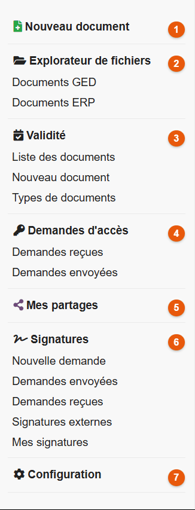
Les entrées affichées dépendent de vos droits et des fonctions activées. Si le menu GED n'apparaît pas, voir le chapitre Dépannage.
Vérifier l'installation en cinq minutes
- Avec le compte administrateur, créez dans la GED un dossier « Essai » et donnez au groupe Contributeurs GED la lecture et l'écriture sur ce dossier (clic droit, Gérer les permissions, voir le chapitre Permissions et accès).
- Avec un compte de test du groupe Contributeurs GED, ouvrez , entrez dans « Essai » et glissez-y un PDF depuis votre poste : il apparaît avec sa miniature.
- Cliquez sur le fichier : le panneau d'aperçu l'affiche à droite.
- Faites un clic droit sur le fichier, puis Supprimer : il part à la corbeille, d'où vous pouvez le restaurer.
- Reconnectez-vous avec un compte qui n'a que la lecture : les commandes d'écriture n'apparaissent pas.
Par défaut, FileManager fonctionne en mode restrictif : un utilisateur qui n'est pas administrateur ne voit un dossier que si une permission le lui ouvre. C'est pourquoi l'essai commence par une permission sur le dossier. Le mode se règle dans .
3 L'écran de l'explorateur
L'explorateur est l'écran principal de FileManager. Il s'ouvre depuis le menu du haut GED, ou par . Il se lit de haut en bas : on choisit une source, on navigue dans ses dossiers, on agit sur les documents.
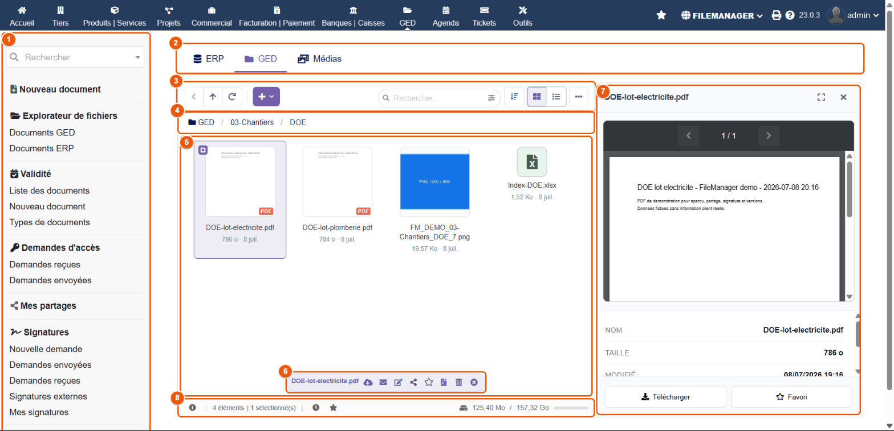
- Menu de gauche de FileManager (chapitre Installation).
- Onglets des sources : ERP, GED, Médias et les stockages connectés (chapitre Les sources).
- Barre d'outils : navigation, bouton + Nouveau, recherche, tri et vues.
- Fil d'Ariane : le chemin du dossier affiché ; cliquez sur un élément pour y remonter.
- Zone des fichiers : dossiers puis fichiers du dossier courant, en grille ou en liste.
- Barre d'actions de la sélection : apparaît quand un élément est sélectionné.
- Panneau d'aperçu : le contenu et les informations de l'élément sélectionné.
- Barre d'état : aide, nombre d'éléments, fichiers récents, favoris, espace disque.
La barre d'outils
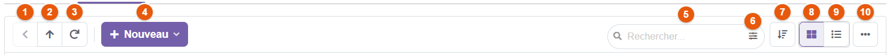
| Repère | Bouton | Rôle | Raccourci |
|---|---|---|---|
| 1 | Retour | Revient au dossier affiché précédemment. | — |
| 2 | Dossier parent | Remonte d'un niveau. | Retour arrière |
| 3 | Actualiser | Relit le dossier depuis le serveur (utile après une action faite ailleurs). | F5 |
| 4 | + Nouveau | Menu de création et d'import : envoyer des fichiers, nouveau dossier, nouveau document, raccourci, import depuis une URL ou une source externe (chapitre Créer). | — |
| 5 | Rechercher… | Filtre instantanément le dossier ; Entrée lance la recherche complète. | Ctrl+F |
| 6 | Options de recherche | Ouvre les options et les filtres (chapitre Rechercher). | — |
| 7 | Trier | Trie par nom (A à Z), date (plus récent d'abord), taille (plus gros d'abord) ou type. Votre choix est mémorisé. En vue liste, un clic sur un en-tête de colonne trie aussi, et un second clic inverse l'ordre. | — |
| 8 | Vue grille | Vignettes et miniatures. | — |
| 9 | Vue liste | Une ligne par élément, en colonnes. | — |
| 10 | Plus d'actions | Galerie d'images, panneau d'aperçu, corbeille, aide, menu latéral (voir ci-dessous). | — |
Quand la fenêtre est étroite, certaines commandes passent automatiquement dans Plus d'actions ; leurs raccourcis restent actifs.
Le menu « Plus d'actions »
- Galerie d'images : fait défiler les images du dossier en plein écran (chapitre Vues et aperçu).
- Panneau d'aperçu (Ctrl+I) : affiche ou masque le panneau de droite.
- Corbeille : les éléments supprimés, à restaurer ou à supprimer définitivement (chapitre Supprimer et corbeille).
- Aide contextuelle (F1) : l'aide intégrée de l'écran.
- Masquer/Afficher le menu latéral (Ctrl+B) : donne toute la largeur à l'explorateur.
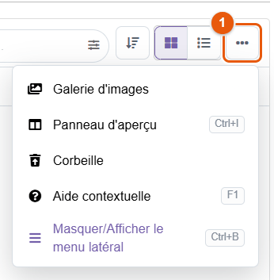
La barre d'actions de la sélection
Dès qu'un élément est sélectionné, une barre flottante apparaît en bas de la zone des fichiers 6. Elle reprend le nom de l'élément et ses actions les plus courantes : télécharger, envoyer par e-mail, renommer, partager, ajouter aux favoris, propriétés, supprimer, désélectionner. Avec plusieurs éléments sélectionnés, elle propose les actions groupées : Déplacer vers…, Copier vers…, Télécharger en ZIP, Envoyer par e-mail, Créer une archive ZIP, Supprimer, Désélectionner (chapitre Naviguer et sélectionner).
La barre d'état
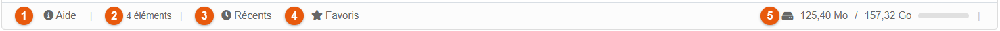
- Aide : présentation des fonctions de l'écran.
- Nombre d'éléments du dossier, et nombre d'éléments sélectionnés.
- Récents : les derniers fichiers que vous avez ouverts.
- Favoris : vos fichiers et dossiers épinglés.
- Espace disque : espace occupé par les documents et capacité du disque.
Selon votre situation, la barre d'état affiche aussi un bouton Manquants (n) (documents obligatoires absents des dossiers que vous pouvez ouvrir, chapitre Rechercher) et un accès aux demandes d'accès en attente.
Le menu contextuel
Un clic droit sur un fichier ou un dossier ouvre son menu contextuel. Il ne propose que les actions possibles pour cet élément, avec vos droits : un PDF propose l'éditeur PDF et les outils PDF, une image l'éditeur d'images, un document Office l'édition avec Collabora, un dossier la personnalisation et la liaison à un objet Dolibarr. Le détail des menus est donné au chapitre Organiser.
La touche ? affiche la liste des raccourcis clavier ; elle est reprise en annexe (Raccourcis clavier).
4 Les sources de documents
Les onglets en haut de l'explorateur sont les sources : chacune est un espace de stockage différent, avec ses propres règles. Un clic sur un onglet affiche la racine de la source.
| Source | Ce qu'elle contient | Écriture |
|---|---|---|
| ERP | Les documents rangés sur les fiches Dolibarr : devis, commandes, factures, expéditions, contrats, projets, produits, tiers… | Lecture seule dans l'explorateur ; on ajoute un document depuis la fiche de l'objet. |
| GED | L'espace documentaire libre de l'entreprise : vos dossiers, votre classement. | Oui, selon vos droits et les permissions du dossier. |
| Médias | La médiathèque de Dolibarr : images, logos, fichiers du module Site web, utilisables dans les modèles de documents et les communications. | Oui, selon vos droits. |
| Stockages connectés | Les connexions cloud créées par l'administrateur : Nextcloud ou ownCloud, Google Drive, Microsoft OneDrive, Amazon S3 et compatibles, FTP, partage réseau SMB/CIFS. | Selon la connexion : elle peut être déclarée en lecture seule. |
L'administrateur choisit les sources visibles, leur ordre et celle qui s'ouvre par défaut (, chapitre Sources et stockage).
ERP : les documents des fiches Dolibarr
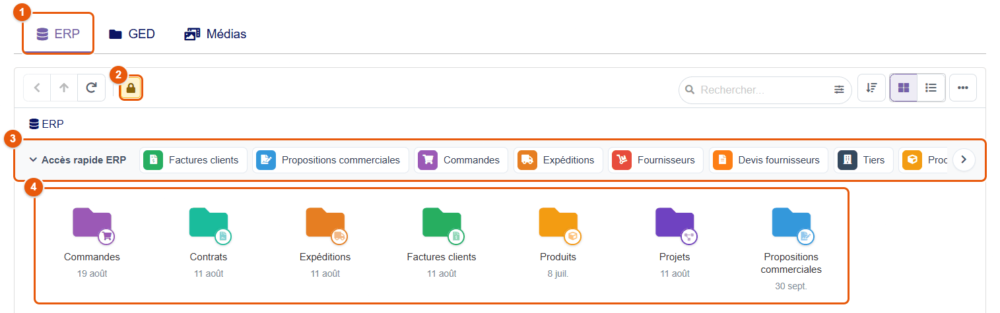
- L'onglet ERP.
- Le badge cadenas : la source est en lecture seule ; le bouton + Nouveau n'apparaît pas.
- Accès rapide ERP : un clic ouvre directement un type d'objet (Factures clients, Propositions commerciales, Commandes, Expéditions…). La flèche à droite fait défiler la liste ; le chevron à gauche la replie.
- Les dossiers par type d'objet. Chacun contient un dossier par objet, nommé d'après sa référence (par exemple
FA2610-0042), qui contient ses documents.
Au survol d'un dossier d'objet, une infobulle résume l'objet : référence, montant, statut et tiers. La petite icône en haut à droite du dossier ouvre la fiche Dolibarr de l'objet.
Vous ne voyez que les objets que Dolibarr vous autorise à consulter : un commercial limité à ses clients ne voit que leurs pièces.
La source ERP se consulte mais ne s'écrit pas depuis l'explorateur. Pour joindre un document à un devis ou une facture, utilisez la fiche de l'objet : l'onglet Fichiers joints de Dolibarr, ou le panneau Fichiers joints de FileManager sur la fiche (chapitre La banette sur la fiche d'un objet). Un dossier de la GED peut aussi être lié à un objet pour y déposer ses documents (chapitre Les documents d'une fiche Dolibarr).
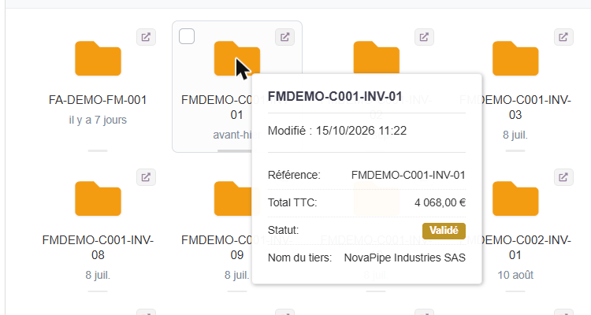
GED : l'espace documentaire de l'entreprise
La GED est l'espace que vous organisez librement : dossiers par service, par client, par chantier… C'est là que se créent les dossiers, les documents et les arborescences. Chaque dossier et chaque fichier peut porter ses propres permissions (chapitre Permissions et accès). Les éléments supprimés passent par la corbeille.
Un petit cadenas sur la vignette d'un dossier ou d'un fichier signale un accès restreint : il n'est pas ouvert à tous. Si vous avez le droit de gérer les permissions, un clic sur le cadenas les ouvre.
Médias : la médiathèque
La source Médias correspond à la médiathèque de Dolibarr. Ses fichiers servent aux pages du module Site web, aux modèles de documents et aux communications (images insérées dans un e-mail, par exemple).
La médiathèque est faite pour publier : n'y rangez pas de document confidentiel. Utilisez la GED pour les documents internes.
Les stockages connectés
Chaque connexion cloud créée par l'administrateur apparaît comme un onglet supplémentaire, avec le libellé qu'il lui a donné (par exemple « Nextcloud de l'agence »). Vous y naviguez comme dans la GED : créer, envoyer, renommer, déplacer, partager… Les droits Dolibarr et les permissions FileManager s'appliquent en plus des droits du compte distant.
Tous les fournisseurs n'offrent pas les mêmes fonctions : certaines opérations peuvent manquer selon le service (la configuration en donne le détail, chapitre Sources et stockage). Une connexion déclarée en lecture seule affiche le cadenas et masque les commandes d'écriture.
Une connexion peut aussi servir de stockage à la GED elle-même : vous travaillez alors dans l'onglet GED, mais les fichiers sont conservés sur le stockage choisi par l'administrateur.
5 Vues, aperçu et états des documents
Grille ou liste, panneau d'aperçu, plein écran, galerie : FileManager montre le contenu d'un document sans le télécharger. Les petits badges posés sur les vignettes résument son état : partagé, versionné, en signature, proche de l'échéance…
Grille ou liste
Les deux boutons à droite de la barre d'outils basculent entre la vue grille (vignettes et miniatures, idéale pour les images et les PDF) et la vue liste (une ligne par élément, pour les dossiers volumineux). Votre choix est conservé d'une session à l'autre. Dans les deux vues, les dossiers sont toujours affichés avant les fichiers.
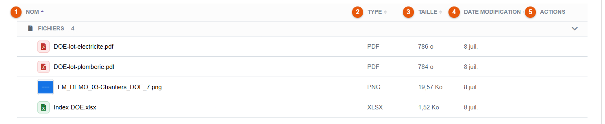
- Nom : la flèche indique la colonne de tri et son sens.
- Type : l'extension du fichier, ou « Dossier ».
- Taille.
- Date modification.
- Actions : apparaissent au survol de la ligne.
Un clic sur un en-tête trie la liste par cette colonne ; un second clic inverse l'ordre. Les dossiers et les fichiers forment deux groupes repliables (« Fichiers 4 » sur la capture) : le chevron à droite du groupe le replie. En vue liste, le bouton Densité de la liste de la barre d'outils choisit l'espacement des lignes : Compacte, Normale ou Confortable.
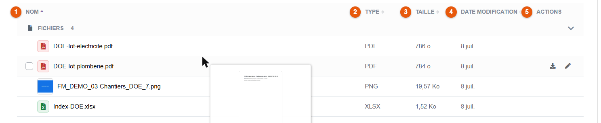
Au survol d'une ligne, une miniature du document s'affiche, avec à droite les actions rapides : Télécharger (flèche) et Renommer (crayon), ce dernier si vous avez le droit d'écriture. La case à cocher à gauche du nom ajoute la ligne à la sélection.
Trier
Le bouton Trier propose quatre ordres : Nom (de A à Z), Date (le plus récent d'abord), Taille (le plus gros d'abord) et Type (par extension). L'ordre actif est surligné et marqué d'une flèche. Il est mémorisé pour vos prochaines visites.
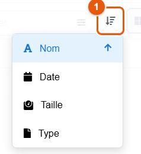
Le panneau d'aperçu
Un clic sur un fichier l'affiche dans le panneau de droite. Le panneau s'ouvre et se ferme par ou par Ctrl+I ; sa bordure gauche se fait glisser pour l'élargir.
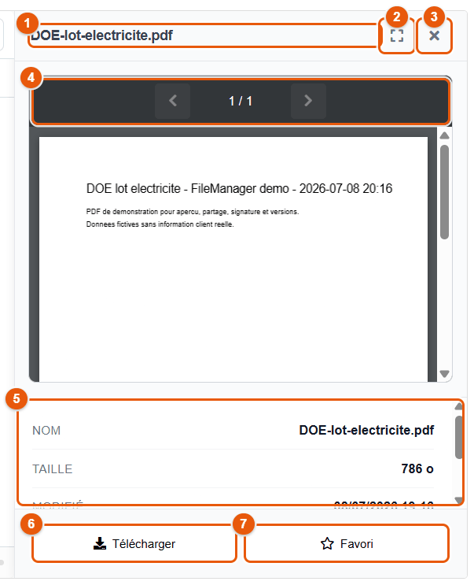
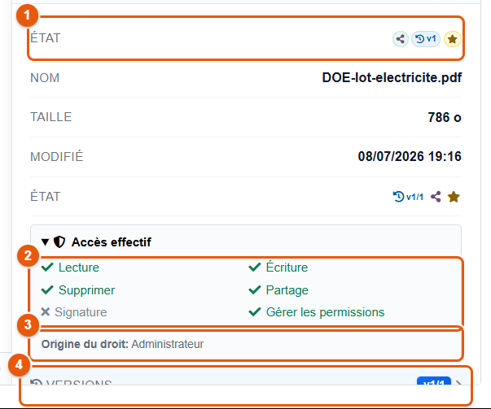
Sur la capture de gauche :
- Le nom du fichier.
- Plein écran : ouvre le document sur toute la fenêtre.
- Fermer le panneau.
- La visionneuse : pour un PDF, pagination (page courante / nombre de pages) et défilement.
- Les informations : nom, taille, date de modification, état, propriétaire, chemin, objet Dolibarr lié le cas échéant.
- Télécharger le fichier.
- Favori : l'ajoute à vos favoris (ou l'en retire).
Sur la capture de droite :
- État : les badges du document (voir plus bas) ; chacun est cliquable.
- Accès effectif : ce que vous pouvez faire sur ce document — lecture, écriture, suppression, partage, signature, gestion des permissions. Une coche verte signifie autorisé, une croix grise refusé.
- Origine du droit : d'où vient cet accès (administrateur, permission du dossier, héritage, partage…). Utile pour comprendre pourquoi une action est possible ou non.
- Versions : le nombre de versions ; un clic ouvre l'historique (chapitre Versions).
Ce que l'aperçu sait afficher
L'aperçu affiche dans le navigateur les PDF, les images, les documents Word, Excel, PowerPoint et OpenDocument (mis en page, avec les feuilles et les diapositives), les anciens formats .doc et .ppt (convertis à la volée), la vidéo et l'audio, le texte et le code (avec coloration), le Markdown et les pages HTML. Le détail, format par format, est au chapitre Documents Office : aperçu et édition en ligne. Pour les autres formats, le panneau affiche les informations du fichier et le bouton Télécharger.
Un double-clic sur un fichier l'ouvre en plein écran (ou, pour un dossier, entre dedans). En plein écran, les boutons en haut à droite permettent d'imprimer, de télécharger, de réduire et de fermer ; Échap referme.
La galerie d'images
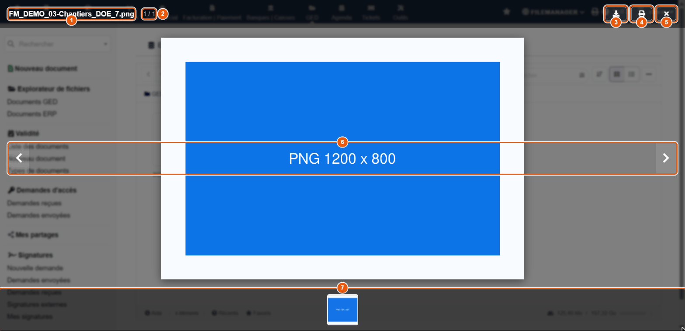
- Le nom de l'image affichée.
- Sa position dans le dossier (ici 1 / 1).
- Télécharger l'image.
- Imprimer l'image.
- Fermer la galerie (ou Échap).
- Image précédente / suivante (ou les flèches du clavier).
- Le bandeau des miniatures : un clic affiche l'image.
Les badges d'état
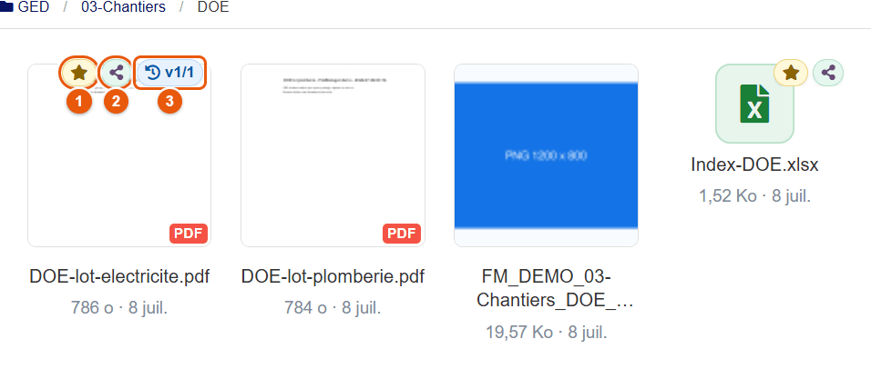
Les badges s'affichent sur la vignette (vue grille), à côté du nom (vue liste) et dans la ligne État du panneau d'aperçu. Leur infobulle donne le détail ; plusieurs sont cliquables.
| Badge | Signification | Au clic |
|---|---|---|
| Horloge « v2/3 » | Le fichier a des versions : version courante / nombre de versions. | Ouvre l'historique des versions. |
| Cadenas | Accès restreint : le document n'est pas ouvert à tous. | Ouvre ses permissions (si vous en avez le droit). |
| Partage | Un ou plusieurs liens de partage sont actifs. | Ouvre le partage du document. |
| Bouclier | Stocké chiffré sur le serveur (lu et écrit de façon transparente). | — |
| Crayon avec personnage | En cours d'édition par un autre utilisateur. | — |
| Document avec plume | Signature : en attente, document signé ou demande expirée. | — |
| Clé | Une demande d'accès est en attente. | — |
| Étoile | Dans vos favoris. | — |
| Œil | Lecture seule. | — |
| Sablier / triangle | Document à validité : valide (sablier plein), échéance dans moins de 30 jours (sablier qui se vide), expiré (triangle rouge). | Ouvre la fiche de validité. |
| Lien, dossier ouvert, flèche sortante | Raccourci vers un fichier, un dossier ou une adresse web ; un lien barré signale une cible introuvable. | — |
| Schéma | Dossier lié à un objet Dolibarr. | — |
Les filtres de recherche savent retrouver les documents par état — partagés, en signature, en alerte de validité, versionnés… (chapitre Rechercher et retrouver).
Au quotidien
Naviguer, créer, importer, organiser, supprimer, retrouver et envoyer des documents.
- 6Naviguer et sélectionner
- 7Créer et importer
- 8Organiser les documents
- 9Supprimer et restaurer : la corbeille
- 10Rechercher et retrouver
- 11Télécharger et envoyer par e-mail
6 Naviguer et sélectionner
On se déplace dans FileManager comme dans l'explorateur de son ordinateur : double-clic pour entrer dans un dossier, fil d'Ariane pour remonter, clic pour sélectionner. Le clavier permet de tout faire sans souris.
Se déplacer
- Entrer dans un dossier : double-clic sur sa vignette (ou Entrée quand il est sélectionné).
- Remonter : un clic sur un élément du fil d'Ariane ramène à ce niveau ; le bouton Dossier parent ou la touche Retour arrière remonte d'un niveau.
- Revenir en arrière : le bouton Retour rouvre le dossier affiché précédemment.
- Actualiser : le bouton ou F5 relit le dossier — utile si un collègue vient d'y déposer un document.
- Changer de source : un clic sur un onglet (ERP, GED, Médias…) en haut de l'explorateur.
L'adresse de la page suit le dossier affiché : vous pouvez l'ajouter aux favoris de votre navigateur, ou la copier pour la donner à un collègue. Il verra le dossier s'il y a accès.
Sélectionner
| Geste | Effet |
|---|---|
| Clic | Sélectionne l'élément et l'affiche dans le panneau d'aperçu. |
| Ctrl+clic | Ajoute l'élément à la sélection, ou l'en retire. |
| Maj+clic | Sélectionne tous les éléments entre le dernier cliqué et celui-ci. |
| Case à cocher (survol, vue liste) | Ajoute la ligne à la sélection. |
| Ctrl+A | Sélectionne tout le dossier. |
| Flèches du clavier (Maj pour étendre) | Déplacent la sélection d'un élément à l'autre. |
| Origine / Fin | Premier / dernier élément du dossier. |
| Échap | Vide la sélection. |
La barre d'actions de la sélection
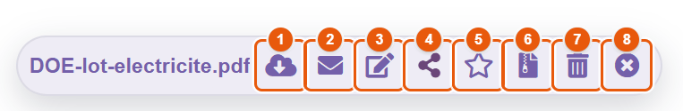
- Télécharger le fichier.
- Envoyer par e-mail (chapitre Envoyer par e-mail).
- Renommer.
- Partage : créer un lien de partage (chapitre Partager).
- Ajouter/retirer des favoris.
- Créer une archive ZIP contenant l'élément.
- Supprimer : envoie à la corbeille.
- Désélectionner.
Pour un dossier, la barre propose aussi Personnaliser (couleur et icône) ; pour une archive ZIP, Extraire ; dans les résultats d'une recherche, Aller au dossier parent. Les actions affichées dépendent de vos droits : en lecture seule, seules la consultation, le téléchargement, l'e-mail et les favoris restent.
Avec plusieurs éléments sélectionnés, la barre affiche leur nombre et les actions groupées :
| Action | Effet |
|---|---|
| Déplacer vers… | Choisir un dossier de destination, dans la même source ou une autre. |
| Copier vers… | Même choix ; les originaux restent en place. |
| Télécharger en ZIP | Télécharge une archive contenant la sélection. |
| Envoyer par e-mail | Joint les fichiers sélectionnés à un e-mail (20 Mo au total au plus). |
| Créer une archive ZIP | Crée l'archive dans le dossier courant. |
| Supprimer | Envoie la sélection à la corbeille, après confirmation. |
| Désélectionner | Vide la sélection. |
Glisser-déposer
- Depuis votre ordinateur : glissez des fichiers sur la zone des fichiers ; la zone se colore et l'envoi démarre (chapitre Créer et importer).
- Dans l'explorateur : glissez un ou plusieurs éléments sélectionnés sur un dossier pour les y déplacer.
Couper, copier, coller
Ctrl+C (copier) ou Ctrl+X (couper) sur la sélection, puis, dans le dossier de destination, Ctrl+V (coller). Le menu contextuel propose aussi Copier vers… et Déplacer vers…, qui ouvrent un sélecteur de dossier (chapitre Organiser).
Favoris et fichiers récents
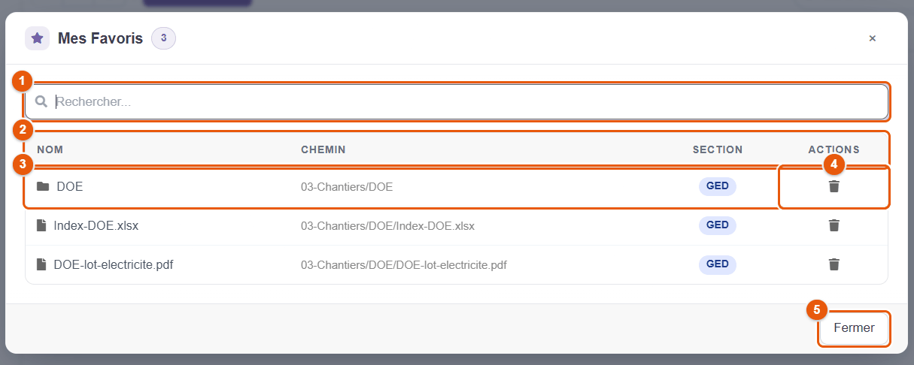
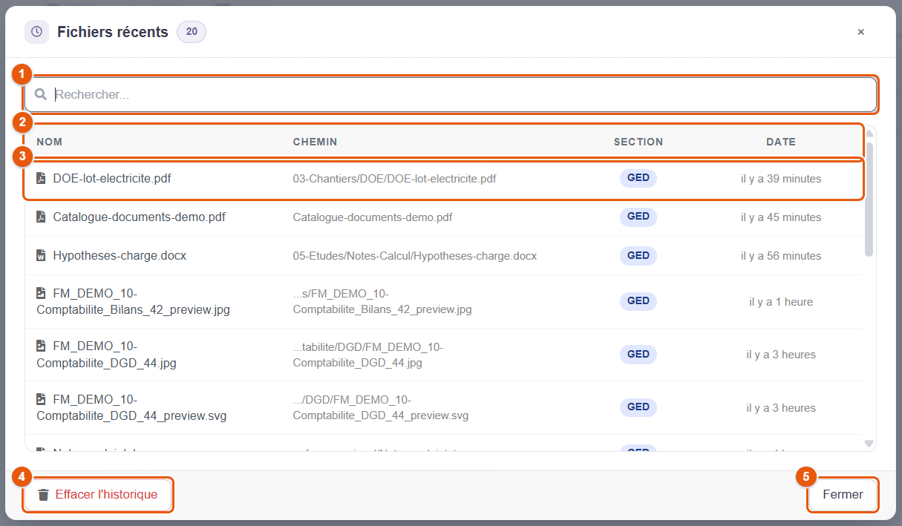
Favoris : épinglez un fichier ou un dossier avec l'étoile (barre d'actions, panneau d'aperçu ou menu contextuel Ajouter aux favoris). La fenêtre Mes Favoris, ouverte depuis la barre d'état, les liste avec leur chemin et leur source :
- Rechercher… : filtre la liste.
- Les colonnes Nom, Chemin, Section (la source) et Actions.
- Un clic sur une ligne ouvre l'élément dans l'explorateur.
- La corbeille retire l'élément des favoris (le fichier lui-même n'est pas touché).
- Fermer.
Récents : la fenêtre Fichiers récents de la barre d'état liste les derniers fichiers que vous avez ouverts, du plus récent au plus ancien, avec le même filtre et les mêmes colonnes ; un clic rouvre le fichier. Effacer l'historique 4 vide la liste. Favoris et fichiers récents sont personnels.
L'administrateur peut désactiver les favoris ou les fichiers récents ().
7 Créer et importer
Tout ce qui ajoute un élément dans le dossier courant part du bouton + Nouveau : envoyer des fichiers, créer un dossier, un document Office ou un raccourci, importer depuis une adresse web ou depuis une autre source. Le bouton n'apparaît que si vous pouvez écrire dans le dossier.
Le menu comporte deux parties :
Créer
- Envoyer des fichiers (Ctrl+U) : depuis votre ordinateur.
- Nouveau dossier (Maj+F).
- Nouveau document (Maj+D) : un document Office vierge ou à partir d'un modèle.
- Créer un raccourci : vers une adresse web, un fichier ou un dossier.
Importer
- Importer depuis une URL : télécharge un fichier public directement dans le dossier.
- Importer des fichiers/dossiers externes : copie des éléments depuis une autre source (ERP, autre dossier de la GED, stockage connecté).
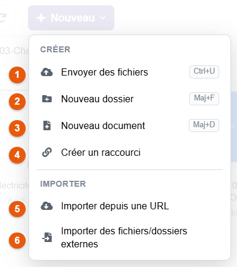
Envoyer des fichiers depuis votre ordinateur
- Ouvrez le dossier de destination.
- Cliquez sur + Nouveau puis Envoyer des fichiers (ou Ctrl+U), et choisissez un ou plusieurs fichiers.
- Une barre de progression suit chaque fichier ; ne fermez pas la page avant la fin.
Plus rapide : glissez les fichiers depuis l'explorateur de votre ordinateur sur la zone des fichiers. Elle se colore, et l'envoi démarre dès que vous relâchez. Les fichiers sont envoyés l'un après l'autre.
| Taille maximale | Fixée par l'administrateur (50 Mo par défaut), dans la limite autorisée par le serveur. |
| Types de fichiers | Seules les extensions autorisées par l'administrateur sont acceptées ; les fichiers exécutables et les scripts sont toujours refusés. |
| Nom déjà pris | Le fichier n'écrase rien : il est enregistré sous un nouveau nom, par exemple rapport_1.pdf. Pour remplacer un document en gardant son historique, utilisez les versions (chapitre Versions). |
| Antivirus | Si l'antivirus de Dolibarr est configuré, chaque fichier est analysé à l'envoi. |
| Espace disque | L'envoi est refusé si l'espace libre du serveur passe sous le minimum fixé par l'administrateur. |
Dans un dossier lié à un objet Dolibarr (chapitre Les documents d'une fiche Dolibarr), les fichiers envoyés sont rangés dans les documents de l'objet et apparaissent sur sa fiche.
Créer un dossier
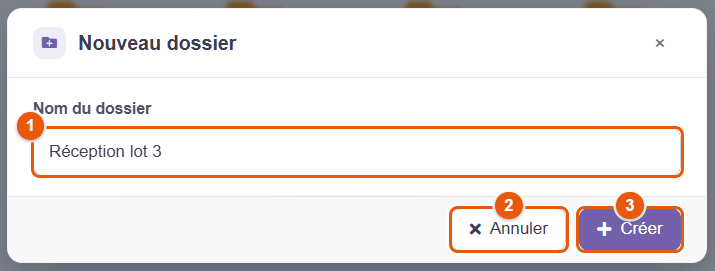
- Cliquez sur + Nouveau puis Nouveau dossier (ou Maj+F).
- Saisissez le Nom du dossier 1. Accents, espaces et autres alphabets sont acceptés ; les caractères réservés par les systèmes de fichiers (
/ \ : * ? " < > |) sont remplacés par un tiret bas. - Cliquez sur + Créer 3, ou Annuler 2.
Le nouveau dossier hérite des permissions du dossier parent (chapitre Permissions et accès).
Créer un document
La fenêtre Nouveau document crée un fichier Office vierge ou à partir d'un modèle de la bibliothèque. Elle s'ouvre par + Nouveau › Nouveau document, par Maj+D, ou par Nouveau document dans le menu de gauche.
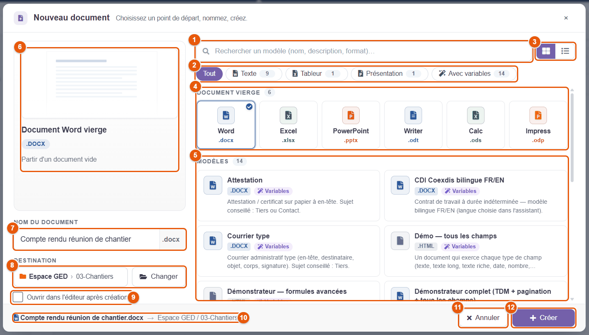
- Rechercher un modèle par nom, description ou format.
- Filtres : tout, texte, tableur, présentation, modèles avec variables.
- Affichage des modèles en vignettes ou en liste.
- Document vierge : Word, Excel, PowerPoint (formats Microsoft) ou Writer, Calc, Impress (formats OpenDocument).
- Modèles : la bibliothèque de modèles de votre entreprise.
- L'aperçu du choix courant et sa description.
- Nom du document ; l'extension est ajoutée d'office.
- Destination : le dossier où le document sera créé ; Changer ouvre un sélecteur de dossier.
- Ouvrir dans l'éditeur après création : ouvre le document dans l'éditeur Office (si l'édition Office est configurée).
- Le récapitulatif : nom final et dossier de destination.
- Annuler.
- + Créer.
À partir d'un modèle avec variables
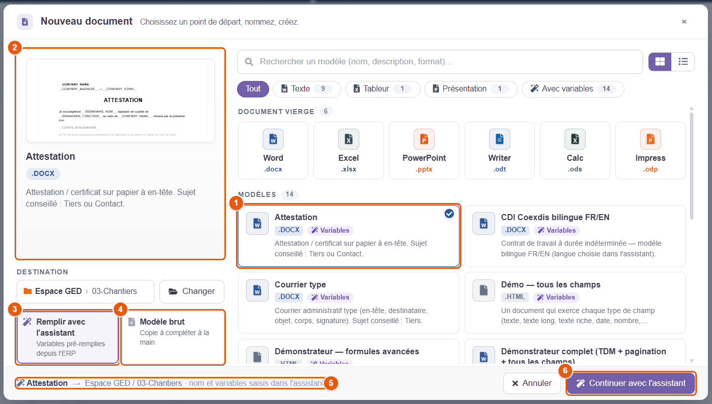
Un modèle marqué Variables contient des champs à remplir (nom du client, adresse, montant…). Après l'avoir choisi 1 (son aperçu s'affiche 2), deux modes sont proposés :
- Remplir avec l'assistant 3 : les variables sont pré-remplies à partir d'une fiche Dolibarr (tiers, contact, devis…) que vous choisissez ; vous complétez les autres champs dans un formulaire, puis le document est produit. Le bouton devient Continuer avec l'assistant 6.
- Modèle brut 4 : une simple copie du modèle, à compléter à la main.
Le récapitulatif 5 rappelle ce qui va être créé. L'assistant de publipostage est décrit au chapitre Publipostage : l'assistant pas à pas, la conception des modèles au chapitre Écrire un modèle de publipostage.
Créer un raccourci
Un raccourci est un élément du dossier qui pointe ailleurs : il évite de dupliquer un fichier ou de chercher un lien.
- Type de raccourci : Lien web, Fichier ou Dossier virtuel.
- Nom affiché dans le dossier.
- URL (lien web) ou la cible choisie dans un sélecteur (fichier, dossier).
- Mode d'ouverture : Ouvrir dans cet onglet ou Ouvrir dans un nouvel onglet.
- Annuler.
- Créer.
Un raccourci porte un badge (lien, dossier ouvert ou flèche sortante). Si sa cible est supprimée, un badge de lien barré le signale. Supprimer un raccourci ne supprime jamais sa cible.
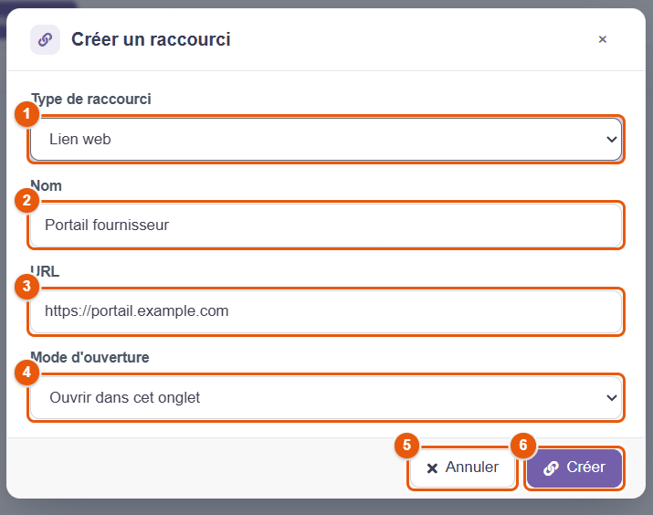
Importer depuis une URL
- Importer depuis une URL : l'adresse du fichier (http ou https). Les adresses locales, privées ou réservées sont bloquées.
- Nom du fichier : proposé d'après l'adresse, modifiable.
- Remplacer le fichier existant si le nom existe déjà : sinon, un nouveau nom est choisi.
- Authentification du téléchargement : Aucune, Identifiant / mot de passe, Token Bearer ou en-tête personnalisé, pour un fichier protégé.
- Annuler.
- Importer.
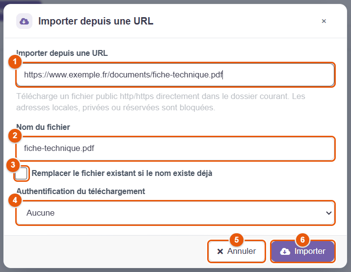
Importer des fichiers ou dossiers d'une autre source
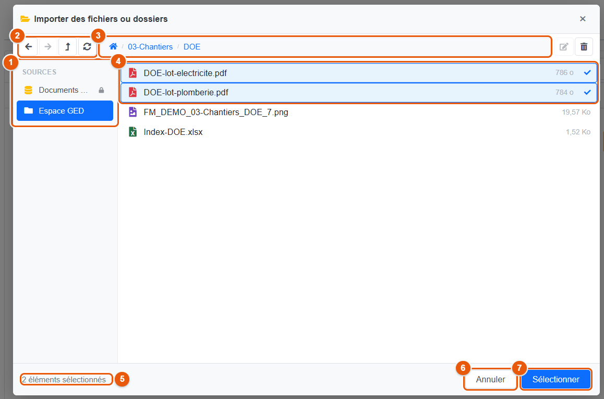
- Sources : Documents ERP, Espace GED, stockages connectés.
- Navigation : retour, suivant, dossier parent, actualiser.
- Le chemin du dossier parcouru ; un clic remonte.
- Cliquez sur les fichiers ou dossiers à importer : une coche les marque.
- Le nombre d'éléments sélectionnés.
- Annuler.
- Sélectionner : copie les éléments dans le dossier courant. Les originaux restent en place.
Une notification indique le nombre d'éléments importés et, le cas échéant, ceux qui ont échoué (droits, nom invalide…).
8 Organiser les documents
Renommer, déplacer, copier, dupliquer, archiver, personnaliser un dossier : tout passe par le menu contextuel (clic droit) ou par la barre d'actions de la sélection. Les actions proposées dépendent du type d'élément et de vos droits.
Le menu contextuel d'un fichier
- Aperçu : ouvre le document en plein écran.
- Les outils propres au type : pour un PDF, Éditer le PDF, Outils PDF (sous-menu) et Signatures (grisé si la signature n'est pas disponible) ; pour une image, l'éditeur d'images ; pour un document Office, Éditer avec Collabora et Convertir en PDF.
- Le rangement : Déplacer vers…, Copier vers…, Dupliquer, Créer une archive ZIP.
- Renommer et Supprimer.
- La diffusion : Télécharger, Partager le document, Envoyer par e-mail, Copier le lien.
- Ajouter aux favoris et Propriétés.
- La gestion : Gérer les permissions, Ajouter aux documents à validité, Versions du fichier.
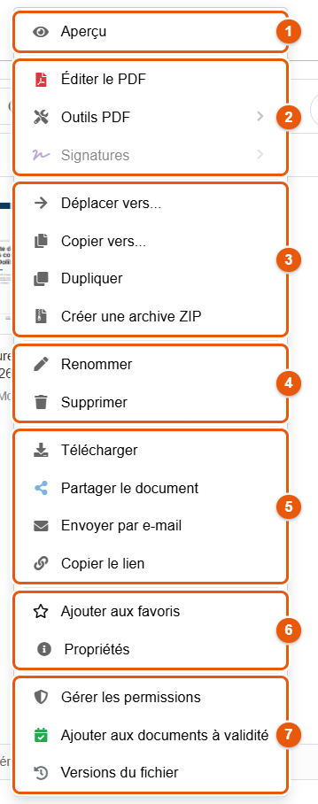
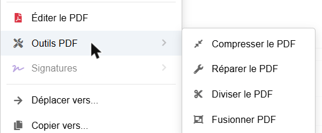
Le menu contextuel d'un dossier
Un dossier propose Ouvrir, les mêmes actions de rangement, Renommer, Supprimer, Copier le lien, Ajouter aux favoris, Propriétés, Gérer les permissions et, avec le droit de configuration, Lier à un objet… (chapitre Les documents d'une fiche Dolibarr).
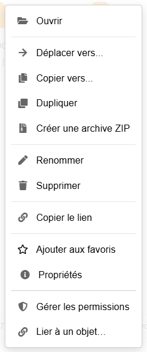
Renommer
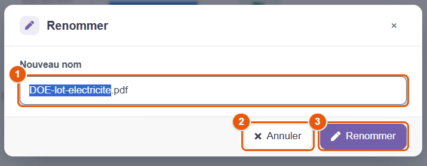
- Clic droit sur l'élément, Renommer (ou F2).
- Le nom est présélectionné sans son extension 1 : tapez directement le nouveau nom.
- Cliquez sur Renommer 3 ou Annuler 2.
Les permissions, versions, partages, favoris et liens vers des fiches suivent l'élément renommé.
Déplacer ou copier vers un autre dossier
- L'élément (ou le nombre d'éléments) concerné.
- Source de destination : vous pouvez déplacer ou copier vers une autre source (de la GED vers un stockage connecté, par exemple).
- Le chemin parcouru ; un clic remonte.
- Les sous-dossiers : un clic entre dans le dossier.
- Annuler.
- Déplacer ici (ou Copier ici) : dans le dossier affiché.
La fenêtre s'ouvre par Déplacer vers… ou Copier vers… (menu contextuel ou barre d'actions de la sélection multiple). Le glisser-déposer sur un dossier et Ctrl+X / Ctrl+V déplacent aussi.
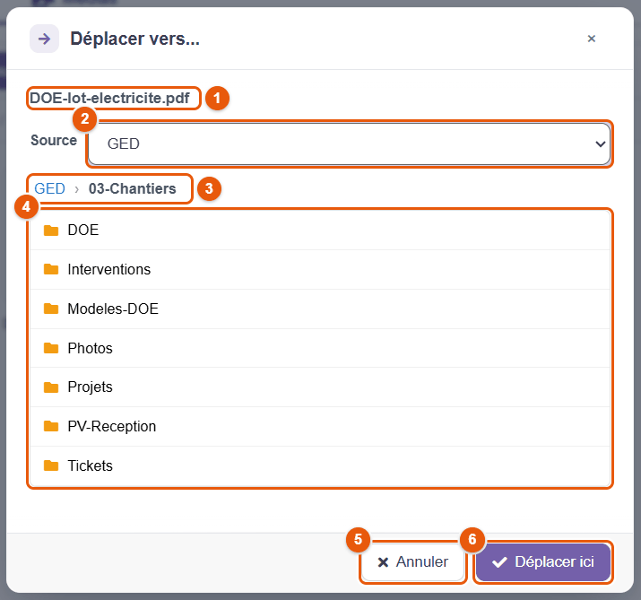
Déplacer vers un autre dossier peut changer les accès : un élément qui hérite de son dossier prend les permissions de son nouveau dossier. Vérifiez les permissions après un déplacement sensible.
Dupliquer
Dupliquer crée une copie de l'élément dans le même dossier, sous un nom distinct. C'est le moyen le plus rapide de partir d'un document existant.
Archives ZIP
- Créer une archive ZIP : sur un élément ou une sélection ; FileManager propose un nom d'archive, modifiable, puis crée le fichier
.zipdans le dossier courant. - Extraire : sur une archive (zip, tar, tar.gz, tar.bz2, gz, bz2), extrait son contenu dans un nouveau sous-dossier du dossier courant. Les archives trop volumineuses ou contenant trop d'éléments sont refusées par sécurité.
- Télécharger en ZIP (sélection multiple) : télécharge une archive sur votre ordinateur sans la créer dans le dossier.
Copier le lien
Copier le lien place dans le presse-papiers l'adresse de l'élément dans l'explorateur : pour un dossier, le dossier ; pour un fichier, son dossier avec le fichier mis en évidence. Collez-la dans un message à un collègue : il ouvrira l'élément s'il y a accès. Pour donner un document à une personne extérieure, utilisez plutôt un lien de partage (chapitre Partager).
Propriétés d'un dossier
Sélectionner un dossier (ou Propriétés dans son menu) affiche son résumé dans le panneau d'aperçu :
- Le nombre de fichiers et de sous-dossiers, la taille totale et la date de dernière modification.
- Les types de fichiers présents et leur nombre.
- Le nom et le chemin.
- Ouvrir le dossier.
- Personnaliser sa couleur et son icône.
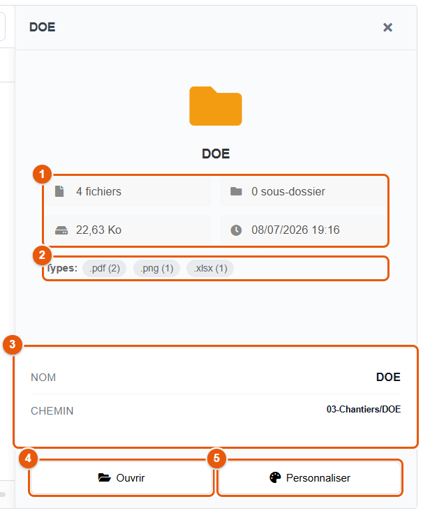
Personnaliser un dossier
Une couleur et une icône rendent les dossiers importants faciles à repérer.
- Couleur : douze teintes.
- Icône : vingt-quatre pictogrammes (archives, bâtiment, photo, comptabilité, courrier, sécurité, équipe…).
- L'aperçu du résultat.
- Personnalisation globale : visible par tous les utilisateurs ; réservée aux administrateurs. Sinon, la personnalisation n'est visible que par vous.
- Réinitialiser : revient à l'apparence par défaut.
- Annuler.
- Enregistrer.
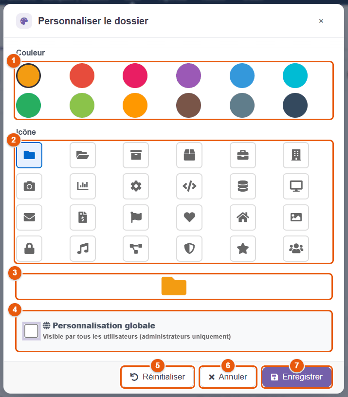
9 Supprimer et restaurer : la corbeille
Supprimer un document dans FileManager ne le détruit pas tout de suite : il part à la corbeille, d'où on peut le restaurer pendant le délai de conservation (30 jours par défaut).
Supprimer
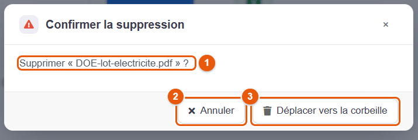
- Sélectionnez un ou plusieurs éléments, puis Supprimer (menu contextuel, barre d'actions, ou touche Suppr).
- Vérifiez le nom rappelé dans la fenêtre 1.
- Cliquez sur Déplacer vers la corbeille 3, ou Annuler 2.
Supprimer un dossier envoie à la corbeille tout son contenu. Les versions d'un fichier le suivent dans la corbeille et reviennent avec lui s'il est restauré.
Il faut le droit « Supprimer dans le gestionnaire de fichiers » et la permission de suppression sur l'élément. Si la protection par propriétaire est activée, seul le créateur d'un dossier (ou son responsable, ou un administrateur) peut le supprimer.
Ouvrir la corbeille
ouvre la corbeille de la source affichée.
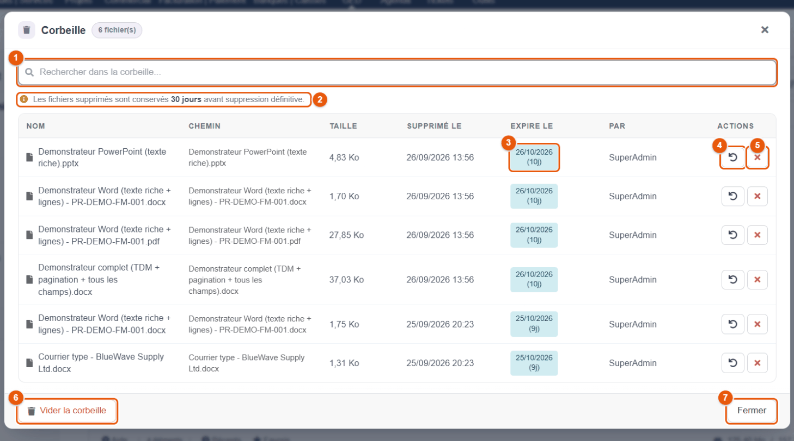
- Rechercher dans la corbeille.
- Le délai de conservation appliqué.
- Expire le : la date de suppression définitive et le nombre de jours restants. La pastille passe à l'orange puis au rouge à l'approche de l'échéance.
- Restaurer : remet l'élément à son emplacement d'origine.
- Supprimer définitivement l'élément, après confirmation.
- Vider la corbeille : supprime définitivement tous les éléments, après confirmation.
- Fermer.
Les colonnes indiquent aussi le chemin d'origine, la taille, la date de suppression et la personne qui a supprimé.
Qui voit quoi dans la corbeille
- Chacun voit ce qu'il a lui-même supprimé.
- Un responsable voit aussi ce qu'ont supprimé les personnes qu'il encadre (son équipe dans Dolibarr), pour les éléments qu'ils partageaient avec d'autres : un document commun supprimé par erreur peut ainsi être rattrapé sans l'administrateur.
- Un administrateur voit tout.
Sur une très grande installation, la fenêtre montre les éléments supprimés le plus récemment ; les plus anciens restent dans la corbeille jusqu'à leur expiration.
Restaurer
- Ouvrez la corbeille et retrouvez l'élément (le champ de recherche filtre la liste).
- Cliquez sur le bouton Restaurer de sa ligne.
- L'élément revient dans son dossier d'origine, avec ses versions. Si le dossier n'existe plus, il est recréé.
Si un fichier du même nom a été créé entre-temps au même endroit, le fichier restauré ne l'écrase pas : il reçoit un nom suffixé de _restored_ suivi d'un nombre.
Suppression définitive
Supprimer définitivement et Vider la corbeille sont irréversibles : les fichiers et leurs versions sont effacés du serveur.
Un fichier dont une version est protégée (« Marquer comme importante », chapitre Versions des documents) ne peut pas être supprimé définitivement : « Cet élément a des versions protégées : il ne peut pas être supprimé définitivement. Levez d'abord leur protection. » Il en va de même d'un dossier qui contient un tel fichier. Vider la corbeille supprime tout le reste et indique ce qu'il a gardé (« 1 élément(s) conservé(s) : versions protégées. ») ; le nettoyage automatique fait de même.
Une tâche planifiée supprime chaque jour les éléments dont le délai de conservation est dépassé, et peut prévenir l'administrateur par e-mail (adresse réglée dans ).
Un fichier supprimé d'un stockage connecté (Nextcloud, Google Drive…) passe lui aussi par la corbeille de FileManager : une copie y est conservée, et la restauration le renvoie sur le stockage d'origine.
La corbeille peut être désactivée par l'administrateur () : la suppression devient alors immédiate et définitive, après confirmation.
10 Rechercher et retrouver
Le champ Rechercher… de la barre d'outils fait deux choses : il filtre instantanément le dossier affiché pendant que vous tapez, et lance une vraie recherche quand vous appuyez sur Entrée. Ses options ajoutent des filtres qui retrouvent des documents sans aucun mot-clé : toutes les factures d'un client, tous les documents en signature…
Filtrer le dossier affiché
Dès la première lettre tapée, le dossier ne montre plus que les éléments dont le nom contient le texte. Rien n'est envoyé au serveur : c'est instantané. Un bandeau au-dessus des résultats l'indique et propose de lancer la recherche complète. Échap ou la croix du champ efface le filtre.
Rechercher par mot-clé
Entrée lance la recherche dans les noms de fichiers — et dans leur contenu si l'option est cochée — selon les options choisies. Les résultats sont groupés par source ; chaque groupe s'arrête aux 50 premiers résultats et le signale. Un stockage connecté lent est interrompu au bout de quelques secondes : le groupe affiche alors « résultats partiels » et un lien Voir tous les résultats.
Les options et les filtres
- Recherche approximative (fuzzy) : tolère les lettres oubliées et les fautes de frappe légères (voir les recettes en fin de chapitre).
- Chercher dans le contenu : cherche aussi le texte à l'intérieur des documents (voir plus bas).
- Inclure les sous-dossiers : étend la recherche sous le dossier affiché.
- Sources unifiées : cherche à la fois dans la GED, les documents ERP et les stockages connectés.
- Fiche : un tiers, un projet, une commande, un produit… ; les documents qui lui appartiennent et, avec Inclure les fiches liées, ceux des fiches que Dolibarr lui lie.
- Type de document : une sorte de pièce Dolibarr (factures clients, devis…) ou un dossier type de la GED.
- Date : Date du fichier ou Date de la pièce, entre deux jours.
- État documentaire : Partagé, Workflow de signature, Alerte de validité, En cours d'édition, Favoris, Versionné, Lecture seule, Accès restreint.
- Type de fichier : dossiers, PDF, documents bureautiques, images, audio, vidéo, archives, texte.
- Réinitialiser : efface tous les filtres.
- Appliquer : lance la recherche (comme Entrée).
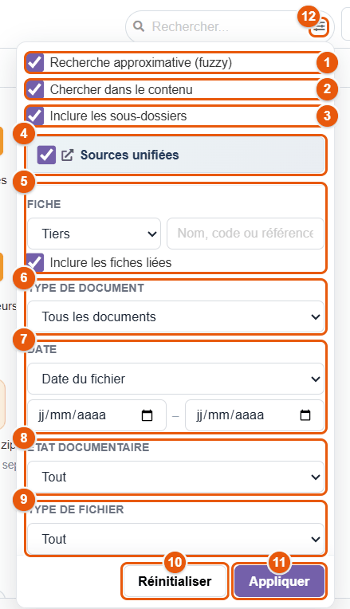
Trouver sans mot-clé : les filtres
Les filtres suffisent : un mot-clé n'est pas nécessaire. Choisissez-les, puis cliquez sur Appliquer. Un mot-clé saisi en plus restreint le résultat.
| Filtre | Ce qu'il donne |
|---|---|
| Fiche | Choisissez le type de fiche (tiers, projet, contact, proposition commerciale, commande, facture, produit, lot, ticket, ordre de fabrication, expédition… : seuls les types dont le module est activé et que vous pouvez lire sont proposés), tapez au moins deux caractères (nom, code ou référence) et choisissez la fiche dans la liste. Seules les fiches que vous pouvez ouvrir sont proposées. Résultat : les documents de la fiche et les dossiers de la GED créés pour elle par les modèles d'arborescence ; pour un tiers ou un projet, en plus, les documents de toutes ses pièces (devis, commandes, factures, contrats, expéditions, interventions, pièces fournisseurs, projets du tiers…). Avec Inclure les fiches liées (coché par défaut) : aussi les documents des fiches que Dolibarr lie à celle-ci (bloc « Objets liés » de sa fiche), dans les deux sens et sur un niveau — une commande apporte son devis, ses factures et ses expéditions. Une fiche liée que vous ne pouvez pas ouvrir est ignorée. |
| Type de document | Une pièce Dolibarr (Factures clients, Propositions commerciales, Commandes…) ou un dossier type défini dans les modèles d'arborescence — par exemple « CGV signées », chez tous les clients. |
| Date | Date de la pièce : la date du devis, de la facture… dans Dolibarr (pour un document de la GED, la date du fichier). Date du fichier : sa date de modification. |
| État documentaire | Les documents dans cet état (voir les badges au chapitre Vues et aperçu). |
| Type de fichier | Les fichiers de cette famille. |
Les filtres se combinent : un client en Fiche, Factures clients en Type de document et une période en Date de la pièce donnent les factures de ce client sur la période. Sans fiche ni type de document, les filtres parcourent le dossier affiché (et ses sous-dossiers si l'option est cochée), ou toutes les sources si Sources unifiées est cochée.
Exemple : tous les documents d'un client
- Ouvrez les options de recherche.
- Dans Fiche, laissez Tiers et tapez le début du nom du client.
- Choisissez le client dans la liste.
- Cliquez sur Appliquer.
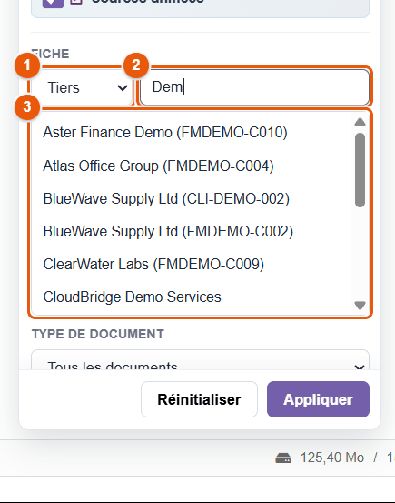
Lire les résultats
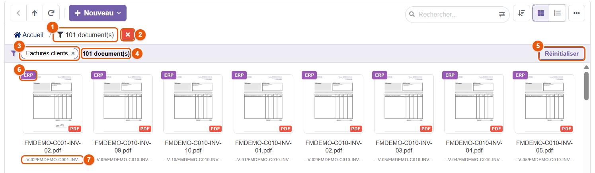
- Le fil d'Ariane indique que vous regardez un résultat de recherche, et son nombre de documents.
- La croix rouge quitte la recherche et réaffiche le dossier.
- Chaque filtre actif est une pastille : sa croix le retire.
- Le nombre de documents trouvés.
- Réinitialiser : efface tous les filtres.
- La source de chaque document (ERP, GED, stockage connecté).
- Son chemin ; l'action Aller au dossier parent ouvre son dossier.
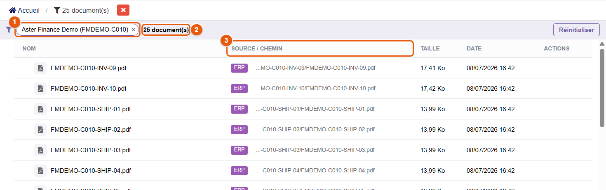
Les résultats sont triés du plus récent au plus ancien selon la date choisie et arrivent par pages de 100.
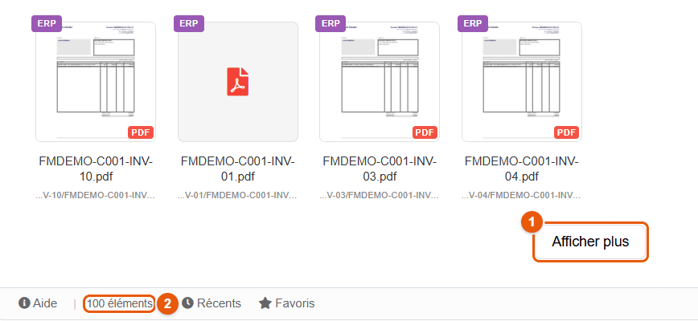
Quand un parcours est trop long, ou qu'un stockage connecté est trop lent, la barre des résultats le dit : « Recherche arrêtée avant la fin (trop d'éléments à parcourir) : affinez les filtres pour tout voir », ou « Non parcouru en entier (source lente) » suivi du nom de la source. Affinez alors les filtres.
Chercher dans le contenu des documents
Cochée, l'option Chercher dans le contenu retrouve un document par une phrase qu'il contient. Les fichiers texte (txt, csv, md, json, xml, html, code) sont lus directement. Les PDF et les documents bureautiques (Word, Excel, PowerPoint, OpenDocument) sont cherchés dans un index : leur texte est extrait une fois, à l'avance, par une tâche planifiée.
- La recherche trouve les documents qui contiennent tous les mots saisis, sans tenir compte des accents ni des majuscules.
- Un extrait du passage trouvé s'affiche sous le nom du document.
- Si des fichiers du périmètre ne sont pas encore indexés, la barre des résultats l'indique (« … fichier(s) de ce périmètre pas encore indexé(s) »).
- Si l'administrateur n'a pas activé l'indexation, seul le contenu des fichiers texte est cherché, et c'est signalé.
L'indexation du contenu s'active dans (chapitre Explorateur). Les fichiers chiffrés ne sont pas indexés.
Quand un document devient-il trouvable ?
| Ce qui est cherché | Disponible |
|---|---|
| Le nom du fichier ou du dossier | Immédiatement, dans toutes les sources (GED, documents ERP, stockages connectés). |
| Le contenu d'un fichier texte (txt, csv, md, json, xml, html, code) | Immédiatement : le fichier est lu au moment de la recherche. |
| Le contenu d'un PDF ou d'un document Office envoyé dans FileManager | Dès l'envoi : le fichier est indexé au moment où il arrive. |
| Le contenu des documents déjà présents, ou déposés autrement (génération par Dolibarr, synchronisation) | Après le passage de la tâche planifiée quotidienne « Réindexation du contenu », ou après Réindexer maintenant par l'administrateur. |
| Un document scanné (une image dans un PDF) | Jamais par son contenu tant qu'il n'a pas de texte : passez-le à l'OCR dans l'éditeur PDF (chapitre Les outils PDF), il devient cherchable. |
| Un fichier chiffré, ou plus gros que la limite fixée par l'administrateur (10 Mo par défaut) | Par son nom seulement. |
| Le contenu des fichiers d'un stockage connecté (Nextcloud, Google Drive, SMB…) | Par leur nom seulement : l'index couvre la GED et les documents ERP. |
Depuis la recherche de Dolibarr
Le champ Rechercher en haut du menu de gauche de Dolibarr propose, sous les tiers, factures et autres fiches, l'entrée Fichiers (GED). Tapez le mot, choisissez cette entrée : l'explorateur s'ouvre avec la recherche déjà lancée sur ce mot.
Ouvrir dans la GED depuis une fiche
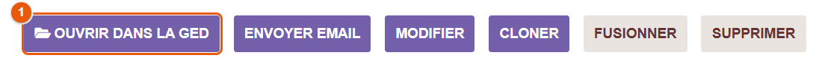
Sur les fiches de Dolibarr (tiers, projet, commande, facture, produit, ticket, ordre de fabrication…), le bouton Ouvrir dans la GED ouvre l'explorateur directement sur les documents de la fiche et de ses fiches liées : le filtre Fiche est déjà appliqué.
Les documents manquants
Quand l'administrateur a défini des documents attendus dans les modèles d'arborescence (par exemple « Kbis » et « Attestation d'assurance » pour chaque fournisseur), FileManager repère ceux qui manquent. La barre d'état affiche alors un bouton Manquants (n) : il ouvre la liste des documents manquants des fiches que vous pouvez ouvrir.
| Colonne | Contenu |
|---|---|
| Fiche | La fiche concernée (un tiers, un projet, ou toute fiche dont l'arborescence attend des documents) ; Ouvrir la fiche ouvre sa fiche Dolibarr. |
| Document | Le document attendu, Obligatoire ou Recommandé. |
| Dossier | Le dossier de la GED où il est attendu. |
| Depuis | Depuis quand il manque. |
| Relances | Le nombre de relances déjà envoyées. |
Le champ Fiche ou document… filtre la liste, et Document attendu la limite à un type de document. Le bouton Déposer ouvre le dossier attendu pour y envoyer le document : une fois déposé, il ne compte plus comme manquant. Lorsqu'une recherche porte sur une fiche, ses documents manquants s'affichent au-dessus des résultats.
Recettes de recherche
| Je cherche… | Comment |
|---|---|
| Un contrat dont je connais une clause | Tapez quelques mots de la clause, cochez Chercher dans le contenu et Sources unifiées, Entrée. L'extrait affiché montre le passage. |
| Tout le dossier d'une commande (devis, factures, expéditions) | Fiche : Commande, puis la commande ; Inclure les fiches liées coché ; Appliquer. Ou, depuis la fiche de la commande : Ouvrir dans la GED. |
| Toutes les factures d'un client sur un trimestre | Fiche : le client ; Type de document : Factures clients ; Date de la pièce : du premier au dernier jour du trimestre ; Appliquer. |
| Les documents envoyés en signature et pas encore signés | État documentaire : Workflow de signature, avec Sources unifiées. |
| Les documents dont la validité arrive à échéance | État documentaire : Alerte de validité ; ou la liste du menu Validité (chapitre Documents à validité). |
| Ce qui a été modifié la semaine dernière dans un dossier de chantier | Ouvrez le dossier, Inclure les sous-dossiers, Date du fichier sur la semaine. |
| Les photos d'un chantier | Ouvrez le dossier du chantier, Type de fichier : Images, Inclure les sous-dossiers ; puis Galerie d'images pour les faire défiler. |
| Un fichier dont j'ai mal orthographié le nom | Cochez Recherche approximative : les lettres tapées sont cherchées dans l'ordre, même séparées, et un nom très proche est accepté. « facure » ou « cntrat » retrouvent « facture » et « contrat ». |
| Les pièces qui manquent au dossier d'un fournisseur | Bouton Manquants de la barre d'état, filtré sur le fournisseur. |
11 Télécharger et envoyer par e-mail
Un document se télécharge en un clic, seul ou avec d'autres dans une archive ZIP. Pour l'envoyer à quelqu'un, Envoyer par e-mail prépare un e-mail Dolibarr avec les fichiers déjà joints : pas besoin de les télécharger puis de les rejoindre à la main.
Télécharger un fichier
Plusieurs chemins mènent au même téléchargement :
- le menu contextuel du fichier (clic droit), entrée Télécharger ;
- la barre d'actions qui apparaît quand un fichier est sélectionné ;
- le bouton Télécharger du panneau d'aperçu et de l'aperçu plein écran ;
- dans la vue liste, la flèche qui apparaît au survol de la ligne.
Le fichier arrive dans le dossier de téléchargement de votre navigateur, sous son nom. Quelques cas particuliers :
- un fichier chiffré par FileManager se télécharge en clair, sous son vrai nom, si vous avez le droit de l'ouvrir (chapitre Sécurité et accès) ;
- un fichier d'un stockage connecté (Nextcloud, S3, partage réseau…) est lu à la volée sur ce stockage ;
- si l'administrateur a activé le journal des consultations, le téléchargement est inscrit dans l'historique (chapitre Maintenance).
Télécharger plusieurs fichiers ou un dossier (ZIP)
- Sélectionnez les fichiers et dossiers voulus (Ctrl + clic, ou cases à cocher en vue liste), ou un seul dossier.
- Choisissez Télécharger en ZIP dans la barre d'actions ou le menu contextuel.
- FileManager prépare l'archive : les dossiers y gardent leur arborescence. Seuls les fichiers que vous avez le droit de télécharger y entrent ; si aucun ne l'est, le message « Aucun fichier à télécharger » s'affiche.
L'administrateur peut donner à une personne le droit de lire un document sans celui de le télécharger (règles de permission, chapitre Permissions et demandes d'accès). Elle le consulte alors à l'écran (aperçu, visionneuse), mais les boutons de téléchargement, l'envoi par e-mail et le ZIP lui sont refusés : « Vous n'avez pas la permission de télécharger ce fichier ».
Envoyer par e-mail
- Sélectionnez un ou plusieurs fichiers, jusqu'à 100, dans l'explorateur, les résultats d'une recherche, la banette d'une fiche ou le tableau de ses documents.
- Choisissez Envoyer par e-mail dans le menu contextuel ou la barre d'actions.
- FileManager vérifie chaque élément :
- les dossiers et les raccourcis ne s'envoient pas : ils sont laissés de côté, et un message le dit (« 2 élément(s) laissé(s) de côté : les dossiers et les raccourcis ne s'envoient pas ») ; pour envoyer un dossier, téléchargez-le en ZIP ou partagez-le ;
- vous devez avoir le droit de télécharger chaque fichier ;
- le poids total ne doit pas dépasser le plafond fixé par l'administrateur (20 Mo par défaut, la limite courante des messageries). Au-delà, l'envoi est refusé avant même d'ouvrir le message : retirez des fichiers, ou envoyez un lien de partage (voir plus bas).
- Le formulaire d'e-mail de Dolibarr s'ouvre, les fichiers déjà joints. Complétez-le, puis cliquez sur Envoyer email.
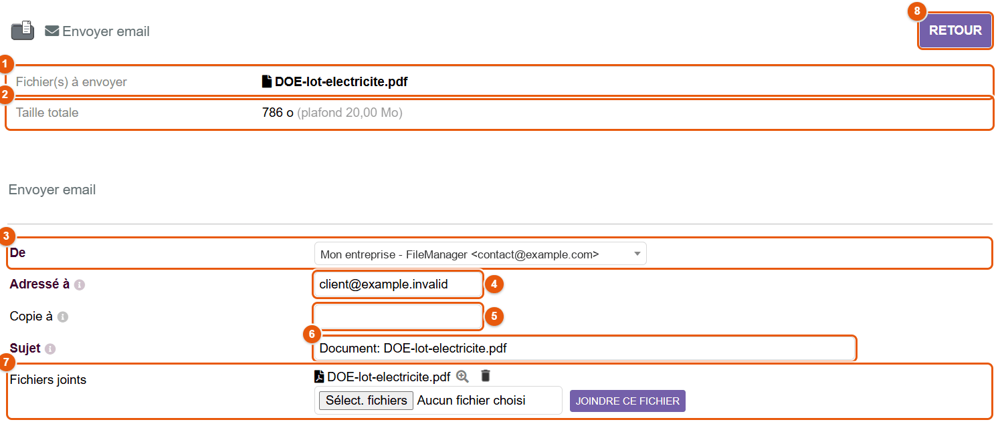
- Fichier(s) à envoyer.
- Taille totale et plafond autorisé.
- De : l'expéditeur, choisi parmi les adresses autorisées par Dolibarr (la vôtre, celle de la société…).
- Adressé à : un ou plusieurs destinataires, séparés par des virgules.
- Copie à.
- Sujet, proposé d'après le nom du fichier : modifiez-le librement.
- Fichiers joints : la loupe prévisualise, la corbeille retire un fichier ; Joindre ce fichier ajoute un fichier de votre poste.
- Retour : revient à l'explorateur sans envoyer.
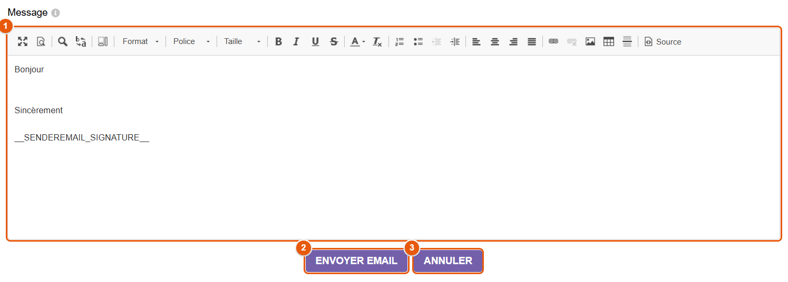
- Message : éditeur de texte riche (mise en forme, liens, images, tableaux). Le modèle d'e-mail choisi par l'administrateur pré-remplit le texte ; votre signature Dolibarr y est insérée à l'envoi.
- Envoyer email.
- Annuler.
Ce que reçoit le destinataire
- Chaque fichier est joint sous son nom ; deux fichiers de même nom venant de dossiers différents sont renommés (« Devis.pdf », « Devis (2).pdf ») pour ne pas s'écraser.
- Un fichier chiffré est joint en clair, sous son vrai nom : le destinataire n'a besoin d'aucun outil.
- Un fichier d'un stockage connecté est d'abord copié sur le serveur Dolibarr pour être joint ; cette copie temporaire est effacée après l'envoi, et au plus tard après 48 heures. Un document Google est joint au format Office.
Depuis une fiche Dolibarr
Depuis la banette ou le tableau des documents d'une fiche, le formulaire s'ouvre dans une fenêtre séparée pour ne pas quitter la fiche. Si le module CommunicationHub est installé, sa fenêtre de rédaction s'ouvre à la place, avec les mêmes fichiers joints.
Au-delà du plafond, plutôt que de joindre les fichiers, créez un lien de partage (chapitre Partager) et envoyez le lien : le destinataire télécharge le document quand il veut, le lien peut expirer, être protégé par un mot de passe, et vous savez s'il a été ouvert.
Le plafond se règle dans , réglage Poids maximal des pièces jointes d'un e-mail (Mo) : de 1 à 100 Mo, ou 0 pour ne pas en mettre. Vérifiez la limite de votre serveur de messagerie avant de le relever : un e-mail refusé par le serveur ne l'est qu'après l'envoi.
Travailler les documents
Éditeurs PDF, images et Office, versions, documents à validité, signatures, modèles et publipostage, bundles PDF, documents des fiches Dolibarr, fabrication et traçabilité.
- 12L'éditeur PDF
- 13Les outils PDF
- 14L'éditeur d'images
- 15Documents Office : aperçu et édition en ligne
- 16Versions des documents
- 17Documents à validité
- 18Signatures électroniques
- 19Publipostage : l'assistant pas à pas
- 20Écrire un modèle de publipostage
- 21Champs, formules et données Dolibarr
- 22Publipostage : exemples pas à pas
- 23Bundles PDF
- 24La banette sur la fiche d'un objet
- 25Les documents d'une fiche Dolibarr
- 26La visionneuse automatique des listes
- 27Fabrication, lots et dossier de traçabilité
12 L'éditeur PDF
L'éditeur PDF travaille un PDF directement dans le navigateur : annoter, ajouter du texte et des images, signer, masquer une information, réorganiser les pages, fusionner, compresser, protéger. Il s'ouvre dans une nouvelle fenêtre ; l'explorateur reste ouvert derrière.
Ouvrir un PDF dans l'éditeur
- Clic droit sur un PDF, puis Éditer le PDF.
- L'éditeur s'ouvre dans une nouvelle fenêtre du navigateur, sur la première page. Si rien ne s'ouvre, autorisez les fenêtres surgissantes (pop-up) pour l'adresse de Dolibarr.
Les documents Word, Excel et images peuvent aussi y être ouverts : ils sont d'abord convertis en PDF (la conversion des documents Office demande Stirling PDF, configuré par l'administrateur).
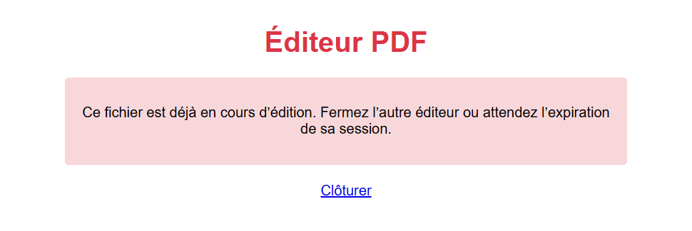
Un document ne peut être modifié que par une personne à la fois. S'il est déjà ouvert dans un éditeur (par un collègue, ou par vous dans une autre fenêtre), l'éditeur l'indique : fermez l'autre éditeur ou attendez l'expiration de sa session. Pendant l'édition, le badge « En cours d'édition par un autre utilisateur » s'affiche sur le document pour les autres.
L'écran de l'éditeur
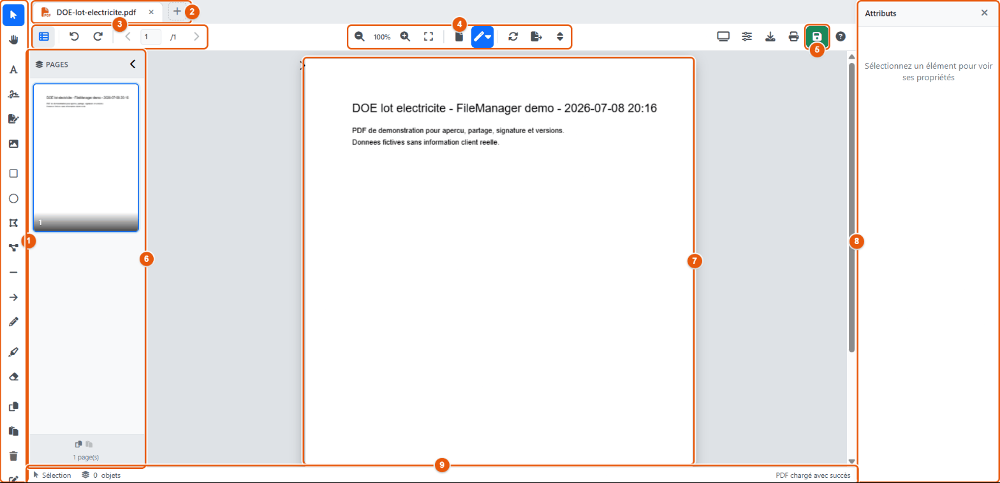
- La barre d'outils : sélection, texte, signature, formes, surligneur, masquage…
- Les onglets : un par document ouvert ; + en ouvre un autre (pour fusionner, ou déplacer des pages de l'un à l'autre).
- Afficher/Masquer les pages, Annuler, Refaire, page précédente / suivante et numéro de page.
- Zoom, Ajuster à la page, Mode d'affichage, Outils avancés, Rotation, Extraire, Réorganiser.
- Enregistrer (Ctrl+S). À sa gauche : Présentation (F5), Attributs, Télécharger sur l'ordinateur, Impression (Ctrl+P) ; à sa droite, Aide contextuelle (F1).
- Les pages en miniatures : un clic va à la page.
- La page affichée : c'est ici que l'on dessine, écrit et place les éléments.
- Attributs : les propriétés de l'élément sélectionné (position, taille, couleurs, police…).
- La barre d'état : outil actif, nombre d'objets ajoutés, état du document.
Les outils
| Outil (raccourci) | Usage |
|---|---|
| Sélection (V) | Sélectionner, déplacer et redimensionner les éléments ajoutés. |
| Main (H) | Faire glisser la page pour se déplacer. |
| Texte (T) | Ajouter un texte : police, taille, gras, italique, souligné, couleur. |
| Signature (S) | Apposer votre signature : la dessiner, la taper (texte manuscrit), importer une image ou la reprendre de votre bibliothèque de signatures. |
| Demander une signature | Envoyer ce document à signer à quelqu'un (chapitre Signatures). |
| Image (I) | Insérer une image PNG ou JPG (logo, tampon, plan). |
| Rectangle (R), Cercle (C), Polygone (P), Polyligne (L), Ligne, Flèche (A) | Formes : contour, remplissage, épaisseur, couleur. |
| Dessin libre (D) | Tracer à main levée. |
| Surligner (G) | Surlignage semi-transparent. |
| Masquer (M) | Couvrir une zone d'un rectangle opaque (caviardage) : une information sensible n'apparaît plus. |
| Copier (Ctrl+C), Coller (Ctrl+V), Supprimer (Suppr) | Sur les éléments ajoutés. |
| Mode Formulaire (F) | Remplir les champs d'un formulaire PDF (voir Remplir un formulaire PDF). |
Pour qu'une information masquée ne puisse plus être lue ni copiée, aplatissez le document avant de l'enregistrer () : les éléments ajoutés sont alors fondus dans la page. Gardez une version de l'original si vous en avez besoin.
Travailler les pages
Le panneau Pages montre les miniatures. Sélectionnez une ou plusieurs pages (Ctrl+clic) pour les faire pivoter, les supprimer, les copier ou les extraire dans un nouveau document. Réorganiser affiche toutes les pages pour les remettre dans l'ordre par glisser-déposer. Avec plusieurs documents ouverts en onglets, une page se fait glisser d'un document à l'autre.
Remplir un formulaire PDF
Beaucoup de PDF reçus sont des formulaires : fiche d'ouverture de compte, demande d'agrément, déclaration administrative, bon d'intervention. Leurs zones à remplir sont de vrais champs (on parle de formulaire « AcroForm »). L'éditeur les reconnaît à l'ouverture du document : un message indique « Formulaire détecté: 8 champs » et le bouton Mode formulaire apparaît dans la barre d'outils de gauche, avec le nombre de champs dans son info-bulle.
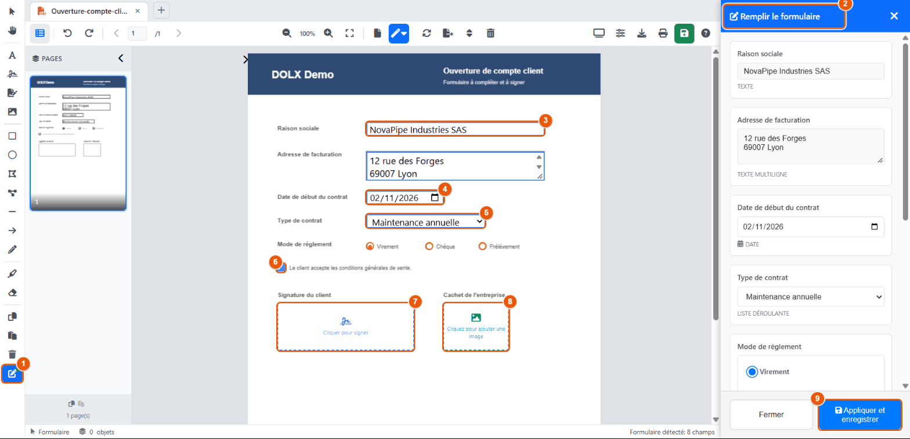
- Le bouton Mode formulaire (ou la touche F) ouvre l'assistant de remplissage. Il n'apparaît que si le document contient des champs.
- Le panneau Remplir le formulaire liste tous les champs du document, dans l'ordre, chacun avec la saisie adaptée à son type et le type indiqué en dessous (Texte, Texte multiligne, Date, Liste déroulante…). Le libellé est le nom alternatif que l'auteur du formulaire a donné au champ (son info-bulle, définie dans les propriétés du champ) : « Date de début du contrat ». Un champ sans nom alternatif montre son nom technique rendu lisible : « Raison_sociale » devient « Raison sociale », « AccepteCGV » devient « Accepte CGV ».
- Les champs sont aussi posés sur la page, à leur place exacte : on peut saisir dans le panneau ou directement sur le document, les deux restent synchronisés.
- Un champ reconnu comme une date (son nom contient « date », « jour », « mois », « fin », « naissance »…) reçoit un calendrier, prérempli avec la date déjà écrite dans le PDF. La date choisie est écrite au format de votre langue, jour et mois sur deux chiffres (02/11/2026 en français). Si le champ contient un texte qui n'est pas une date (« à définir »), il reste un champ texte : rien n'est effacé.
- Les listes déroulantes et les boutons radio proposent les choix prévus par l'auteur du formulaire.
- Les cases à cocher.
- Un champ signature (nom contenant « signature », « visa », « paraphe », ou grande zone rectangulaire) affiche Cliquer pour signer : la fenêtre de signature s'ouvre ; dessinez votre signature, importez-en l'image ou tapez votre nom, et elle se place à l'échelle dans le cadre.
- Un champ image (nom contenant « logo », « photo », « cachet », « tampon »…) affiche Cliquez pour ajouter une image : choisissez l'image dans la GED (le logo, le scan du cachet de l'entreprise) ; elle s'ajuste au cadre.
- Appliquer et enregistrer écrit les valeurs dans les champs du PDF et enregistre aussitôt le document (une version de l'état précédent est conservée quand les versions sont actives). Fermer (ou la croix de l'en-tête) referme le panneau sans rien écrire. Pendant que le panneau est ouvert, la page se resserre pour laisser visibles tous les boutons de la barre d'outils.
Si vous concevez vous-même vos formulaires (avec LibreOffice ou Acrobat, par exemple), donnez à chaque champ, dans ses propriétés, une info-bulle claire : c'est elle qui sert de libellé. Exportez en PDF en conservant les champs de formulaire. Et choisissez des noms techniques parlants : un nom qui contient « date », « signature » ou « cachet » donne au champ un calendrier, une zone de signature ou une zone d'image.
Le document enregistré reste un formulaire : ses champs gardent leurs valeurs et peuvent encore être modifiés, par vous ou par votre correspondant dans n'importe quel lecteur PDF. Signatures et images sont, elles, incrustées dans la page.
Pour figer définitivement un formulaire avant de l'envoyer (plus personne ne peut changer une valeur), utilisez sur une copie (chapitre Les outils PDF).
Un formulaire scanné ou imprimé puis numérisé n'a pas de champs : le bouton Mode formulaire n'apparaît pas. Remplissez-le avec l'outil Texte (T) et signez avec l'outil Signature (S).
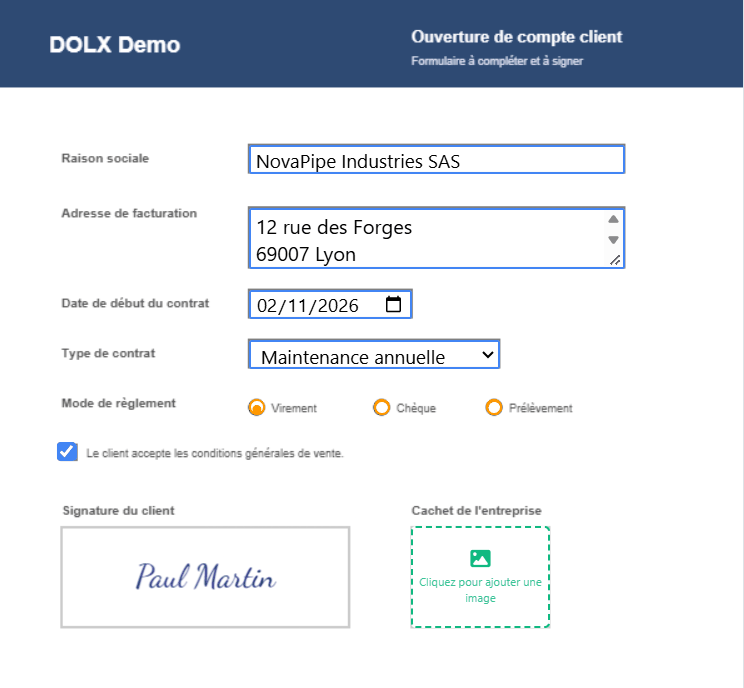
Les outils avancés
Le bouton Outils avancés (baguette magique) réunit le filigrane, le tampon, les propriétés du document (métadonnées), l'aplatissement, la fusion et la division, la compression, l'OCR, la réparation, le mot de passe, les permissions et la signature avec certificat. Ils sont décrits un par un au chapitre Les outils PDF.
Enregistrer
Enregistrer (Ctrl+S) remplace le fichier à son emplacement. Si les versions sont activées, FileManager conserve d'abord l'état précédent comme version (« Version automatique avant modification dans l'éditeur ») : vous pouvez revenir en arrière (chapitre Versions). Un document issu d'une fusion ou d'une division vous demande un dossier et un nom.
Télécharger sur l'ordinateur récupère le document modifié sans toucher au fichier de FileManager. Fermer la fenêtre sans enregistrer abandonne les modifications ; le navigateur demande confirmation s'il en reste.
Les outils PDF depuis l'explorateur
Sans ouvrir l'éditeur, le sous-menu Outils PDF du menu contextuel compresse, répare, divise ou fusionne des PDF, et Convertir en PDF transforme un document Office ou une image : voir le chapitre Les outils PDF.
13 Les outils PDF
Compresser un scan trop lourd, réparer un PDF qui ne s'ouvre plus, assembler le devis, le bon de commande et la facture en un seul dossier, rendre un scan cherchable, poser un filigrane ou un tampon « PAYÉ », protéger un document par mot de passe, le signer avec un certificat : FileManager fait tout cela sans logiciel installé sur le poste. Ce chapitre décrit chaque outil, où le trouver et ce qu'il produit.
Deux façons d'y accéder
| Depuis | Ce qu'on y trouve |
|---|---|
| Le menu contextuel d'un PDF (explorateur, banette, fichiers joints d'une fiche) | Sous-menu Outils PDF : Compresser le PDF, Réparer le PDF, Diviser le PDF, Fusionner PDF. Le traitement s'exécute sur le serveur, sans ouvrir le document. Sur un document Office ou une image, l'entrée Convertir en PDF. |
| Le menu Outils avancés (baguette magique) de l'éditeur PDF | Filigrane, tampon, métadonnées, aplatissement, fusion et division, compression, OCR, réparation, mot de passe, permissions, signature avec certificat. Le résultat s'affiche dans l'éditeur ; il ne remplace le fichier qu'au moment où vous cliquez sur Enregistrer. |
Les outils qui modifient un fichier demandent le droit d'écriture sur ce fichier ; un utilisateur en lecture seule ne les voit pas.
Les moteurs : Stirling PDF et Ghostscript
Les traitements lourds sont confiés à un moteur installé sur le serveur, choisi par l'administrateur (, chapitre Office & PDF) :
- Stirling PDF, un service PDF complet. Quand il est configuré et joignable, il est utilisé en priorité.
- Ghostscript, un programme présent sur la plupart des serveurs Linux, utilisé en secours quand Stirling PDF n'est pas disponible.
| Outil | Avec Stirling PDF | Avec Ghostscript seul |
|---|---|---|
| Compresser, Réparer, Diviser, Fusionner (menu contextuel) | Oui | Oui |
| Convertir en PDF (Office, texte, HTML, images) | Oui | Non |
| Éditeur : Filigrane, Tampon, Métadonnées, Aplatir, Fusionner, Diviser, pages | Toujours disponibles : ils travaillent dans le navigateur. | |
| Éditeur : Compresser, OCR, Réparer | Oui | Absents du menu |
| Éditeur : Mot de passe, Permissions, Signer (P12) | Oui | Absents du menu |
Sans aucun moteur, les outils du menu contextuel répondent « Aucun moteur PDF n'est disponible » : adressez-vous à l'administrateur.
Compresser un PDF
- Clic droit sur le PDF, .
- Confirmez : « Voulez-vous compresser le fichier … ? Le fichier original sera remplacé. »
- Un message indique le gain obtenu, par exemple « PDF compressé avec succès (62 % économisé) ».
La compression ré-échantillonne les images du document à une résolution adaptée à l'écran et à l'impression bureautique (niveau moyen). Elle fait merveille sur les scans et les PDF chargés de photos ; sur un PDF fait de texte, le gain est faible.
La compression et la réparation écrivent le résultat à la place du fichier d'origine. Sur un plan, une photo de chantier ou un document destiné à l'imprimeur, gardez d'abord une copie (Copier, ou un téléchargement) : la perte de finesse des images ne se rattrape pas.
Réparer un PDF
reconstruit la structure d'un PDF abîmé : téléchargement interrompu, fichier produit par un vieux scanner, PDF que l'aperçu refuse d'afficher. Le fichier réparé remplace l'original. Si la réparation échoue, le fichier est trop endommagé : demandez une nouvelle copie à son émetteur.
Diviser un PDF
crée un fichier par page, à côté de l'original, qui reste intact. Les fichiers sont numérotés d'après le nom d'origine : releve_part1.pdf, releve_part2.pdf… (releve_page1.pdf… quand le traitement passe par Ghostscript). Pour ne garder que certaines pages, ou couper en plusieurs blocs, utilisez plutôt l'éditeur (Diviser dans l'éditeur).
Fusionner des PDF
La fusion assemble plusieurs PDF en un seul, dans l'ordre de votre choix. Depuis la banette d'une fiche, elle propose aussi les PDF des fiches liées : c'est la façon la plus rapide de constituer le dossier complet d'une affaire (devis signé, bon de commande, bon de livraison, facture).
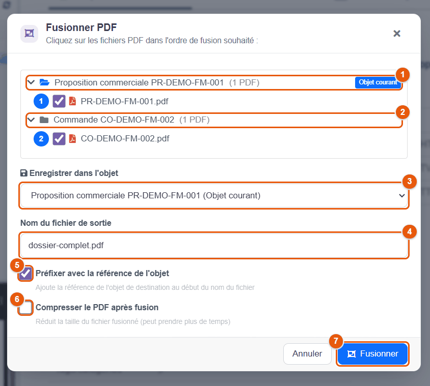
- Les PDF de la fiche courante (badge Objet courant). Le fichier sur lequel vous avez fait le clic droit est déjà coché et porte le numéro 1.
- Les PDF d'une fiche liée, groupés par fiche ; cliquez sur l'en-tête pour déplier le groupe. Chaque fichier coché reçoit le numéro suivant : l'ordre des numéros est l'ordre des pages dans le PDF fusionné. Décocher un fichier renumérote les autres.
- Enregistrer dans l'objet : la fiche qui recevra le PDF fusionné, la fiche courante ou l'une des fiches liées.
- Nom du fichier de sortie (« merged.pdf » par défaut) ; l'extension .pdf est ajoutée si vous l'oubliez.
- Préfixer avec la référence de l'objet : le nom commence par la référence de la fiche de destination, par exemple
PR-DEMO-FM-001_dossier-complet.pdf. - Compresser le PDF après fusion : réduit le poids du résultat (utile avant un envoi par e-mail). Votre choix est retenu pour la fois suivante.
- Fusionner crée le fichier ; Annuler referme la fenêtre sans rien créer.
- Il faut au moins deux PDF cochés.
- Les fichiers d'origine ne sont pas modifiés.
- Si un fichier porte déjà le nom choisi, le nouveau reçoit un suffixe :
dossier-complet_1.pdf. - Dans l'explorateur, la fenêtre liste les PDF du dossier : les fichiers sélectionnés avant le clic droit sont proposés en tête, dans l'ordre de votre sélection, et le PDF fusionné est créé dans le dossier courant.
Convertir en PDF
Sur un document Word, Excel, PowerPoint, OpenDocument, RTF, texte, HTML, ou sur une image, Convertir en PDF produit sa version PDF (Stirling PDF requis) :
- dans l'explorateur, le PDF est créé à côté du document, sous le même nom avec l'extension .pdf, et sélectionné ; le document d'origine reste intact. Si un PDF de ce nom existe déjà, la conversion s'arrête (« Un fichier PDF portant ce nom existe déjà ») : renommez l'un des deux ;
- depuis la banette ou une fiche, le PDF converti s'ouvre dans l'éditeur PDF ; Enregistrer vous demande alors le dossier et le nom du PDF, sans toucher au document d'origine.
Les outils avancés de l'éditeur
Dans l'éditeur PDF, le bouton Outils avancés (baguette magique) ouvre un menu en colonnes :
- Édition : Filigrane, Tampon, Métadonnées, Aplatir.
- Multi-PDF : Fusionner, Diviser.
- Signature : Demander une signature (chapitre Signatures).
- Traitement : Compresser, OCR, Réparer.
- Sécurité : Mot de passe, Permissions, Signer (P12).
Les colonnes Traitement et Sécurité n'apparaissent que si Stirling PDF est configuré. Tout ce que font ces outils reste dans l'éditeur jusqu'à Enregistrer ; fermer l'éditeur sans enregistrer abandonne le résultat.
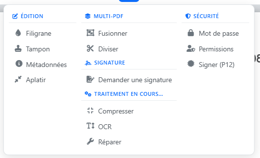
Filigrane
Un filigrane est un texte ou une image posé en transparence sur les pages : « CONFIDENTIEL », « COPIE », le logo de l'entreprise.
| Réglage | Effet |
|---|---|
| Type de filigrane | Texte ou Image (un fichier de votre poste). |
| Texte, Taille, Rotation, Couleur | Pour un texte : taille 12 à 200 (48 par défaut), rotation de −180° à 180° (−45° par défaut, une diagonale montante), couleur (gris clair par défaut). |
| Opacité % | De 5 à 100 % (30 % par défaut) : plus elle est basse, plus le texte du document reste lisible. |
| Position | Centre, Répéter (mosaïque) sur toute la page, ou l'un des quatre coins. |
| Appliquer sur | Toutes les pages, la page actuelle, la première page, les pages impaires ou paires. |
Appliquer pose le filigrane ; enregistrez ensuite le document.
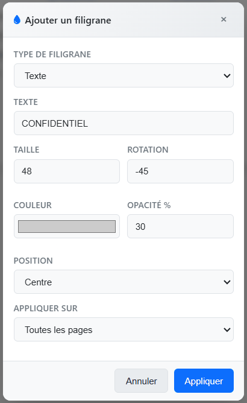
Tampon
Le tampon imite un cachet encré, incliné, dans un cadre : ✓ APPROUVÉ, ✗ REJETÉ, BROUILLON, CONFIDENTIEL, COPIE, ORIGINAL, PAYÉ, REÇU, ou un texte personnalisé.
- ouvre la fenêtre Ajouter un tampon.
- Choisissez le Type de tampon, sa Couleur (rouge par défaut), sa Taille (80 par défaut) et s'il doit Inclure la date du jour.
- Ajouter le pose sur la page affichée : faites-le glisser à sa place avec l'outil Sélection, puis enregistrez.
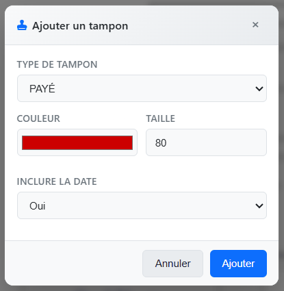
Une facture fournisseur réglée : ouvrez-la dans l'éditeur, , type PAYÉ, date Oui, placez le tampon en haut à droite, Enregistrer. La version précédente reste disponible dans les versions du fichier.
Métadonnées
Les propriétés du document, ou métadonnées, sont les informations cachées du fichier, que montrent les propriétés du PDF et les moteurs de recherche : Titre, Auteur, Sujet, Mots-clés, Créateur (« FileManager Dolibarr » par défaut). La fenêtre affiche aussi la date de dernière modification. Vérifiez-les avant de publier un document à l'extérieur : un ancien titre ou le nom d'un collaborateur y traîne souvent.
Aplatir
Aplatir fond définitivement dans la page tout ce qui a été ajouté (textes, formes, masquages, tampons, champs remplis). Chaque page est redessinée sous forme d'image : plus personne ne peut déplacer un élément ni lire ce qu'un masquage recouvre. En contrepartie, le texte de la page n'est plus sélectionnable ni cherchable, et le fichier grossit. Aplatissez une copie destinée à l'extérieur, pas votre document de travail ; si besoin, rendez-la cherchable ensuite avec l'OCR.
Fusionner dans l'éditeur
La fusion de l'éditeur assemble le document affiché avec :
- les autres documents ouverts en onglets dans l'éditeur (cochez-les) ;
- des fichiers externes, choisis sur votre poste.
Position place les pages ajoutées après ou avant le document actuel. Cochez Créer dans un nouvel onglet pour obtenir le résultat dans un onglet à part, sans toucher au document actuel ; il vous sera demandé un dossier et un nom à l'enregistrement.
Diviser dans l'éditeur
| Mode de division | Résultat |
|---|---|
| Extraire des pages | Un PDF fait des pages indiquées : 1,3-5. |
| Par plage de pages | Un PDF de la page De la page à la page À la page. |
| Chaque page séparément | Un PDF par page. |
Avec Ouvrir dans un nouvel onglet coché, le résultat s'ouvre dans l'éditeur, prêt à être enregistré dans la GED ; décoché, il est téléchargé directement sur votre poste. Le document d'origine n'est pas modifié.
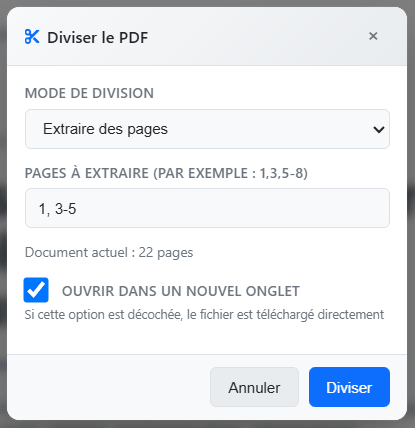
Travailler les pages
| Bouton | Effet |
|---|---|
| Rotation | Fait pivoter de 90°, 180° ou 270° la page actuelle, toutes les pages, une plage (1-3, 5, 7-9), les pages impaires ou paires. Pratique pour un scan dont une page est à l'envers. |
| Extraire | Télécharge sur votre poste un nouveau PDF fait de la page actuelle ou d'une plage, sous le nom que vous indiquez. |
| Supprimer des pages | Retire la page actuelle ou une plage du document. Dans le panneau Pages, vous pouvez aussi sélectionner des miniatures (Ctrl+clic, Ctrl+A pour toutes) et appuyer sur Suppr. Une fois le document enregistré, seules les versions permettent de retrouver les pages retirées. |
| Réorganiser | Affiche toutes les pages en miniatures ; faites-les glisser dans l'ordre voulu, puis Appliquer. |
Le panneau Pages copie aussi des pages d'un document à l'autre : sélectionnez les miniatures, Ctrl+C, passez à l'onglet de l'autre document, sélectionnez une page puis Ctrl+V (collées après) ou Ctrl+Maj+V (collées avant).
Compresser, OCR, Réparer
- Compresser et Réparer font le même travail que dans le menu contextuel, mais sur le document affiché : rien n'est écrit tant que vous n'enregistrez pas.
- OCR (reconnaissance de caractères) lit le texte des pages scannées et l'ajoute, invisible, sous l'image : le texte devient sélectionnable, copiable et trouvable par la recherche dans le contenu (chapitre Rechercher et retrouver). Choisissez la langue du document : français, anglais, espagnol, allemand, italien, arabe, ou les mélanges français + anglais et français + arabe. La bonne langue améliore nettement la reconnaissance des accents.
Mot de passe
Mot de passe chiffre le PDF (AES-256) : il faudra le mot de passe pour l'ouvrir. Saisissez-le deux fois, puis Protéger. Transmettez le mot de passe par un autre canal que le document (par téléphone plutôt que dans le même e-mail).
Un PDF protégé par mot de passe ne peut plus être lu par l'aperçu, les miniatures ni la recherche de FileManager sans ce mot de passe, et un mot de passe oublié ne se récupère pas. Pour envoyer une copie protégée, appliquez le mot de passe puis utilisez Télécharger sur l'ordinateur au lieu d'Enregistrer : le document de la GED reste lisible.
Permissions
Permissions restreint ce qu'on peut faire du PDF une fois ouvert : Autoriser l'impression, Autoriser la copie de texte, Autoriser les modifications, Autoriser les annotations. Un mot de passe propriétaire est obligatoire : il protège ces réglages. Le document s'ouvre toujours sans mot de passe ; les logiciels de lecture respectent ces interdictions, sans qu'elles constituent une protection absolue.
Signer (P12)
Signer (P12) appose une signature numérique avec un certificat : la signature est liée au contenu exact du fichier, et toute modification ultérieure la rend invalide dans un lecteur PDF.
- Onglet Mes certificats : les certificats enregistrés dans votre fiche utilisateur ; choisissez-en un et saisissez son mot de passe. Sans certificat, le lien Gérer mes certificats ouvre l'onglet Signatures de votre fiche (chapitre Signatures).
- Onglet Charger un fichier : un certificat .p12 ou .pfx choisi sur votre poste, avec son mot de passe, pour cette signature seulement.
- Raison de la signature (« approbation du document ») et Lieu (« Paris, France ») sont inscrits dans la signature.
Signez en dernier : après la signature, n'ajoutez plus rien au document. L'éditeur enregistre un PDF signé tel quel, octet pour octet, pour ne pas casser la signature.
Recettes
Le dossier complet d'une affaire en un PDF
- Ouvrez la banette sur la facture (ou le devis) de l'affaire. Les PDF des fiches liées (devis, commande, expédition) sont proposés avec ceux de la fiche.
- Clic droit sur le PDF de la facture, .
- Dépliez les groupes et cochez, dans l'ordre : le devis signé, la commande, le bon de livraison, la facture.
- Enregistrer dans l'objet : la facture ; nom « dossier-complet.pdf », Préfixer coché, Compresser coché.
- Fusionner : le PDF apparaît dans la banette de la facture, prêt à être envoyé par e-mail.
Un scan illisible par la recherche
- Ouvrez le scan dans l'éditeur, , langue Français, Appliquer.
- Si des pages sont à l'envers, Rotation sur ces pages.
- , puis Enregistrer. Le document est désormais trouvé par la recherche dans le contenu.
Envoyer un extrait à un client
- Dans l'éditeur, Diviser, mode Extraire des pages, pages
1,4-6, Ouvrir dans un nouvel onglet coché. - Dans le nouvel onglet, masquez si besoin les informations internes (outil Masquer), puis Aplatir.
- Enregistrer : choisissez le dossier et le nom de l'extrait. Le document complet n'a pas changé.
14 L'éditeur d'images
L'éditeur d'images prépare une photo, une capture ou un justificatif sans quitter Dolibarr : recadrer, annoter, flouter une information, signer, ajuster la luminosité. Il partage l'ergonomie de l'éditeur PDF.
Ouvrir une image
Clic droit sur une image (JPG, PNG, GIF, WebP, BMP), puis Modifier l'image. L'éditeur s'ouvre dans une nouvelle fenêtre. Il faut le droit de modifier le fichier ; sinon l'image se consulte seulement dans l'aperçu.
Une image ne se modifie que dans un éditeur à la fois : si quelqu'un (ou vous, dans une autre fenêtre) l'a déjà ouverte, l'éditeur affiche « Ce fichier est déjà en cours d'édition. Fermez l'autre éditeur ou attendez l'expiration de sa session. » Une session laissée ouverte sans activité expire au bout de quelques minutes ; un enregistrement après expiration est refusé (« La session d'édition a expiré. Rouvrez le fichier avant de l'enregistrer. ») pour ne pas écraser le travail d'un autre.
L'écran de l'éditeur
- La barre d'outils (voir le tableau).
- Annuler (Ctrl+Z), Refaire (Ctrl+Y), Zoom −, Zoom +, Ajuster à l'écran.
- Les onglets : une image par onglet ; + en ouvre une autre.
- Outils avancés, Réinitialiser (après confirmation, efface les ajouts et revient à l'image d'origine), Télécharger sur l'ordinateur.
- Enregistrer. À sa droite : Fermer l'éditeur et Aide contextuelle (F1).
- L'image en cours de modification ; ici une facture scannée dont le total est surligné, l'IBAN masqué par Censurer, avec une flèche et un texte ajoutés (le texte, à 44 pixels, reste lisible sur l'image affichée à 37 %).
- Le panneau de droite : Couleur et Taille (épaisseur du trait) des outils de dessin, Taille du texte, ajustements de Luminosité et de Contraste (Réinitialiser remet les ajustements à zéro).
- La barre d'état : nom du fichier, outil actif (dans votre langue), dimensions en pixels.
Les outils
| Outil (raccourci) | Usage |
|---|---|
| Sélectionner (V), Main (H) | Sélectionner un élément ajouté ; faire glisser l'image. |
| Dessiner (D) | Tracer à main levée. |
| Texte (T) | Ajouter un texte, à la taille réglée dans le panneau (voir plus bas). |
| Signature (S) | Apposer votre signature. |
| Demander une signature | Envoyer l'image à signer (chapitre Signatures). |
| Insérer une image (I) | Ajouter un logo ou un tampon. |
| Rectangle (R), Cercle (C) | Formes, pour entourer : cliquez-glissez. |
| Flèche (A), Ligne (L) | Désigner un point : un clic pour le départ, un second pour l'arrivée. |
| Surligner (G) | Surlignage semi-transparent. |
| Censurer (B) | Couvrir une zone d'un bandeau noir opaque (caviardage) : IBAN, numéro de sécurité sociale, visage, plaque d'immatriculation. |
| Recadrer (X) | Garder une partie de l'image : ajustez le cadre par ses poignées, puis validez. |
| Copier, Coller, Supprimer | Sur les éléments ajoutés. |
Le menu Outils avancés regroupe :
- Transformer : Redimensionner, Rotation gauche, Rotation droite, Miroir horizontal, Miroir vertical, Rogner auto (retire les bords vides).
- Filtres : Niveaux de gris, Inverser, Netteté, Supprimer le fond blanc (utile pour une signature ou un tampon scanné).
- Plus : Tampon, Sélection lasso, Ligne, Dupliquer, Compresser / Exporter (format PNG, JPG ou WebP et qualité, avec estimation du poids).
Pas à pas
Ajouter un texte lisible
- Choisissez la Couleur dans le panneau de droite.
- Vérifiez la Taille du texte. Par défaut, elle suit la taille de l'image (un quarantième de son plus grand côté, 12 pixels au moins) : un texte posé sur un scan A4 de 1 240 × 1 754 pixels mesure 44 pixels, et reste lisible quand l'image est affichée réduite. Déplacez le curseur pour en choisir une autre ; votre choix vaut ensuite pour les textes suivants.
- Choisissez l'outil Texte (T), cliquez à l'endroit voulu : un texte « Text » apparaît, prêt à être remplacé. Tapez votre texte.
- Pour modifier un texte déjà posé, sélectionnez-le (V, puis clic) : le curseur Taille du texte reprend sa taille, et le déplacer le redimensionne. Un double-clic permet d'en changer les mots.
Désigner un point avec une flèche
- Choisissez l'outil Flèche (A), la couleur et l'épaisseur (Taille).
- Cliquez au point de départ : « Cliquez pour définir le point final » s'affiche en bas de l'écran.
- Cliquez sur le point à désigner : la flèche est posée, le message se ferme et l'outil Sélectionner reprend la main, pour ajuster la flèche si besoin. Échap entre les deux clics abandonne le tracé.
Masquer une donnée personnelle
- Choisissez Censurer (B).
- Cliquez-glissez sur la zone à masquer (IBAN, numéro de sécurité sociale, visage…) : un bandeau noir opaque la recouvre.
- Enregistrez, ou téléchargez une copie (voir l'astuce ci-dessous).
Réduire le poids d'une photo avant de l'envoyer
- Outils avancés › Transformer › Redimensionner : saisissez la nouvelle largeur ; la hauteur suit tant que la case de conservation des proportions reste cochée (elle l'est par défaut). Des préréglages proposent des tailles courantes.
- Outils avancés › Plus › Compresser / Exporter : choisissez le format (JPG pour une photo) et la qualité ; le poids estimé s'affiche avant de valider.
Enregistrer
Enregistrer remplace l'image à son emplacement ; si les versions sont activées, l'état précédent est d'abord conservé comme version (« Version automatique avant modification dans l'éditeur »). Télécharger sur l'ordinateur récupère l'image modifiée sans toucher au fichier. Fermer l'éditeur avec des modifications non enregistrées demande confirmation : « Cette image contient des modifications non enregistrées. Voulez-vous vraiment fermer ? »
Pour un justificatif à transmettre, masquez les données personnelles avec Censurer, puis enregistrez : le bandeau fait désormais partie de l'image enregistrée. L'image d'origine reste dans les versions du fichier quand elles sont actives : pour transmettre un justificatif sans modifier l'original, utilisez plutôt Télécharger sur l'ordinateur et envoyez la copie.
15 Documents Office : aperçu et édition en ligne
FileManager affiche les documents Word, Excel, PowerPoint et OpenDocument directement dans le navigateur, sans Office installé sur le poste ni téléchargement. Quand l'administrateur a raccordé un serveur Collabora Online ou ONLYOFFICE Docs, ces documents se modifient aussi en ligne, à plusieurs en même temps.
Voir un document sans l'ouvrir
Un clic sur un document l'affiche dans le panneau d'aperçu ; Plein écran (ou un double-clic) l'affiche sur toute la fenêtre. Le document est rendu dans le navigateur, à partir du fichier lui-même : ce que vous voyez est le contenu réel, mise en page comprise.
- La barre de lecture : Ajuster à la largeur, Ajuster à la page, Zoom arrière, le niveau de zoom, Zoom avant.
- Imprimer, Télécharger, Réduire (retour au panneau) et Fermer ; Échap referme aussi.
- Le document, page après page : titres, polices, couleurs, tableaux, en-têtes et pieds de page, numéros de page.
- Les onglets des feuilles : un clic affiche la feuille. Un classeur d'une seule feuille n'a pas d'onglets.
- La feuille affichée, en tableau, avec les valeurs calculées des formules.
Ce que l'aperçu sait afficher
| Format | Aperçu |
|---|---|
| Word (.docx), OpenDocument texte (.odt) | Le document mis en page, page par page, avec zoom. |
| Excel (.xlsx, .xls), CSV, OpenDocument classeur (.ods) | Chaque feuille en tableau, avec ses onglets. |
| PowerPoint (.pptx), OpenDocument présentation (.odp) | Les diapositives, avec navigation et miniatures. |
| Anciens formats Word et PowerPoint (.doc, .ppt), RTF | Convertis à la volée en PDF pour l'aperçu (Stirling PDF requis) ; rien n'est enregistré. Sans Stirling PDF, l'aperçu invite à convertir le fichier dans le format récent (.docx, .pptx). |
| Rendu page par page, avec pagination. | |
| Images (JPG, PNG, GIF, WebP, BMP, SVG, ICO) | Affichage avec zoom et rotation ; galerie plein écran (chapitre Vues et aperçu). |
| Vidéo (MP4, WebM, OGG, MOV, AVI, MKV) et audio (MP3, WAV, OGG, FLAC, AAC, M4A) | Lecteur intégré. Certains fichiers AVI ou MKV ne sont pas lus par tous les navigateurs : téléchargez-les. |
| Texte et code (TXT, LOG, CSV, JSON, XML, SQL, PHP, JS, CSS, Python, scripts…) | Le contenu en lecture seule, avec la coloration syntaxique du langage et les numéros de ligne. |
| Markdown (.md) | Le texte mis en forme (titres, listes, tableaux, liens). |
| Page HTML | La page rendue, dans un cadre isolé où aucun script ne s'exécute. |
| Autres formats (archives, fichiers de CAO…) | Les informations du fichier et le bouton Télécharger. |
Dans les vues en grille et en liste, les images et les PDF ont une miniature : l'image réduite, ou la première page du PDF. Les autres fichiers ont l'icône de leur type.
Pour relire une série de devis ou de bordereaux, laissez le panneau d'aperçu ouvert et cliquez sur les documents l'un après l'autre : rien n'arrive dans le dossier Téléchargements du poste, rien ne reste sur l'ordinateur d'un collègue de passage.
Modifier un document en ligne
L'administrateur choisit l'éditeur en ligne : Collabora Online (moteur LibreOffice) ou ONLYOFFICE Docs (interface proche de Microsoft Office). Les deux lisent et enregistrent les fichiers de FileManager par le protocole standard WOPI ; le fonctionnement est le même pour l'utilisateur.
- Clic droit sur un document Office (docx, xlsx, pptx, odt, ods, odp, doc, xls, ppt, txt, csv, selon les formats autorisés par l'administrateur), puis Éditer avec Collabora ; quand l'éditeur configuré est ONLYOFFICE Docs, l'entrée s'appelle Éditer avec ONLYOFFICE, dans le menu contextuel comme dans la banette et la page de partage.
- L'éditeur s'ouvre dans une nouvelle fenêtre ; l'explorateur reste ouvert derrière. Si rien ne s'ouvre, autorisez les fenêtres surgissantes pour l'adresse de Dolibarr.
- Travaillez comme dans une suite bureautique ; fermez la fenêtre quand vous avez terminé.
Un document créé par Nouveau document s'ouvre directement dans l'éditeur si vous cochez Ouvrir dans l'éditeur après création (chapitre Créer et importer).
L'écran de Collabora Online
- Les onglets du ruban : Fichier, Accueil, Insérer, Mise en page, Formules, Données, Révision, Format, Affichage, Aide.
- Le nom du document.
- Le mode Édition (ou lecture) ; le bouton à sa gauche ferme le document.
- Le ruban de l'onglet choisi : presse-papiers, police, alignement, format des nombres, cellules…
- La barre de formule (tableur) : référence de la cellule et contenu.
- Le volet latéral : styles, caractère, format numérique.
- Les feuilles du classeur et leurs boutons de navigation ; + ajoute une feuille.
- La barre d'état : feuille, langue, sommes rapides, zoom.
Les documents texte et les présentations ont leur propre ruban. Avec ONLYOFFICE, l'écran diffère (un ruban à onglets proche de celui de Microsoft Office) mais on retrouve les mêmes fonctions.
Enregistrement, versions et travail à plusieurs
- Enregistrement automatique : l'éditeur enregistre le document dans FileManager pendant que vous travaillez et à la fermeture. Il n'y a pas de bouton à ne pas oublier.
- Une version avant vos modifications : au premier enregistrement d'une session d'édition, FileManager conserve l'état d'avant comme version (« Version automatique avant modification dans l'éditeur »), quand les versions sont actives pour ce document. Les enregistrements automatiques suivants de la même session ne créent pas de nouvelle version. Pour revenir en arrière : Versions du fichier (chapitre Versions).
- À plusieurs : plusieurs personnes peuvent ouvrir le même document en même temps ; chacun voit les modifications des autres en direct, avec la couleur et le nom de leur curseur (le nom de l'utilisateur Dolibarr).
- Vos droits s'appliquent : sans droit d'écriture sur le document, il s'ouvre en lecture seule (consultation, impression, téléchargement).
- Durée de la session : l'accès accordé à l'éditeur expire après la durée fixée par l'administrateur. Si l'éditeur signale qu'il ne peut plus enregistrer après une longue pause, refermez la fenêtre et rouvrez le document.
Documents Office et partage public
Sur la page d'un lien de partage public (chapitre Partager), votre correspondant lit le document Office sans rien installer : par l'éditeur en ligne en lecture seule quand le lien n'a pas de mot de passe, sinon par l'aperçu du navigateur. Un lien public ne permet jamais de modifier le document.
Convertir en PDF
Convertir en PDF (menu contextuel d'un document Office ou d'une image) crée la version PDF du document, à côté de l'original. La conversion utilise Stirling PDF ; le chapitre Les outils PDF détaille son fonctionnement.
Si l'aperçu ou l'éditeur ne s'ouvre pas
| Symptôme | Que faire |
|---|---|
| L'aperçu affiche « Aucun aperçu disponible » | Le format n'a pas d'aperçu dans le navigateur : téléchargez le fichier. |
| Un ancien .doc ou .ppt ne s'affiche pas | Sans Stirling PDF, ces formats n'ont pas d'aperçu : ouvrez-les dans l'éditeur en ligne, ou demandez à l'auteur la version .docx ou .pptx. |
| Le menu ne propose pas « Éditer avec… » | L'édition en ligne n'est pas configurée, ce format n'est pas autorisé, ou l'élément est un raccourci. Voir l'administrateur. |
| Rien ne s'ouvre au clic | Le navigateur bloque la fenêtre : autorisez les fenêtres surgissantes pour Dolibarr. |
| La fenêtre de l'éditeur reste blanche ou affiche une erreur | Le serveur d'édition n'arrive pas à joindre Dolibarr (ou l'inverse) ; l'administrateur vérifie l'adresse, le HTTPS et la liste des hôtes autorisés (chapitre Office et PDF). |
| Le document s'ouvre en lecture seule | Vous n'avez pas le droit d'écriture sur ce document : demandez l'accès (chapitre Permissions). |
16 Versions des documents
Une version est une copie figée d'un document à un moment donné. FileManager en garde deux sortes : les versions d'un fichier (un PDF, un tableur…) et les versions d'une fiche Dolibarr (l'état documentaire d'un devis, d'une commande…). On peut ainsi revenir en arrière sans jamais perdre l'état courant.
Les versions d'un fichier
Un fichier qui a des versions porte le badge horloge « vn/total » (chapitre Vues et aperçu). L'historique s'ouvre par le menu contextuel Versions du fichier, par un clic sur le badge, ou par la ligne Versions du panneau d'aperçu.
- Le nombre de versions.
- Le fichier concerné.
- + Créer une version : fige l'état actuel, avec un commentaire facultatif.
- Le numéro de la version ; Actuelle marque celle qui correspond au fichier en place.
- L'auteur, la date, la taille et le commentaire ; une version créée automatiquement dit ce qui l'a créée.
- Restaurer (flèche circulaire) : remet cette version en place.
- Télécharger cette version, sans toucher au fichier en place.
- Marquer comme importante (bouclier) : protège la version (voir plus bas).
- Le badge Protégée ; au survol, qui l'a protégée, quand et pourquoi. Le bouton de suppression de cette version est grisé.
- Lever la protection (cadenas ouvert), visible seulement pour les personnes qui en ont le droit.
- Supprimer (corbeille) : efface cette version, après confirmation.
- Fermer.
Les boutons sont des icônes : leur nom s'affiche au survol. Un clic droit sur une ligne propose les mêmes actions dans un menu. La version actuelle n'a ni Restaurer ni Supprimer.
Créer une version
- Ouvrez l'historique du fichier.
- Cliquez sur + Créer une version, saisissez un commentaire (par exemple « Version remise au bureau de contrôle »), confirmez.
FileManager crée aussi des versions tout seul, chaque fois qu'un document va être remplacé par un autre état :
- avant d'enregistrer un PDF, une image ou un fichier texte modifiés dans les éditeurs, ou un formulaire PDF rempli (« Version automatique avant modification dans l'éditeur ») ;
- au premier enregistrement d'une session d'édition en ligne (Collabora, ONLYOFFICE) : une seule version par session, quel que soit le nombre d'enregistrements automatiques ;
- avant qu'une compression ou une réparation ne remplace un PDF (chapitre Les outils PDF) ;
- avant qu'un import depuis une URL avec « Remplacer le fichier existant » n'écrase un fichier, sur la GED comme sur un stockage connecté (chapitre Créer et importer) ;
- avant qu'un programme raccordé par l'API de FileManager ne remplace un fichier (« Version automatique avant remplacement par l'API développeur ») ;
- avant une restauration (l'état remplacé est conservé) ;
- pour les documents à validité, à chaque renouvellement (chapitre Documents à validité).
Le commentaire de ces versions dit ce qui les a créées (« Version automatique avant compression du PDF », « Version automatique avant remplacement par un import depuis une URL »…). Si les versions sont activées pour la source du fichier et que l'état précédent ne peut pas être conservé (disque plein, fichier distant illisible), le remplacement est refusé et le fichier reste tel qu'il était : rien n'est écrasé sans sa copie.
Restaurer une version
- Dans l'historique, cliquez sur Restaurer (flèche circulaire) sur la ligne de la version voulue.
- Confirmez : l'état actuel du fichier est d'abord sauvegardé en nouvelle version, puis la version choisie prend sa place.
Rien n'est perdu : vous pouvez revenir à l'état d'avant la restauration de la même façon.
Supprimer une version
Supprimer efface une version ancienne, après confirmation. La version actuelle ne peut pas être supprimée, ni une version protégée (voir ci-dessous). Il faut le droit de suppression sur le document.
Protéger une version
Une version protégée n'est plus jamais supprimée : ni à la main, ni par la rétention automatique, ni par un nettoyage technique, ni avec son fichier vidé de la corbeille. Protégez la révision approuvée d'une procédure, le plan remis au client, le certificat transmis à l'auditeur : elle restera disponible quoi qu'il arrive au fichier.
- Ouvrez l'historique des versions du fichier.
- Sur la ligne de la version, cliquez sur le bouclier, Marquer comme importante. Il faut pouvoir modifier le fichier.
- Saisissez si vous le souhaitez la raison de la protection (« Révision B approuvée par le client le 12/10 »), puis confirmez.
- Le message « Version protégée : elle ne sera jamais supprimée. » s'affiche. La version porte le badge Protégée ; le survoler indique qui l'a protégée, quand, et la raison donnée. Son bouton de suppression est grisé ; le survoler explique : « Cette version est protégée : elle ne peut pas être supprimée. Levez d'abord sa protection. »
Ce que la protection change ailleurs :
- la rétention (« garder les 10 dernières versions », « garder 365 jours ») ignore les versions protégées et ne les compte pas : protéger d'anciennes révisions ne fait pas disparaître les récentes ;
- un fichier qui a des versions protégées peut aller à la corbeille et en revenir avec elles, mais sa suppression définitive est refusée ; Vider la corbeille et le nettoyage automatique de la corbeille suppriment tout le reste et indiquent les éléments gardés pour cette raison ; il en va de même d'un dossier dont un fichier a des versions protégées ;
- la protection et sa levée sont inscrites dans l'historique de FileManager, avec l'utilisateur, la date et la raison.
Lever la protection d'une version est une action à part, réservée aux personnes qui ont le droit « Lever la protection des versions » (accordé par l'administrateur dans les droits de l'utilisateur ou de son groupe ; personne ne l'a par défaut, les administrateurs exceptés). Après confirmation (« Lever la protection de cette version ? Elle pourra de nouveau être supprimée. »), la version redevient une version ordinaire.
L'administrateur fixe combien de versions sont gardées (par nombre ou par durée) et active le nettoyage automatique (chapitre Cycle de vie). Les versions suivent le fichier : renommé ou déplacé, il garde son historique ; envoyé à la corbeille, il l'emporte avec lui.
Les versions d'une fiche Dolibarr
Sur les fiches des objets choisis par l'administrateur (propositions commerciales, commandes, factures…), un bouton Versions s'ajoute aux boutons d'action. Il ouvre l'historique des états documentaires de la fiche.
- La liste des versions sauvegardées.
- Libellé de la nouvelle version.
- Sauvegarder version : enregistre l'état actuel de la fiche et de son document.
- Fermer : ferme la fenêtre.
Quand l'administrateur active le versioning automatique, une version est aussi créée lors de la génération du document de la fiche, selon la stratégie choisie : à chaque génération, ou seulement lors d'un changement d'état, d'un changement de montant total, d'un changement du nombre de lignes, ou en mode « intelligent » (changement d'état ou de montant significatif).
Les ordres de fabrication, les nomenclatures et les expéditions ont aussi des versions, en consultation seule : elles se consultent et se téléchargent, mais ne se restaurent pas (chapitre Fabrication, lots et dossier de traçabilité).
17 Documents à validité
Certains documents expirent : extrait Kbis, attestation d'assurance, attestation URSSAF, habilitation, certificat, contrat. FileManager suit leur date de validité, prévient avant l'échéance et garde l'historique de chaque renouvellement.
La liste des documents à validité
affiche tous les documents suivis, triés par date de validité.
- Le titre et le nombre de documents.
- Le nombre de lignes par page, l'affichage, l'export en tableur et le bouton + (nouveau document).
- Les filtres de chaque colonne ; la loupe applique, la croix efface.
- La référence : un clic ouvre la fiche ; l'icône ouvre le fichier.
- Date de validité : la date d'expiration.
- L'état : jours restants (vert, puis jaune à l'approche de l'échéance) ou jours depuis l'expiration (rouge « Expiré »).
- Le rappel : combien de jours avant l'expiration l'alerte part.
- Les actions : modifier, renouveler, voir le fichier, télécharger, supprimer.
Les colonnes Libellé, Type de document et Tag/catégorie aident à trier par nature (juridique, ressources humaines, assurances, qualité…).
Ajouter un document à suivre
Deux chemins :
- depuis l'explorateur : clic droit sur le fichier, Ajouter aux documents à validité ;
- depuis le menu : .
- Type de document : propose la durée de validité et le rappel par défaut de ce type.
- Tag/catégorie : pour classer.
- Libellé : par exemple « Attestation de vigilance URSSAF ».
- Fichier : le + choisit le document dans FileManager.
- Date de validité : la date d'expiration ; Maintenant met la date du jour.
- Objets liés : le tiers, le projet ou l'utilisateur concerné (recherche par nom).
- Activer le rappel.
- Rappel : nombre de jours avant l'expiration.
- Rappel quotidien après expiration : relance chaque jour tant que le document n'est pas renouvelé.
- Emails additionnels : d'autres destinataires, séparés par des virgules.
- Envoyer à l'email de l'objet : prévient aussi le tiers ou le contact lié.
- Enregistrer.
Le document reçoit une référence automatique (par exemple DOC2610-0001) et un badge de validité dans l'explorateur : sablier plein tant qu'il est valide, sablier qui se vide à moins de 30 jours, triangle rouge une fois expiré.
La fiche d'un document et son historique
- Les onglets Fiche (les informations) et Historique des versions.
- Chaque version : période de validité (Valide à partir de, Valide jusqu'au) et fichier.
- L'état de la version : Version actuelle ou version remplacée.
- Voir et télécharger le fichier de la version.
- Modifier la fiche.
- Renouveler.
Renouveler un document
Quand une nouvelle attestation arrive, on ne remplace pas l'ancienne : on renouvelle. L'ancienne version reste consultable dans l'historique, avec sa période de validité.
- Dans la liste (icône verte de renouvellement) ou sur la fiche, cliquez sur Renouveler.
- Vérifiez le document 1 et sa validité actuelle 2.
- Choisissez le nouveau fichier 3 : depuis votre ordinateur, ou dans FileManager (icône dossier).
- Indiquez la nouvelle date de prise d'effet 4 et la nouvelle date d'expiration 5 (proposée d'après la durée du type).
- Ajoutez une note de renouvellement 6 si utile.
- Cliquez sur Renouveler 7 (Annuler 8 ferme le formulaire sans rien changer). L'historique des versions 9 s'enrichit d'une ligne.
Les rappels
Chaque jour, une tâche planifiée envoie les rappels des documents qui arrivent à échéance (selon leur délai de rappel) et, si l'option est cochée, des documents expirés. Les destinataires sont réglés par l'administrateur dans : la personne qui a créé le suivi, l'adresse du tiers ou du contact lié, des destinataires supplémentaires communs ; s'y ajoutent les Emails additionnels saisis sur le document. Les modèles de ces e-mails se règlent au même endroit.
Les types de documents
(pour l'administrateur) définit les types proposés : référence, libellé, catégorie, type d'objet concerné, durée de validité par défaut et délai de rappel. À l'activation, FileManager crée une trentaine de types courants, dans la langue de l'administrateur : extrait Kbis, assurance RC Pro, attestation URSSAF, contrat de travail, habilitation, certificat médical… Ils n'ont pas de durée de validité par défaut : indiquez-la pour ceux que vous suivez (par exemple 90 jours pour un Kbis, 365 jours pour une attestation d'assurance), elle sera proposée à chaque nouveau document. Voir le chapitre Cycle de vie.
Trois droits encadrent la fonction : Lire, Créer/modifier et Supprimer les documents avec validité.
18 Signatures électroniques
FileManager fait signer des PDF sans quitter Dolibarr : vous signez vous-même, vous apposez le sceau de l'entreprise, vous signez avec un certificat numérique, ou vous envoyez le document à signer à un collègue ou à une personne extérieure, qui signe depuis un lien sécurisé. Chaque signature est horodatée, tracée et vérifiable.
Les fonctions de signature demandent les droits correspondants (utiliser sa signature, utiliser le sceau d'entreprise, créer des demandes…). Les boutons de signature sur les fiches et dans le menu de l'explorateur dépendent d'un réglage de l'administrateur ; les pages restent toujours accessibles.
Préparer votre signature
Votre signature manuscrite et vos certificats se règlent une fois pour toutes dans l'onglet Signatures de votre fiche utilisateur (). Un administrateur peut le faire pour un autre utilisateur.
- L'onglet Signatures de la fiche utilisateur.
- La signature actuelle ; une fois enregistrée, ses boutons l'affichent en grand, la téléchargent ou la suppriment.
- Les outils : importer une image (signature scannée sur fond blanc ou transparent), dessiner, Éditer (ouvre l'éditeur d'images pour recadrer, nettoyer le fond, ajuster le contraste), annuler la dernière modification, effacer.
- Le rappel du mode dessin ; « Cliquer pour quitter » l'arrête.
- La zone de dessin : signez à la souris, au stylet ou au doigt.
- Enregistrer la signature : elle devient votre signature officielle, stockée chiffrée, et vous la retrouvez d'un clic dans l'éditeur PDF.
Plus bas, la section Certificats numériques conserve les certificats qui vous servent à signer cryptographiquement.
- Le fichier certificat :
.p12,.pfxou.pem, 1 Mo au plus. - Son libellé (« Certificat RGS de la direction »).
- Son mot de passe : il est vérifié à l'envoi et conservé chiffré.
- Définir par défaut : le certificat proposé en premier.
- Envoyer fichier.
- La liste des certificats : libellé, titulaire, émetteur, dates de validité, état, certificat par défaut ; les actions par défaut, activer/désactiver, supprimer.
- Le rappel : la signature visuelle s'appose sur les PDF ; un certificat P12/PFX signe cryptographiquement, avec une signature vérifiable par tout lecteur PDF.
Selon les réglages de l'administrateur, FileManager peut aussi générer votre certificat (auto-signé ou émis par l'autorité de certification interne de l'entreprise), au besoin automatiquement quand vous enregistrez votre signature ; et l'administrateur peut déposer un certificat pour vous, dont vous choisissez ensuite le mot de passe.
Signer vous-même un PDF
- Clic droit sur le PDF, (ou ouvrez-le dans l'éditeur PDF). L'éditeur s'ouvre en mode signature.
- Outil Signature (S) : l'onglet Mes modèles propose votre signature officielle enregistrée et, si vous y avez droit, les sceaux de l'entreprise (il n'apparaît que s'il y en a) ; les autres onglets permettent de Dessiner (avec le choix de la couleur), d'importer une Image ou d'écrire un Texte (votre nom dans une écriture manuscrite).
- Ajouter, puis cliquez sur la page à l'endroit voulu ; déplacez et redimensionnez le bloc.
- Enregistrer. Selon les réglages, la date, l'heure et votre nom accompagnent la signature ; vous pouvez demander à être prévenu, avec votre responsable ou d'autres collègues, chaque fois que votre signature est apposée.
Une signature ou un sceau ajouté par le circuit sécurisé ne se modifie plus dans l'éditeur : un clic dessus affiche seulement qui l'a apposé et quand.
Apposer le sceau de l'entreprise
Le sceau est le cachet de l'entreprise (logo, mention « Certifié conforme », tampon avec signature du dirigeant…). Avec le droit « Utiliser le sceau d'entreprise sur les PDF » et si l'administrateur vous a autorisé ce sceau, il apparaît dans l'onglet Mes modèles de l'outil Signature de l'éditeur PDF, sous Sceaux d'entreprise. Un sceau peut être horodaté par une autorité (TSA) : la date de l'apposition est alors certifiée par un tiers. Les sceaux sont créés par l'administrateur (chapitre Configuration des signatures).
Signer avec un certificat (P12)
Une signature par certificat est une signature cryptographique intégrée au PDF : tout lecteur PDF (Adobe Acrobat, par exemple) montre qui a signé et signale toute modification ultérieure du document.
- Dans l'éditeur PDF, menu des outils avancés, section Sécurité, Signer (P12).
- Choisissez l'un de Mes certificats ou Charger un fichier P12 pour cette seule signature.
- Saisissez le mot de passe du certificat, et facultativement la raison (« Approbation du document ») et le lieu (« Paris, France »).
- Validez : le PDF est signé numériquement. Signez en dernier : toute modification après coup invaliderait la signature.
Demander une signature
Trois points de départ : clic droit sur le PDF puis ; l'outil Demander une signature de l'éditeur PDF ; ou . Depuis une fiche Dolibarr, le bouton Demander une signature prépare la demande sur le PDF de la fiche (chapitre Les documents d'une fiche Dolibarr).
- Le document à signer et sa source ; Changer de fichier en choisit un autre, la croix retire cette demande.
- Signataire : tapez le nom d'un utilisateur de Dolibarr ou l'adresse e-mail d'une personne extérieure.
- Message joint à l'invitation.
- Date limite de signature, et page où signer.
- Notification : envoie l'invitation par e-mail (décochée, vous transmettez le lien vous-même, voir plus bas).
- Exiger un document d'identité : le signataire devra joindre une pièce d'identité.
- Zone de signature : la zone par défaut est rappelée ; Modifier ouvre l'aperçu pour dessiner où signer (voir ci-dessous).
- + Ajouter une demande de signature : un autre signataire ou un autre document dans le même envoi.
- Créer les demandes.
- Annuler.
Placer la zone de signature
- Le nombre de zones définies.
- Les pages du document.
- Le zoom.
- + : ajouter une zone.
- La consigne : Dessinez un rectangle pour définir une zone de signature.
- La zone dessinée (« Signature 1 »).
- La liste des zones, avec leur page ; la croix en retire une.
- Annuler.
- Valider.
Les positions courantes (bas gauche, bas droite, centre…) placent une zone en un clic. Un document peut porter plusieurs zones, par exemple une par page à parapher.
Ce que voit le signataire
- Il reçoit un e-mail avec le lien vers le portail de signature. L'e-mail part de l'adresse d'envoi de Dolibarr, au nom de la personne qui a fait la demande, avec son adresse en « Répondre à » (sauf réglage contraire de l'administrateur).
- Si l'administrateur l'exige, il confirme son identité par un code à usage unique à six chiffres reçu par e-mail (valable quelques minutes, nombre d'essais limité, nouveau code après une minute).
- Il lit le document, joint si besoin sa pièce d'identité (carte d'identité, passeport, permis de conduire… en JPG, PNG ou PDF, 10 Mo au plus), puis signe dans chaque zone : dessin, texte manuscrit ou image. Selon les réglages, il retape son nom, accepte de partager sa position, laisse un commentaire, ou signe avec son propre certificat P12.
- Il peut aussi refuser, en donnant un motif.
Une fois signé, le PDF signé est rangé à côté de l'original et la demande passe à l'état Signée. Si le document a été modifié depuis la demande, la signature est refusée par sécurité : refaites une demande sur la bonne version.
Si le signataire tarde, des relances automatiques partent selon le rythme réglé par l'administrateur (par défaut : première relance après 3 jours, puis tous les 2 jours, 3 relances au plus), jusqu'à la date limite ; la demande passe ensuite à l'état Expirée et son auteur en est prévenu. Le texte des relances se modifie dans les modèles d'e-mails (chapitre Notifications).
Suivre les demandes
donne accès aux Demandes envoyées, aux Demandes reçues (celles où vous êtes signataire) et aux Signatures externes (celles adressées à des personnes hors de Dolibarr).
- Le titre et le nombre de demandes ; l'œil affiche ou masque les demandes terminées.
- Les vues : toutes, envoyées, reçues, externes.
- + : nouvelle demande.
- Les filtres de chaque colonne.
- La référence de la demande (par exemple SR2609-0003) : un clic ouvre sa fiche.
- Le signataire : utilisateur ou adresse e-mail.
- La date limite.
- L'état : En attente, Signée, Refusée, Annulée ou Expirée.
Dans l'explorateur, le badge de signature du document indique aussi s'il est en attente, signé ou si la demande a expiré.
La fiche d'une demande
- Les onglets : Fiche, Document signé, Fichiers joints, Notes, Suivi (l'historique des événements : envoi, ouverture, relances, signature).
- La référence et le fichier.
- L'état.
- Le chemin du fichier signé, avec téléchargement et aperçu.
- Demandé par et Signataire.
- Les dates : création, limite, signature, et le message.
- Vérification de la signature : empreintes du document avant et après signature et empreinte de la signature ; Vérifié confirme que le document n'a pas été modifié depuis.
- Traçabilité du signataire : nom saisi, date, temps passé sur la page, nombre de tentatives, adresse IP, position si elle a été demandée.
- Télécharger le document signé et Supprimer.
Tant qu'elle est en attente, la demande peut être renvoyée (nouvel e-mail), son lien copié pour le transmettre autrement, ou être annulée par son auteur (droit « Annuler ses propres demandes de signature ») ou par un responsable autorisé. Quand une pièce d'identité a été jointe, un administrateur la marque vérifiée après l'avoir contrôlée.
Retrouver ce que vous avez signé
réunit tous les documents que vous avez signés dans FileManager, quelle que soit la façon dont vous l'avez fait : éditeur PDF, éditeur d'images, page de signature d'une demande, prestataire de signature.
- Vérifier un document : Choisir un fichier, puis Vérifier.
- Historique, avec le nombre de signatures.
- Les colonnes : Date de la signature, Fichier, Type (signature visuelle, signature numérique par certificat, sceau d'entreprise, demande de signature), Objet (la fiche liée, s'il y en a une), Origine (l'espace où se trouvait le fichier) et Empreinte (le début de l'empreinte du fichier signé ; l'empreinte complète s'affiche au survol). Les filtres Fichier et Type réduisent la liste ; la loupe applique, la croix efface.
- Les signatures, la plus récente en premier ; tant qu'il n'y en a aucune, la page l'indique.
Le vérificateur répond à la question « ce fichier est-il bien celui que j'ai signé ? ». FileManager calcule l'empreinte du fichier déposé et la compare à votre historique ; le fichier n'est pas enregistré.
- Trouvé dans votre historique : le message donne le nom du fichier signé, la date et le type de signature. Le fichier est identique, octet pour octet, à celui que vous avez signé.
- Ce document n'est PAS dans votre historique de signature : vous n'avez jamais signé exactement ce fichier dans FileManager, ou il a été modifié après la signature (la moindre modification change l'empreinte), ou il a été signé ailleurs.
Traitez tout document signé en votre nom que le vérificateur ne retrouve pas comme une possible tentative de fraude : ne le validez pas et prévenez votre administrateur.
Signer avec un prestataire : DocuSeal ou Yousign
L'administrateur peut confier les demandes de signature à un prestataire extérieur au lieu du portail interne : DocuSeal (plateforme open source, auto-hébergée ou en ligne) ou Yousign (prestataire français). Vous créez la demande de la même façon ; FileManager la transmet au prestataire, qui envoie l'invitation et recueille la signature, puis l'état de la demande et le document signé reviennent dans FileManager par le lien de retour (webhook) déclaré chez le prestataire. DocuSign n'est pas intégré.
Valeur des signatures
La signature interne de FileManager est une signature électronique avec piste d'audit (empreintes, horodatage, adresse IP, identification par code, pièce d'identité éventuelle). Pour une valeur juridique renforcée (signature avancée ou qualifiée au sens du règlement eIDAS), l'administrateur peut confier les demandes à un prestataire ou utiliser des certificats numériques émis par une autorité reconnue. Le niveau juridique dépend du prestataire, de l'offre souscrite, de la vérification d'identité et du certificat utilisés : FileManager n'attribue pas lui-même de niveau eIDAS.
19 Publipostage : l'assistant pas à pas
Le publipostage produit des documents personnalisés à partir de vos données Dolibarr : une relance pour chaque facture en retard, une attestation pour un salarié, un devis mis en page avec ses lignes, un courrier bilingue selon la langue du client… Vous choisissez un modèle, une ou plusieurs fiches, vous complétez ce qui manque, et FileManager écrit le document — en Word, Excel, PowerPoint, OpenDocument, HTML ou PDF — directement dans la GED.
Ce chapitre suit l'assistant écran par écran. Les trois chapitres suivants vont plus loin : Écrire un modèle (variables, conditions, tableaux de lignes), Champs, formules et données Dolibarr (les 18 types de champs, les 43 fonctions de calcul, les chiffres d'affaires et encours calculés), puis Exemples pas à pas.
Ce qu'il faut savoir avant de commencer
- Un modèle est un document ordinaire dans lequel certaines parties sont des variables écrites entre doubles soulignés, par exemple
__SOCIETE_NOM__. Les modèles forment la bibliothèque de l'entreprise, gérée par l'administrateur (). - Le sujet est le type de fiche Dolibarr qui fournit les données : un tiers, un contact, un utilisateur, un projet, un devis, une commande, une facture ou une expédition. Avec Saisie manuelle, vous saisissez tout vous-même.
- Un enregistrement coché donne un document ; plusieurs enregistrements cochés donnent un document chacun (génération en série).
- Vous ne voyez que les modèles que l'administrateur vous a ouverts, et vous ne lisez dans Dolibarr que ce que vos droits permettent : une fiche que vous ne pouvez pas ouvrir ne remplit aucune variable.
Lancer l'assistant
- Dans l'explorateur, ouvrez le dossier où le document doit être rangé.
- Ouvrez Nouveau document : bouton + Nouveau, raccourci Maj+D, ou Nouveau document dans le menu de gauche.
- Choisissez un modèle marqué Variables. Le filtre Avec variables n'affiche que ceux-là ; la recherche porte sur le nom, la description et le format.
- Choisissez le mode : Remplir avec l'assistant (les variables sont remplies depuis Dolibarr) ou Modèle brut (une simple copie du modèle, variables comprises, à compléter à la main).
- Cliquez sur Continuer avec l'assistant. L'assistant s'ouvre sur ses quatre étapes : Sujet, Contenu, Aperçu, Terminé.
Le dialogue Nouveau document lui-même est décrit au chapitre Créer et importer.
Étape 1 — Sujet : pour qui est le document ?
- Les quatre étapes ; l'étape en cours est en couleur, les étapes faites sont cochées.
- Le type de sujet. L'assistant présélectionne le sujet conseillé par le modèle (ici Facture) et retient le dernier sujet que vous avez utilisé avec ce modèle.
- La recherche : référence, nom du tiers, ville, e-mail, notes… Plusieurs mots se cumulent, dans n'importe quel ordre (« alizés hôtelier » trouve « Groupe Hôtelier Les Alizés ») ; une faute de frappe sur un mot seul est souvent tolérée.
- Les filtres propres au type choisi (voir le tableau ci-dessous).
- La liste des enregistrements : cochez une ou plusieurs lignes. Les 50 premiers enregistrements s'affichent ; affinez par la recherche ou les filtres pour trouver les autres.
- Le compteur d'enregistrements cochés.
- Tout cocher (affichés) coche toute la liste filtrée ; Effacer décoche tout.
- Continuer — 3 documents annonce le nombre de documents qui seront produits quand plusieurs lignes sont cochées ; avec une seule, le bouton s'appelle Suivant. Il reste grisé tant qu'aucune ligne n'est cochée. Entrée fait la même chose.
Les sujets et ce qu'ils apportent
| Sujet | Variables remplies automatiquement | Filtres |
|---|---|---|
| Saisie manuelle | Aucune donnée de fiche : seules les variables de votre société, de vous-même et la date. Toutes les autres variables deviennent des champs à saisir. | — |
| Tiers | Nom, adresse, pays, e-mail, téléphone, n° de TVA, identifiants professionnels, capital, forme juridique, code client, logo. | Relation : clients, prospects, fournisseurs. |
| Contact | Nom, prénom, e-mail, téléphone, fonction, adresse. | — |
| Utilisateur | L'identité et le contrat du salarié : poste, date d'embauche et de fin, salaire, heures hebdomadaires, date de naissance, genre, adresse, champs complémentaires de la fiche utilisateur. | — |
| Projet | Référence, titre, description, dates de début et de fin. | Depuis le / Jusqu'au (date de création). |
| Devis, Commande, Facture, Expédition | Référence, date, totaux HT, TVA et TTC, les lignes du document et le récapitulatif de TVA, plus toutes les données du tiers. | Depuis le / Jusqu'au ; pour les factures, Paiement : impayées, en retard, payées. |
La liste complète des variables, sujet par sujet, est au chapitre Écrire un modèle.
Si vous choisissez un sujet que le modèle n'attend pas, l'assistant le signale : « Ce modèle est prévu pour : Facture. Avec « Tiers », les champs ne sont pas pré-remplis. » Revenez au sujet conseillé pour que Dolibarr remplisse le document. Quand l'administrateur a coché Restreindre au droit de l'objet sur le modèle, le sujet est imposé.
Étape 2 — Contenu : nom, format, langue et champs
La partie haute de l'étape règle le fichier produit.
- Le rappel du sujet : le type et l'enregistrement choisi, ou le nombre d'enregistrements cochés.
- Le nom du fichier, sans extension (l'extension suit le format). Il est proposé par le modèle ; pour un document unique, l'assistant y ajoute le nom de la fiche choisie. Les caractères
\ / : * ? " < > |sont refusés, et l'assistant prévient si un fichier du même nom existe déjà dans le dossier. - Insérer une variable dans le nom : chaque pastille porte le libellé que le modèle donne à la variable (« Société émettrice », « Référence facture ») et sa valeur pour le premier enregistrement ; un clic l'ajoute au nom. Ici
Relance __DOC_REF__donnera « Relance IN2607-0022.docx », « Relance IN2607-0030.docx », « Relance IN2607-0034.docx ». - Le format de sortie : Éditable garde le format du modèle (Word, Excel, PowerPoint, OpenDocument, HTML) ; PDF convertit le document. Un modèle HTML sort en PDF par défaut.
- La langue du document : Automatique prend la langue de chaque destinataire (fiche tiers, contact ou utilisateur), sinon celle de l'interface. Choisissez une langue précise pour forcer la langue de tous les documents. La langue règle les dates, les montants, les libellés de Dolibarr (civilités, pays, forme juridique) et les blocs bilingues du modèle.
- Regrouper les documents dans un sous-dossier (génération en série seulement) : crée le sous-dossier s'il n'existe pas, avec les droits du dossier courant.
- Le nom du sous-dossier, proposé d'après le modèle.
- Le rappel : 3 documents seront générés (un par enregistrement).
- Précédent revient au sujet ; vos saisies sont conservées.
- Aperçu montre le document avant de le créer.
- Générer 3 documents crée les documents sans passer par l'aperçu. Ctrl+Entrée fait la même chose.
La conversion passe par le service Stirling PDF quand l'administrateur l'a activé, sinon par LibreOffice installé sur le serveur (modèles Office) ou par le moteur PDF intégré (modèles HTML). Si aucun n'est disponible, l'assistant l'indique : choisissez alors Éditable, puis convertissez plus tard depuis l'explorateur.
La partie basse de l'étape contient ce qu'il reste à dire au document.
- Un champ Liste : ici le niveau de relance. Le modèle affiche un paragraphe différent pour la 1re, la 2e ou la 3e relance.
- Un champ Texte long, facultatif : un paragraphe ajouté à la lettre.
- Des champs Texte : le nom et la fonction du signataire.
- Rempli automatiquement : les valeurs lues dans Dolibarr pour le premier enregistrement, en lecture seule, sous le libellé que le modèle leur donne. Elles sont relues pour chaque enregistrement à la génération. Le badge 3 vide compte celles qui manquent.
- Le signal des valeurs vides : ici l'adresse, la ville et l'e-mail de la société émettrice, absents de la fiche de votre société dans Dolibarr (). Le document les laissera vides : complétez la fiche avant de générer.
Quelques règles :
- Un champ marqué obligatoire doit être rempli : le compteur « 2 / 3 obligatoires remplis » le rappelle et la génération est refusée tant qu'il en manque (« Complétez les champs obligatoires (1). »).
- Quand une valeur attendue est vide dans Dolibarr — un tiers sans adresse, une facture sans date d'échéance — l'assistant la nomme : « 1 valeur(s) vide(s) : Adresse. Complétez la fiche correspondante dans l'ERP. » Corrigez la fiche plutôt que le document : les documents suivants en profiteront.
- En série, les champs que vous remplissez valent pour tous les documents ; seules les valeurs lues dans Dolibarr et les champs calculés changent d'un enregistrement à l'autre.
Ce que chaque type de champ vous demande
Le modèle « Démo — tous les champs » de la bibliothèque montre chaque type de champ. Les deux captures suivantes en font le tour.
- Texte : une ligne.
- Texte long : un paragraphe ; les retours à la ligne sont conservés dans le document.
- Texte riche : gras, italique, souligné, listes à puces ou numérotées, lien, effacement de la mise en forme. La mise en forme est reproduite telle quelle dans Word, Excel et PowerPoint ; un modèle OpenDocument reçoit le texte sans mise en forme.
- Date : un calendrier.
- Nombre : un nombre, avec le séparateur décimal de votre navigateur.
- Oui / Non : une case à cocher.
- Liste : un choix parmi des valeurs fixées par le modèle.
- URL (lien) : une adresse web ; un modèle HTML en fait un lien cliquable, les autres formats l'écrivent en clair.
- Photo : une image que vous recadrez et redimensionnez avant de l'insérer ; elle prend la place de la variable dans le document (Word, OpenDocument, HTML).
- Liste multiple : plusieurs choix (Ctrl+clic) ; le document reçoit les valeurs séparées par des virgules, par exemple « Bleu, Vert ».
- Liste éditable : des suggestions, mais vous pouvez taper autre chose.
- Autocomplétion : un texte libre, avec des suggestions tirées de Dolibarr quand le modèle indique une source (tiers, contacts, produits, utilisateurs, projets, devis, commandes, factures).
- Référence objet : tapez deux lettres, choisissez la fiche dans la liste (ici un tiers) ; le document reçoit son libellé.
- Pièce jointe : un fichier de 5 Mo au plus ; une image est insérée dans le document à la place de la variable, un autre fichier y inscrit son nom.
- Une Donnée ERP n'est jamais saisie : FileManager la calcule sur le serveur pour la fiche choisie (ici le chiffre d'affaires de l'année du tiers) et l'affiche avec les valeurs automatiques.
- Variables calculées : le résultat d'une formule, recalculé à chaque frappe (ici 1 250 × 1,2 = 1 500). En série, la formule est recalculée pour chaque enregistrement.
- Le rappel des champs Sceau et Signature : ils ne se remplissent pas dans l'assistant mais après la génération, par le circuit de signature sécurisé (horodaté et journalisé).
Ce que le document reçoit, type par type
Ce que vous saisissez n'est pas toujours écrit tel quel : le document reçoit une valeur lisible, dans la langue du document, tandis que les conditions du modèle ([[SI …]]) testent une valeur stable, la même quelle que soit la langue. Un modèle écrit pour le français fonctionne ainsi en anglais sans retouche.
| Type | Vous saisissez | Le document reçoit | Une condition teste |
|---|---|---|---|
| Oui / Non | une case cochée | « Oui » / « Non » dans la langue du document (« Yes » / « No » en anglais) | 1 / 0 : [[SI __CGV_ACCEPTEES__ eq 1]] ; le mot (eq Oui) est aussi accepté |
| Date | 15/11/2026 au calendrier | « 15/11/2026 » en français, « 11/15/2026 » en anglais américain | la date au format AAAA-MM-JJ : eq 2026-11-15 |
| Nombre | 1250,5 | « 1 250,5 » en français, « 1,250.5 » en anglais | le nombre : gt 1000 |
| Variable calculée | (rien : la formule calcule) | un résultat à décimales est écrit comme un nombre (« 1 500,6 ») ; un résultat entier reste tel quel (« 2026 », « 01000 »), car ce peut être une année ou un code. Pour grouper les milliers d'un entier, utilisez NOMBRE_FR() ou MONTANT() dans la formule | le résultat brut : gt 1500 |
| Liste | un choix | le libellé de l'option (« 2e relance ») | la valeur de l'option (eq 2) ou son libellé (eq 2e relance) |
| Liste multiple | plusieurs choix | les libellés choisis, séparés par des virgules (« Bleu, Vert ») | la liste des valeurs : notempty pour « au moins un choix » |
| Texte, Texte long | du texte | le texte, retours à la ligne compris | le texte, majuscules comprises |
| Texte riche | du texte mis en forme | le texte avec sa mise en forme (Word, Excel, PowerPoint, HTML) ; sans mise en forme dans un modèle OpenDocument | empty / notempty |
| Photo, Pièce jointe | un fichier | l'image à la place de la variable, ou le nom du fichier joint | empty / notempty |
Dans le nom du fichier, une date reste au format AAAA-MM-JJ (« Attestation 2026-11-15 ») : les fichiers se trient ainsi dans l'ordre chronologique.
Un champ peut aussi n'apparaître qu'à une condition (par exemple « Motif du refus » seulement si « Accepté » vaut Non) : l'administrateur la règle dans la colonne Condition des champs du modèle. Tant qu'elle est fausse, le champ est masqué dans l'assistant, n'est plus obligatoire, et le document le reçoit vide.
La configuration de chaque type par l'administrateur et le langage des formules sont décrits au chapitre Champs, formules et données Dolibarr.
Composer un bundle
Quand un seul enregistrement est choisi et que l'administrateur a défini des bundles pour ce type de fiche, l'étape Contenu propose aussi Composer un bundle : choisissez le bundle, les parties facultatives, puis Composer le bundle. FileManager assemble en un seul PDF les pièces de la fiche (devis, conditions générales, plans, attestations…) et le range dans la GED. Voir le chapitre Bundles PDF.
Étape 3 — Aperçu : vérifier avant de créer
- Le bandeau rappelle que rien n'est encore enregistré et, en série, que l'aperçu montre le premier enregistrement (ici IN2607-0022).
- La barre de l'aperçu : pleine largeur, plein écran, zoom.
- La date du jour, écrite par FileManager. La ville qui la précède est vide : c'est l'une des trois valeurs signalées à l'étape précédente.
- Les variables remplies : la référence de la facture dans l'objet de la lettre.
- Un bloc conditionnel : le modèle n'imprime ce paragraphe que pour une 2e relance.
- Le complément saisi à l'étape précédente.
- Générer 3 documents (Ctrl+Entrée).
Un modèle Word s'affiche directement dans le navigateur ; un classeur ou une présentation est converti en PDF pour l'aperçu. Pour corriger un champ ou une erreur, revenez à l'étape Contenu avec Modifier : rien n'a été créé.
Étape 4 — Terminé : ouvrir, ranger, envoyer, signer
Un document. L'assistant affiche « Document créé », le nom du fichier, et propose :
- Ouvrir : un PDF s'ouvre dans l'éditeur PDF ; un document Office s'ouvre dans l'éditeur en ligne (Collabora ou ONLYOFFICE) quand il est activé ; sinon l'explorateur se place sur le document.
- Voir dans le dossier : l'explorateur affiche le dossier et sélectionne le document, sans recharger la page.
- Envoyer par e-mail : ouvre le formulaire d'envoi avec le document en pièce jointe (chapitre Envoyer par e-mail).
- Demande de signature : ouvre une nouvelle demande de signature sur le document (chapitre Signatures électroniques) ; un document éditable est d'abord converti en PDF, à côté de l'original.
- Nouveau document avec ce modèle : recommence l'assistant sur le même modèle.
Quand le modèle comporte un champ Sceau ou Signature, un rappel l'annonce et le bouton principal devient Sceller / signer maintenant : le document est converti en PDF s'il est éditable, puis l'éditeur PDF s'ouvre en mode signature quand c'est à vous de signer, ou une nouvelle demande de signature s'ouvre quand le signataire est un tiers, un collègue ou une adresse e-mail (chapitre Champs, formules et données Dolibarr). L'envoi par e-mail ne se propose pas avant la signature.
Plusieurs documents. Une barre de progression suit la génération (« Génération 2 / 3… ») et la liste se remplit au fur et à mesure, une coche verte par document créé, une croix rouge et le motif pour un échec.
- Arrêter interrompt après le document en cours ; les suivants sont marqués « Arrêté par l'utilisateur ».
- Relancer les 2 échecs recommence seulement ceux qui ont échoué.
- Le résumé indique « 3 / 3 documents créés ».
Si le nom contient une variable (Relance __DOC_REF__), elle est résolue pour chaque document : « Relance IN2607-0022 », « Relance IN2607-0030 »… Sinon, l'assistant ajoute au nom ce qui distingue l'enregistrement : sa référence pour une pièce (« Relance facture - IN2607-0022 »), son nom pour un tiers ou un contact (« Attestation - Groupe Hôtelier Les Alizés »). Un nom déjà pris dans le dossier reçoit un numéro : « Relance facture (1).docx ». Aucun fichier existant n'est jamais écrasé.
Chaque génération est inscrite au journal du module, avec le modèle, la fiche, le document produit et son auteur.
Bonnes pratiques
- Faites un aperçu avant une génération en série : le premier document montre tout de suite une variable mal remplie.
- Générez dans un sous-dossier les envois en nombre (relances, attestations annuelles) : ils se retrouvent, se relisent et se partagent d'un coup.
- Choisissez Éditable quand le document doit être relu ou complété, PDF quand il part tel quel.
- Corrigez les fiches Dolibarr, pas les documents : une adresse manquante corrigée sur la fiche sert à tous les documents suivants.
- Un modèle qui manque, un champ mal libellé, une valeur à ajouter à une liste : demandez à l'administrateur, qui les règle dans la fiche du modèle (chapitre Office & PDF).
20 Écrire un modèle de publipostage
Un modèle de publipostage n'a rien de technique : c'est un document Word, Excel, PowerPoint, OpenDocument ou une page HTML, écrit et mis en forme comme d'habitude, dans lequel on place des variables. Ce chapitre donne toutes les variables que Dolibarr remplit, la façon d'afficher un passage sous condition, de répéter les lignes d'un devis ou d'une facture, et les règles qui évitent les surprises.
Le principe : des variables entre doubles soulignés
Une variable s'écrit en majuscules, chiffres et soulignés, entre deux soulignés de chaque côté : __SOCIETE_NOM__, __DOC_TOTAL_TTC__, __DATE_TODAY__. À la génération, chaque variable est remplacée par sa valeur.
- Une variable que FileManager connaît (la liste est plus bas) est remplie automatiquement selon le sujet choisi dans l'assistant.
- Toute autre variable —
__OBJET__,__MONTANT_ACOMPTE__,__NOM_DU_CHANTIER__— devient un champ à remplir dans l'assistant. L'administrateur lui donne un libellé, un type (date, liste, formule…) et une valeur par défaut (chapitre Champs, formules et données Dolibarr). - Une variable peut apparaître plusieurs fois : elle prend partout la même valeur.
Objet : Relance — facture __DOC_REF__
__CIVILITE__,
Sauf erreur de notre part, la facture __DOC_REF__ du __DOC_DATE__,
d'un montant de __DOC_TOTAL_TTC__, demeure impayée à ce jour.Formats acceptés
| Format | Ce qui est rempli | Particularités |
|---|---|---|
| Word (.docx) | Le corps, les en-têtes et pieds de page, les notes de bas de page et de fin. | Tout est permis : lignes de tableau répétées, images, texte riche mis en forme. |
| OpenDocument texte, classeur, présentation (.odt, .ods, .odp) | Le contenu et les styles (en-têtes, pieds de page). | Lignes répétées et images ; le texte riche arrive sans mise en forme. |
| Excel (.xlsx) | Toutes les cellules de toutes les feuilles. | Texte riche mis en forme dans une cellule ; pas de lignes répétées ni d'images. |
| PowerPoint (.pptx) | Toutes les diapositives et leurs notes. | Texte riche mis en forme ; pas de lignes répétées ni d'images. |
| HTML | Toute la page, écrite dans l'éditeur intégré de la fiche du modèle. | Tout est permis ; sortie en PDF par défaut. |
Écrire les variables sans piège
- Tapez chaque variable d'un seul trait, sans changer de police ni de couleur au milieu. Word découpe parfois le texte en morceaux invisibles ; FileManager recolle les variables coupées dans un .docx, mais un OpenDocument ne pardonne pas une variable dont une partie est en gras.
- Mettez la forme sur la variable entière : si
__SOCIETE_NOM__est en gras dans le modèle, le nom du client sera en gras dans le document. - Pas d'espace ni d'accent dans le nom d'une variable :
__NOM_CHANTIER__, pas__Nom chantier__. - Les blocs
[[…]](conditions, lignes) s'écrivent eux aussi d'un seul trait, dans du texte ordinaire. - Pagination et table des matières sont des fonctions du traitement de texte : insérez Numéro de page et Nombre de pages dans le pied de page, et une table des matières à partir des styles Titre 1, Titre 2. Mettez-la à jour avant d'enregistrer le modèle ; elle fonctionne dans le document produit et dans sa version PDF.
Les variables remplies automatiquement
Toujours disponibles : votre société, vous, la date, la langue
| Variable | Contenu |
|---|---|
__COMPANY_NAME__ | Nom de votre société (fiche Société/Organisation de Dolibarr). |
__COMPANY_ADDRESS__, __COMPANY_ZIP__, __COMPANY_TOWN__ | Adresse, code postal, ville. |
__COMPANY_EMAIL__, __COMPANY_PHONE__ | E-mail, téléphone. |
__COMPANY_IDPROF1__ à __COMPANY_IDPROF6__ | Identifiants professionnels ; en France 1 = SIREN, 2 = SIRET, 3 = code APE/NAF, 4 = RCS. |
__COMPANY_TVA_INTRA__ | Numéro de TVA intracommunautaire. |
__COMPANY_CAPITAL__, __COMPANY_FORME_JURIDIQUE__ | Capital social (avec la devise), forme juridique. |
__COMPANY_MANAGERS__ | Le ou les dirigeants déclarés dans la fiche société : la ligne du signataire d'un contrat. |
__COMPANY_LOGO__, __COMPANY_LOGO_SQUARE__ | Le logo, ou le logo carré, inséré comme image à la place de la variable. |
__USER_FULLNAME__, __USER_EMAIL__ | Votre nom et votre e-mail (l'utilisateur qui génère). |
__DATE_TODAY__, __DATETIME_NOW__ | La date du jour ; la date et l'heure. |
__LANGUE__, __LANGUE_CODE__ | La langue du document : fr, en… ; fr_FR, en_US… |
Les dates et montants sont écrits dans la langue du document : « 17/10/2026 » et « 4 068,00 € » en français, avec la notation anglaise pour un document en anglais. Une valeur absente de la fiche (un capital non renseigné, pas de logo) laisse la place vide : la variable disparaît sans laisser de trace.
Le tiers (sujets Tiers, Devis, Commande, Facture, Expédition)
| Variable | Contenu |
|---|---|
__SOCIETE_NOM__ | Nom du tiers. |
__SOCIETE_ADDRESS__, __SOCIETE_ZIP__, __SOCIETE_TOWN__ | Adresse, code postal, ville. |
__SOCIETE_COUNTRY__ | Code pays (FR, BE…) : pratique dans une condition. |
__SOCIETE_EMAIL__, __SOCIETE_PHONE__ | E-mail, téléphone. |
__SOCIETE_TVA_INTRA__ | Numéro de TVA intracommunautaire. |
__SOCIETE_IDPROF1__ à __SOCIETE_IDPROF6__ | Identifiants professionnels (SIREN, SIRET…). |
__SOCIETE_CAPITAL__, __SOCIETE_FORME_JURIDIQUE__ | Capital, forme juridique. |
__SOCIETE_CODE_CLIENT__ | Code client. |
__SOCIETE_LOGO__ | Le logo du tiers, inséré comme image. |
Le document commercial (Devis, Commande, Facture, Expédition)
| Variable | Contenu |
|---|---|
__DOC_REF__ | Référence (PR2610-0042, FA2610-0107…). |
__DOC_DATE__ | Date du document. |
__DOC_TOTAL_HT__, __DOC_TOTAL_TVA__, __DOC_TOTAL_TTC__ | Totaux, avec la devise : « 1 977,60 € ». |
__DOC_REMISE_GLOBALE__ | La remise globale en %, vide s'il n'y en a pas. |
__DOC_NB_LIGNES__ | Le nombre de lignes du document. |
Le contact, le projet
| Variable | Contenu |
|---|---|
__CONTACT_FULLNAME__, __CONTACT_LASTNAME__, __CONTACT_FIRSTNAME__ | Nom complet, nom, prénom. |
__CONTACT_EMAIL__, __CONTACT_PHONE__, __CONTACT_JOB__ | E-mail, téléphone (professionnel, sinon mobile), fonction. |
__CONTACT_ADDRESS__, __CONTACT_ZIP__, __CONTACT_TOWN__ | Adresse. |
__PROJECT_REF__, __PROJECT_TITLE__, __PROJECT_DESCRIPTION__ | Référence, titre, description du projet. |
__PROJECT_DATE_START__, __PROJECT_DATE_END__ | Dates de début et de fin. |
L'utilisateur (sujet Utilisateur : contrats, attestations, avenants)
| Variable | Contenu |
|---|---|
__EMP_FULLNAME__, __EMP_FIRSTNAME__, __EMP_LASTNAME__, __EMP_CIVILITY__ | Identité. |
__EMP_GENDER__ | Le genre tel que Dolibarr le stocke : man, woman, other ou vide — pour accorder un texte avec une condition. |
__EMP_BIRTHDATE__ | Date de naissance. |
__EMP_JOB__, __EMP_LOGIN__ | Poste, identifiant. |
__EMP_EMAIL__, __EMP_PHONE__, __EMP_MOBILE__ | Coordonnées. |
__EMP_ADDRESS__, __EMP_ZIP__, __EMP_TOWN__, __EMP_COUNTRY__ | Adresse personnelle. |
__EMP_HIREDATE__, __EMP_HIREDATE_END__ | Dates d'embauche et de fin de contrat. |
__EMP_WEEKLYHOURS__ | Heures hebdomadaires (« 35 », « 37.5 »). |
__EMP_SALARY__ | Salaire. |
__EMP_EXTRA_CODE__ | Chaque champ complémentaire de la fiche utilisateur : un champ « matricule » donne __EMP_EXTRA_MATRICULE__. |
Les données d'un salarié ne sont lues que si vous avez le droit de voir sa fiche (la vôtre, toujours) ; le salaire demande en plus le droit de lire les salaires. Sans ces droits, les variables restent vides.
Le panneau Publipostage : variables et modèles, en haut de la fiche de chaque modèle, rappelle ces variables. Le bouton Insérer une variable de l'éditeur HTML les propose par groupe : Variables système, variables de l'objet lié au modèle, Champs du modèle et Sommaire (bundle PDF).
Afficher un passage sous condition
Un bloc conditionnel n'imprime son texte que si une condition est vraie :
[[SI variable opérateur valeur]] texte si vrai [[SINON]] texte si faux [[FIN]][[SINON]] est facultatif. Les blocs s'imbriquent. La variable s'écrit avec ses soulignés.
| Opérateur | Signifie | Exemple |
|---|---|---|
eq | est égal à | [[SI __SOCIETE_COUNTRY__ eq FR]]TVA 20 %[[FIN]] |
ne | est différent de | [[SI __SOCIETE_COUNTRY__ ne FR]]Autoliquidation[[FIN]] |
empty | est vide | [[SI __SOCIETE_TVA_INTRA__ empty]]TVA non communiquée[[FIN]] |
notempty | n'est pas vide | [[SI __SOCIETE_PHONE__ notempty]]Tél. : __SOCIETE_PHONE__[[FIN]] |
in | fait partie de la liste (virgules) | [[SI __SOCIETE_COUNTRY__ in BE,LU,CH]]Client frontalier[[FIN]] |
gt, ge | est supérieur, supérieur ou égal (nombres) | [[SI __MONTANT__ gt 5000]]Acompte de 30 % à la commande.[[FIN]] |
lt, le | est inférieur, inférieur ou égal (nombres) | [[SI __NB_JOURS__ le 30]]Paiement à 30 jours.[[FIN]] |
Quelques points de règle :
eq,neetincomparent le texte exactement, majuscules comprises. Pour un champ Liste, la condition accepte la valeur de l'option (la partie avant le|dans la configuration du champ) comme son libellé : avec l'option2|2e relance,[[SI __NIVEAU_RELANCE__ eq 2]]et[[SI __NIVEAU_RELANCE__ eq 2e relance]]sont vraies. Préférez la valeur : elle ne change pas si le libellé est traduit ou reformulé. De même, un champ Oui / Non se teste aveceq 1(oueq Oui).empty,notemptyet les comparaisons de nombres lisent la valeur saisie, avant sa mise en forme : une date au format AAAA-MM-JJ, un nombre sans séparateur de milliers (voir « Ce que le document reçoit, type par type » au chapitre Publipostage).gt,ge,lt,lelisent les nombres dans la notation de la langue du document (« 1 250,50 » en français) ; écrivez de préférence la valeur de comparaison avec un point (999.99), elle vaut alors quelle que soit la langue. Une valeur qui n'est pas un nombre rend la condition fausse.- Un bloc peut couvrir plusieurs paragraphes. Gardez-le dans la même cellule de tableau, ou entourez des lignes entières : un bloc qui commence dans un tableau et finit en dehors abîme la mise en page.
- Un bloc mal fermé (un
[[FIN]]oublié) n'est pas interprété : ses marqueurs restent visibles dans le document, ce qui signale l'erreur au premier aperçu.
[[SI __SOCIETE_TVA_INTRA__ notempty]]N° TVA : __SOCIETE_TVA_INTRA__[[SINON]]TVA non applicable, art. 293 B du CGI[[FIN]]
[[SI __NIVEAU_RELANCE__ eq 1]]Il s'agit probablement d'un oubli.[[FIN]]
[[SI __NIVEAU_RELANCE__ eq 2]]Il s'agit de notre deuxième relance.[[FIN]]
[[SI __NIVEAU_RELANCE__ eq 3]]Sans règlement sous huit jours, le dossier sera transmis à notre service contentieux.[[FIN]]Un modèle en plusieurs langues
Avec la langue Automatique de l'assistant, chaque destinataire reçoit le document dans la langue de sa fiche. Un seul modèle suffit pour plusieurs langues :
[[SI __LANGUE__ eq en]]Dear Sir or Madam,[[SINON]]Madame, Monsieur,[[FIN]]
[[SI __LANGUE__ eq en]]Please find enclosed our quotation __DOC_REF__.
[[SINON]]Veuillez trouver ci-joint notre devis __DOC_REF__.[[FIN]]Les dates, montants et libellés de Dolibarr suivent la même langue.
Répéter les lignes d'un devis, d'une commande, d'une facture
Avec un sujet Devis, Commande, Facture ou Expédition, le document connaît ses lignes. Entourez une ligne de tableau de [[LIGNES]] et [[/LIGNES]] : elle est répétée pour chaque ligne du document.
| Variable de ligne | Contenu |
|---|---|
__LIGNE_NUM__ | Numéro de la ligne (1, 2, 3…). |
__LIGNE_REF__ | Référence du produit ou service (vide pour une ligne libre). |
__LIGNE_DESC__ | Désignation (avec sa mise en forme dans un modèle HTML). |
__LIGNE_QTE__, __LIGNE_UNITE__ | Quantité, unité. |
__LIGNE_PU_HT__ | Prix unitaire HT, avec la devise. |
__LIGNE_TVA__, __LIGNE_REMISE__ | Taux de TVA et remise, en %. |
__LIGNE_TOTAL_HT__, __LIGNE_TOTAL_TVA__, __LIGNE_TOTAL_TTC__ | Totaux de la ligne, avec la devise. |
Le bloc [[TVA]] … [[/TVA]] répète de même le récapitulatif de TVA, une ligne par taux, avec __TVA_TAUX__, __TVA_BASE_HT__ et __TVA_MONTANT__.
- Dans Word ou OpenDocument, écrivez
[[LIGNES]]au début de la première cellule et[[/LIGNES]]à la fin de la dernière cellule de la même ligne du tableau. La ligne d'en-tête reste en dehors du bloc. - Dans un modèle HTML, le bloc peut entourer une ligne
<tr>, se placer dans la première et la dernière cellule (comme dans Word), ou entourer des cellules pour les répéter côte à côte. - Une condition peut se placer dans la ligne ; elle est évaluée ligne par ligne :
[[SI __LIGNE_REMISE__ ne 0]]-__LIGNE_REMISE__ %[[FIN]]. - Excel et PowerPoint ne répètent pas les lignes : le bloc y est simplement retiré.
- Avec un sujet qui n'a pas de lignes (Tiers, Contact…), le bloc et ses variables disparaissent.
| N° | Désignation | Qté | P.U. HT | Total HT |
| [[LIGNES]]__LIGNE_NUM__ | __LIGNE_DESC__ | __LIGNE_QTE__ __LIGNE_UNITE__ | __LIGNE_PU_HT__ | __LIGNE_TOTAL_HT__[[/LIGNES]] |
[[TVA]]TVA __TVA_TAUX__ % sur __TVA_BASE_HT__ : __TVA_MONTANT__[[/TVA]]
[[SI __DOC_REMISE_GLOBALE__ notempty]]Remise globale : __DOC_REMISE_GLOBALE__ %[[FIN]]
Total TTC : __DOC_TOTAL_TTC__Les modèles livrés « Devis stylisé (démo lignes) » (HTML) et « Devis stylisé (Office) » (Word) montrent ce tableau complet, récapitulatif de TVA et totaux compris.
Le sommaire d'un bundle PDF
Un modèle utilisé comme page de sommaire dans un bundle PDF peut contenir un bloc [[SOMMAIRE]] … [[/SOMMAIRE]] autour d'une ligne de tableau, avec __SOMMAIRE_NUM__, __SOMMAIRE_TITRE__, __SOMMAIRE_PAGE__ et __SOMMAIRE_ROLE__ : chaque partie du bundle y figure avec son vrai numéro de page, et chaque ligne devient un lien cliquable vers sa partie. Hors d'un bundle, le bloc n'affiche rien.
Le nom des documents produits
Dans la fiche du modèle, le Format du nom de fichier fixe le nom proposé par l'assistant ; il accepte les variables du modèle, résolues pour chaque enregistrement : Attestation - __SOCIETE_NOM__, Devis __DOC_REF__ - __SOCIETE_NOM__, Contrat __EMP_LASTNAME__ __EMP_FIRSTNAME__. Sans format, le nom du modèle est proposé. Les caractères interdits dans un nom de fichier sont remplacés.
Quand le document n'est pas celui attendu
| Symptôme | Cause et remède |
|---|---|
Une variable apparaît telle quelle (__Societe_nom__). | Le nom contient une minuscule, un espace ou un accent, ou la variable est coupée par un changement de mise en forme : elle n'est pas reconnue. Retapez-la d'un trait, en majuscules. |
| L'assistant demande une valeur que Dolibarr devrait connaître. | Le sujet choisi ne fournit pas cette donnée (une variable __EMP_…__ avec un sujet Tiers) : elle devient un champ à saisir. Choisissez le sujet conseillé par le modèle. |
| Une variable est vide. | La fiche Dolibarr n'a pas cette information, ou vos droits ne permettent pas de la lire. L'assistant liste les valeurs vides à l'étape Contenu. |
Des marqueurs [[SI …]] restent visibles. | Un [[FIN]] manque, ou un marqueur est mal orthographié ([[ SI, [[Si). Les marqueurs s'écrivent en majuscules, sans espace après [[. |
| Le paragraphe conditionnel ne sort jamais. | La valeur comparée n'est pas celle que vous croyez : pour eq, les majuscules comptent (« oui » n'est pas « Oui » ; testez plutôt eq 1) ; une date se compare au format AAAA-MM-JJ, pas « 15/11/2026 ». |
| Le tableau de lignes n'a qu'une ligne vide. | Les deux marqueurs ne sont pas dans la même ligne du tableau, ou le sujet n'a pas de lignes (Tiers au lieu de Devis). |
| L'image (logo, photo) ne s'affiche pas. | Le modèle est un classeur ou une présentation (pas d'images), ou le logo n'est pas défini dans Dolibarr. Formats acceptés : PNG, JPEG, GIF. |
21 Champs, formules et données Dolibarr
Chaque variable qu'un modèle ne connaît pas d'avance devient un champ de l'assistant. L'administrateur décide pour chacun de ce que l'utilisateur verra : une simple ligne, une liste, un calendrier, une photo à recadrer, une valeur calculée par formule ou un chiffre tiré de la comptabilité. Ce chapitre décrit l'éditeur de champs, les 18 types, les données calculées par Dolibarr et le langage des formules.
L'éditeur de champs
Ouvrez , puis le modèle. La section Champs à compléter, en bas de la fiche, liste les variables trouvées dans le fichier, une ligne par variable. Elle se met à jour à chaque enregistrement du fichier : une variable ajoutée au modèle y apparaît, une variable retirée disparaît, les réglages des autres sont conservés.
- La variable, telle qu'elle est écrite dans le modèle.
- Le libellé que l'assistant affiche au-dessus du champ.
- Le type de champ (voir le tableau ci-dessous).
- Options / Source : les choix d'une liste, la source d'une recherche dans Dolibarr, le signataire d'une signature, ou la donnée ERP à calculer.
- Requis : l'assistant refuse de générer tant que le champ est vide.
- Défaut : la valeur proposée au départ.
- Pour un champ Calculé, la colonne Défaut contient la formule, et le bouton calculatrice ouvre l'assistant de formule.
- Pour une Donnée ERP, la donnée à calculer et, pour le chiffre d'affaires, la base (HT ou TTC) et la période.
La dernière colonne, Condition, ne fait demander le champ que lorsqu'une autre valeur le justifie. Elle s'écrit comme une condition de bloc, sans les crochets : __TYPE_CONTRAT__ eq CDD ne demande la date de fin que pour un CDD. Un champ masqué par sa condition reste vide dans le document.
- Les options d'une liste :
valeur|Libelléséparés par des virgules. Le libellé s'affiche dans l'assistant ; la valeur est ce que reçoit le document et ce que testent les conditions. - Une autocomplétion sans source : simple texte libre avec la valeur par défaut.
- Une référence d'objet avec la source
societe: l'assistant cherche dans les tiers. - Un champ Sceau d'entreprise.
- Un champ Signature et son signataire.
- Enregistrer garde les réglages ; Annuler les abandonne ; Supprimer retire le modèle de la bibliothèque (après confirmation).
À la première lecture du fichier, FileManager devine un type d'après le nom de la variable : …DATE…, …_LE_…, …ECHEANCE… → Date ; …MONTANT…, …TOTAL…, …PRIX…, …QTE… → Nombre ; …CIVIL… → Liste « Monsieur / Madame » ; …PJ…, …LOGO…, …IMAGE… → Pièce jointe ; …REF…, …NUM… → Réf. objet ; sinon Texte. Vérifiez et corrigez ces propositions.
Les 18 types de champs
| Type | Dans l'assistant | Configuration | Dans le document |
|---|---|---|---|
| Texte | Une ligne. | Défaut. | Le texte saisi. |
| Texte long | Un paragraphe. | Défaut. | Le texte, retours à la ligne compris. |
| Texte riche | Un mini-éditeur : gras, italique, souligné, listes, lien. | Défaut. | Mis en forme dans Word, Excel, PowerPoint et HTML ; texte simple en OpenDocument. |
| Date | Un calendrier. | Défaut. | La date, écrite dans la langue du document (« 15/11/2026 ») ; au format AAAA-MM-JJ dans un nom de fichier et pour les conditions. |
| Nombre | Un nombre. | Défaut. | Le nombre, écrit avec les séparateurs de la langue du document (« 1 250,5 ») ; pour un montant avec sa devise, passez par un champ calculé (MONTANT). |
| Oui/Non | Une case à cocher. | Défaut : 1 pour cochée. | « Oui » ou « Non » dans la langue du document ; une condition teste 1 ou 0. |
| Liste | Une liste déroulante. | Options valeur|Libellé. | Le libellé de l'option choisie ; une condition accepte la valeur comme le libellé. |
| Liste multiple | Plusieurs choix. | Options. | Les libellés choisis, séparés par des virgules ; la valeur par défaut « Bleu, Vert » présélectionne les deux options. |
| Liste éditable | Des suggestions, ou une saisie libre. | Options. | Le texte choisi ou saisi. |
| Autocomplétion | Une saisie avec suggestions de Dolibarr. | Source : societe, contact, product, user, project, propal, commande, facture (facultative). | Le texte choisi ou saisi. |
| Réf. objet | Une recherche dans une liste de fiches. | Source (mêmes objets). | Le libellé de la fiche choisie. |
| Pièce jointe | Un fichier à envoyer (5 Mo au plus). | — | Une image PNG, JPEG ou GIF est insérée à la place de la variable (Word, OpenDocument, HTML) ; un autre fichier inscrit son nom. |
| Photo (rognable) | Une image à recadrer (5 Mo au plus). | — | L'image recadrée, insérée à la place de la variable (Word, OpenDocument, HTML). |
| URL (lien) | Une adresse web (http, https ou mailto). | Défaut. | Un lien cliquable dans un modèle HTML ; l'adresse en clair dans les autres formats. |
| Calculé (formule) | Rien à saisir : la valeur s'affiche sous « Variables calculées ». | La formule (colonne Défaut). | Le résultat de la formule : écrit comme un nombre s'il a des décimales (« 1 500,6 »), tel quel s'il est entier (une année, un code) ou si c'est un texte. |
| Donnée ERP | Rien à saisir : la valeur s'affiche avec les valeurs automatiques. | Source, base, période. | La valeur calculée par Dolibarr. |
| Sceau d'entreprise (formel) | Un rappel après génération. | — | Rien à la génération : le sceau est apposé ensuite sur le PDF. |
| Signature (formelle) | Un rappel après génération. | Signataire. | Rien à la génération : la signature est apposée ensuite sur le PDF. |
Sceau et signature
Ces deux types ne remplissent pas de texte : ils annoncent qu'une fois produit, le document doit être scellé ou signé par le circuit de signature de FileManager (horodaté, journalisé, vérifiable — chapitre Signatures électroniques). Le document est produit dans le format choisi ; s'il est éditable, il est converti en PDF au moment de signer, à côté de l'original. Le signataire d'un champ Signature se choisit dans la colonne Options :
| Signataire | À la fin de l'assistant |
|---|---|
| Moi-même (signer maintenant) | Sceller / signer maintenant ouvre l'éditeur PDF en mode signature sur le document : vous signez, et apposez le sceau de l'entreprise s'il est demandé, tout de suite. |
| Tiers du document, Utilisateur interne, E-mail fixe | Sceller / signer maintenant ouvre une nouvelle demande de signature sur le document : vous y indiquez le signataire, placez la zone de signature et envoyez ; il signe depuis son lien sécurisé. |
Un champ Sceau est toujours apposé par vous-même, avec le sceau de l'entreprise configuré par l'administrateur (chapitre Configuration des signatures).
Les données calculées par Dolibarr (Donnée ERP)
Un champ Donnée ERP n'est jamais saisi : FileManager le calcule sur le serveur, à la génération, pour le tiers du sujet — le tiers lui-même, ou le client du devis, de la commande, de la facture ou de l'expédition choisis. Le calcul respecte vos droits : sans le droit de lire les tiers (ou les devis, les commandes), le champ reste vide.
| Source | Valeur |
|---|---|
| Chiffre d'affaires | |
| Chiffre d'affaires | Total des factures client validées ou payées sur la période choisie — année en cours, année précédente, année N-2, 12 derniers mois ou tout l'historique — en HT ou en TTC. |
| Total facturé (cumul HT) | Total HT de toutes les factures validées ou payées. |
| Encours / impayés | |
| Solde impayé (encours) | Ce que le client doit encore, toutes factures ouvertes (TTC). |
| Encours échu (en retard) | La part de cet encours dont l'échéance est dépassée. |
| Nb factures impayées / en retard | Nombre de factures validées non payées ; parmi elles, celles dont l'échéance est passée. |
| Compteurs / totaux | |
| Nb factures (total) | Nombre de factures validées ou payées. |
| Total réglé | Somme des paiements reçus du client. |
| Panier moyen (HT) | Montant HT moyen d'une facture. |
| Dates | |
| Date 1re facture, Date dernière facture | Dates de la première et de la dernière facture validée. |
| Date dernier règlement | Date du dernier paiement reçu. |
| Devis / commandes en cours | |
| Montant / Nb devis en cours | Total HT et nombre des devis validés, ni signés ni refusés. |
| Montant / Nb commandes en cours | Total HT et nombre des commandes validées ou en cours. |
| Facture (sujet Facture uniquement) | |
| Montant HT, TVA, TTC (facture) | Les montants de la facture choisie. |
| Déjà payé, Reste à payer (facture) | Les paiements reçus sur cette facture, et ce qu'il reste dû. |
| Date d'échéance (facture) | La date limite de paiement. |
| Jours de retard (facture) | Le nombre de jours depuis l'échéance, 0 si la facture n'est pas en retard. |
Une donnée ERP arrive brute, pour pouvoir servir dans un calcul : un montant s'écrit 26070 ou 4068.5, une date 2026-06-21. Pour l'afficher joliment, faites-la passer par un champ calculé : MONTANT(__CA_ANNEE__) donne « 26 070,00 € », DATE_FR(__ECHEANCE__ ; "long") donne « 21 juin 2026 ».
Les formules
Un champ Calculé évalue une formule à la manière d'un tableur, en français. La formule peut utiliser les champs saisis, les variables remplies automatiquement et les données ERP ; elle est recalculée à chaque frappe dans l'assistant, et pour chaque enregistrement d'une génération en série.
- Une variable s'écrit telle quelle :
__MONTANT_HT__. - Un texte s'écrit entre guillemets :
"Grand compte". - Le séparateur d'arguments est le point-virgule
;(la virgule est aussi acceptée) ; le séparateur décimal est le point :* 1.2, pas* 1,2. - Opérateurs :
+ - * / %et les comparaisons= <> < <= > >=, qui valent 1 (vrai) ou 0 (faux). Une division par zéro donne 0. - Un champ saisi comme texte se convertit avec
NOMBRE()avant un calcul : l'assistant de formule le signale quand une variable texte est utilisée dans un calcul. MONTANT,NOMBRE_FR,DATE_FRetEN_LETTRESécrivent dans la langue de la personne qui génère le document (FileManager 4.5.468 ou plus récent), avec les séparateurs de Dolibarr pour cette langue : « 1 234,50 € », « 17 octobre 2026 », « mille deux cents euros » en français ; « €1,234.50 », « October 17, 2026 », « one thousand two hundred euros » pour un utilisateur anglophone ; « 1.234,50 € », « 17 de octubre de 2026 », « mil doscientos euros » pour un utilisateur hispanophone. Leur nom reste français.- Les fonctions numériques rendent un nombre brut (
1234.57). Dans le document, un résultat à décimales est écrit dans la langue du document (« 1 234,57 ») ; un résultat entier reste tel quel (« 2026 »). Enveloppez le résultat dansMONTANT()pour ajouter la devise (« 1 234,57 € »), ou dansNOMBRE_FR()pour fixer le nombre de décimales et grouper les milliers d'un entier (« 12 500 »). - Les noms anglais sont acceptés :
IF,ROUND,SUM,UPPER,CONCATENATE,LEFT,RIGHT,MID,LEN,ISBLANK…
L'assistant de formule
- La recherche d'une variable ou d'une fonction.
- Les variables disponibles (avec leur type : texte, nombre, date) puis les fonctions, par famille. Un clic sur une variable l'insère à l'emplacement du curseur ; un clic sur une fonction affiche sa fiche.
- La formule.
- Le contrôle : Formule valide, ou l'erreur et l'endroit où elle se trouve.
- La fiche de la fonction : sa syntaxe, ce qu'elle fait, un exemple, et Insérer cette fonction.
- Le testeur : une valeur d'exemple pour chaque variable de la formule.
- Le résultat avec ces valeurs.
- Le rappel des opérateurs et du séparateur.
- Annuler ou Appliquer la formule au champ (pensez ensuite à Enregistrer le modèle).
Les 43 fonctions
| Fonction | Rôle | Exemple → résultat |
|---|---|---|
| Logique | ||
SI(condition ; si_vrai ; si_faux) | Une valeur ou l'autre selon la condition. | SI(__MT__ > 1000 ; "Grand compte" ; "Standard") |
CHOISIR(valeur ; cas1 ; résultat1 ; … ; défaut) | Le résultat du cas qui correspond, sinon le dernier argument. | CHOISIR(__TYPE__ ; "C" ; "Client" ; "P" ; "Prospect" ; "Autre") |
ET(a ; b ; …), OU(a ; b ; …), NON(a) | Combinent des conditions (1 = vrai, 0 = faux). | ET(__QTE__ > 0 ; __PU__ > 0) → 1 |
ESTVIDE(valeur) | 1 si la valeur est vide. | ESTVIDE(__TEL__) |
SIVIDE(valeur ; remplacement) | La valeur, ou le remplacement si elle est vide. | SIVIDE(__CIVILITE__ ; "Madame, Monsieur") |
| Texte | ||
CONTIENT, COMMENCE_PAR, FINIT_PAR | 1 si le texte contient, commence ou finit par… | COMMENCE_PAR(__REF__ ; "FA") |
MAJUSCULE, MINUSCULE, CAPITALE | Change la casse ; CAPITALE met la première lettre en majuscule. | CAPITALE("dupont") → Dupont |
CONCAT(a ; b ; …) | Assemble des textes. | CONCAT(__PRENOM__ ; " " ; __NOM__) |
LONGUEUR(texte) | Nombre de caractères. | LONGUEUR("Dupont") → 6 |
GAUCHE(texte ; n), DROITE(texte ; n) | Les n premiers / derniers caractères. | DROITE("FACT-2026" ; 4) → 2026 |
EXTRAIRE(texte ; début ; longueur) | Une portion (1 = premier caractère). | EXTRAIRE("ABCDEF" ; 2 ; 3) → BCD |
REMPLACER(texte ; cherche ; remplace) | Remplace toutes les occurrences. | REMPLACER(__TEL__ ; " " ; "") |
| Nombre | ||
ARRONDI(nombre ; décimales) | Arrondi (0 décimale par défaut). | ARRONDI(1234.567 ; 2) → 1234.57 |
ARRONDI_SUP, ARRONDI_INF | Arrondi au-dessus, en dessous. | ARRONDI_SUP(1.231 ; 2) → 1.24 |
ABS, MIN, MAX, SOMME | Valeur absolue, plus petit, plus grand, somme. | MAX(__ACOMPTE__ ; 0) |
| Finance (les taux sont en %) | ||
TVA(ht ; taux), TTC(ht ; taux), HT(ttc ; taux) | Montant de TVA, TTC depuis le HT, HT depuis le TTC. | TTC(1000 ; 20) → 1200 |
REMISE(montant ; pourcentage) | Montant net après remise. | REMISE(1000 ; 10) → 900 |
MARGE(vente ; coût) | Marge brute en montant. | MARGE(120 ; 100) → 20 |
TAUX_MARGE(vente ; coût) | Marge sur le coût, en %. | TAUX_MARGE(120 ; 100) → 20 |
TAUX_MARQUE(vente ; coût) | Marge sur le prix de vente, en %. | ARRONDI(TAUX_MARQUE(120 ; 100) ; 2) → 16.67 |
POURCENTAGE(partie ; total) | Part en %. | POURCENTAGE(25 ; 200) → 12.5 |
TAUX_ENDETTEMENT(charges ; revenus) | Charges ÷ revenus, en %. | TAUX_ENDETTEMENT(900 ; 3000) → 30 |
PROGRESSION(avant ; après) | Variation en %. | PROGRESSION(100 ; 130) → 30 |
| Format (dans la langue de l'utilisateur, voir plus haut ; exemples en français) | ||
MONTANT(nombre [; devise]) | Un montant lisible à 2 décimales, « € » par défaut. | MONTANT(1234.5) → 1 234,50 € |
NOMBRE_FR(nombre [; décimales]) | Un nombre dans la notation de la langue. | NOMBRE_FR(1234.5 ; 2) → 1 234,50 |
EN_LETTRES(montant [; devise]) | Le montant en toutes lettres, centimes compris. | EN_LETTRES(1200) → mille deux cents euros |
DATE_FR(date [; format]) | Une date : "court" (17/10/2026), "long" (17 octobre 2026) ou "iso". | DATE_FR(__DOC_DATE__ ; "long") |
| Conversion | ||
NOMBRE(valeur) | Force en nombre (un texte non numérique vaut 0). | NOMBRE("1000") * 1.2 → 1200 |
TEXTE(valeur) | Force en texte. | CONCAT("Réf. " ; TEXTE(__NUMERO__)) |
DATE(valeur) | Une date au format AAAA-MM-JJ, pour comparer deux dates. | DATE("26/09/2026") → 2026-09-26 |
Formules utiles
| Besoin | Formule |
|---|---|
| Un TTC lisible à partir d'un HT saisi | MONTANT(TTC(NOMBRE(__MONTANT_HT__) ; 20)) |
| Un acompte de 30 %, arrondi à l'euro supérieur | MONTANT(ARRONDI_SUP(NOMBRE(__TOTAL__) * 0.3 ; 0)) |
| Le montant en lettres d'une reconnaissance de dette | EN_LETTRES(NOMBRE(__MONTANT__)) |
| Le chiffre d'affaires de l'année (donnée ERP) mis en forme | MONTANT(__CA_ANNEE__) |
| Une formule de politesse selon le genre du salarié | SI(__EMP_GENDER__ = "woman" ; "Madame" ; SI(__EMP_GENDER__ = "man" ; "Monsieur" ; "Madame, Monsieur")) |
| Un statut client selon son chiffre d'affaires | SI(NOMBRE(__CA_ANNEE__) >= 50000 ; "Partenaire Or" ; SI(NOMBRE(__CA_ANNEE__) >= 10000 ; "Partenaire Argent" ; "Client")) |
| La progression du chiffre d'affaires d'une année sur l'autre | NOMBRE_FR(PROGRESSION(__CA_N1__ ; __CA_N__) ; 1), avec deux champs ERP (année précédente, année en cours) |
| Une date d'échéance en toutes lettres | DATE_FR(__ECHEANCE__ ; "long") |
| Un nom en majuscules pour un en-tête | MAJUSCULE(__SOCIETE_NOM__) |
| Un numéro de téléphone sans espaces | REMPLACER(__SOCIETE_PHONE__ ; " " ; "") |
Le modèle livré « Démonstrateur — formules avancées » montre remise, net, TVA, TTC, conversion en toutes lettres, mise en forme du texte et conditions, prêts à copier.
22 Publipostage : exemples pas à pas
Sept cas concrets, du plus simple au plus complet. Chacun donne le texte du modèle, le réglage des champs et la marche à suivre dans l'assistant. Les modèles marqués « livré » existent déjà dans la bibliothèque d'une installation neuve ; les autres se créent en quelques minutes dans Word ou dans l'éditeur HTML de la fiche du modèle.
1. Relancer d'un coup toutes les factures en retard
Modèle : « Relance facture » (livré, Word). Sujet : Facture.
- Ouvrez le dossier où ranger les relances (par exemple Comptabilité / Relances), puis Nouveau document, modèle « Relance facture », Remplir avec l'assistant.
- Étape Sujet : Facture est déjà choisi. Réglez Paiement sur En retard, puis Tout cocher (affichés).
- Étape Contenu : nommez les fichiers
Relance __DOC_REF__, cochez Regrouper les documents dans un sous-dossier et nommez-le avec la date, par exemple « Relances 2026-10 ». Choisissez PDF si les relances partent telles quelles. - Choisissez le Niveau de relance, ajoutez un complément si besoin, renseignez le signataire.
- Aperçu pour relire la première, puis Générer.
Le modèle n'imprime que le paragraphe du niveau choisi :
[[SI __NIVEAU_RELANCE__ eq 1]]Il s'agit sans doute d'un oubli de votre part.[[FIN]]
[[SI __NIVEAU_RELANCE__ eq 2]]Il s'agit de notre deuxième relance. Nous vous remercions de bien
vouloir procéder à son règlement dans les meilleurs délais.[[FIN]]
[[SI __NIVEAU_RELANCE__ eq 3]]Sans règlement de votre part sous huit jours, nous serons contraints
de transmettre le dossier à notre service contentieux.[[FIN]]Ajoutez au modèle un champ Donnée ERP « Jours de retard (facture) » nommé __JOURS_RETARD__ et la phrase [[SI __JOURS_RETARD__ gt 60]]Cette facture est échue depuis plus de deux mois.[[FIN]] : elle n'apparaîtra que sur les factures concernées.
2. Une attestation employeur pour un salarié
Modèle : à créer (Word). Sujet : Utilisateur. Catégorie du modèle : Utilisateurs, pour que l'assistant propose directement ce sujet.
__COMPANY_LOGO__
__COMPANY_NAME__ — __COMPANY_FORME_JURIDIQUE__ au capital de __COMPANY_CAPITAL__
__COMPANY_ADDRESS__, __COMPANY_ZIP__ __COMPANY_TOWN__ — SIRET __COMPANY_IDPROF2__
ATTESTATION D'EMPLOI
Je soussigné(e), __COMPANY_MANAGERS__, agissant pour __COMPANY_NAME__, atteste que
[[SI __EMP_GENDER__ eq woman]]Madame[[SINON]]Monsieur[[FIN]] __EMP_FIRSTNAME__ __EMP_LASTNAME__,
[[SI __EMP_GENDER__ eq woman]]née[[SINON]]né[[FIN]] le __EMP_BIRTHDATE__, est
[[SI __EMP_GENDER__ eq woman]]employée[[SINON]]employé[[FIN]] dans notre société depuis le
__EMP_HIREDATE__ en qualité de __EMP_JOB__, à raison de __EMP_WEEKLYHOURS__ heures par semaine.
[[SI __EMP_HIREDATE_END__ notempty]]Son contrat prend fin le __EMP_HIREDATE_END__.[[FIN]]
Attestation délivrée pour servir et valoir ce que de droit.
Fait à __COMPANY_TOWN__, le __DATE_TODAY__.
__SIGNATURE_DIRECTION__Réglage des champs : __SIGNATURE_DIRECTION__ en type Signature, signataire Moi-même. Toutes les autres variables sont remplies par la fiche du salarié et celle de la société.
- Assistant : sujet Utilisateur, cochez le salarié.
- Format Éditable si l'attestation doit être relue, sinon PDF.
- À la fin, Sceller / signer maintenant ouvre l'éditeur PDF en mode signature : signez, enregistrez. Le document signé est vérifiable depuis sa fiche de signature.
Seul un utilisateur qui peut lire les fiches des autres utilisateurs remplit ces variables ; la date de naissance, l'adresse et les champs complémentaires sont des données personnelles. Réservez ce modèle aux ressources humaines (Visibilité : Restreint).
3. Un devis mis en page, ses lignes et son récapitulatif de TVA
Modèles : « Devis stylisé (Office) » (livré, Word) ou « Devis stylisé (démo lignes) » (livré, HTML). Sujet : Devis.
- Assistant : sujet Devis (proposé d'office par la catégorie du modèle), cochez le devis.
- Donnez au fichier un nom parlant, par exemple
Devis __DOC_REF__ - __SOCIETE_NOM__; l'administrateur peut l'inscrire comme Format du nom de fichier du modèle pour qu'il soit proposé d'office. - Renseignez le signataire « Bon pour accord », vérifiez l'aperçu : une ligne de tableau par ligne du devis, puis le récapitulatif par taux de TVA et les totaux.
Pour l'adapter à votre charte, copiez le fichier Word, changez couleurs, police et logo, et chargez-le comme nouveau modèle. Le cœur du tableau tient en une ligne :
| [[LIGNES]]__LIGNE_DESC__ | __LIGNE_QTE__ __LIGNE_UNITE__ | __LIGNE_PU_HT__ | __LIGNE_TOTAL_HT__[[/LIGNES]] |Ajoutez une colonne « Remise » qui ne s'affiche que si la ligne est remisée : [[SI __LIGNE_REMISE__ ne 0]]-__LIGNE_REMISE__ %[[FIN]].
4. Un courrier dans la langue de chaque client
Modèle : à créer. Sujet : Tiers ou Contact. Chaque fiche tiers porte sa langue (champ Langue par défaut de Dolibarr).
__COMPANY_NAME__ __SOCIETE_NOM__
__SOCIETE_ADDRESS__
__SOCIETE_ZIP__ __SOCIETE_TOWN__
[[SI __LANGUE__ eq en]]Subject: our new opening hours[[SINON]]Objet : nos nouveaux horaires[[FIN]]
[[SI __LANGUE__ eq en]]Dear Sir or Madam,[[SINON]]Madame, Monsieur,[[FIN]]
[[SI __LANGUE__ eq en]]From __DATE_EFFET__, our offices will be open from 8 am to 6 pm.
[[SINON]]À compter du __DATE_EFFET__, nos bureaux seront ouverts de 8 h à 18 h.[[FIN]]Dans l'assistant, laissez Langue du document sur Automatique — selon chaque destinataire et cochez tous les clients : chacun reçoit sa version, avec la date __DATE_EFFET__ écrite à la mode de sa langue.
5. Remercier les meilleurs clients avec leur chiffre d'affaires
Modèle : à créer. Sujet : Tiers, filtre Relation : Clients.
| Variable | Type | Réglage |
|---|---|---|
__CA_N__ | Donnée ERP | Chiffre d'affaires, HT, Année en cours. |
__CA_N1__ | Donnée ERP | Chiffre d'affaires, HT, Année précédente. |
__CA_TEXTE__ | Calculé | MONTANT(__CA_N__) |
__STATUT__ | Calculé | SI(NOMBRE(__CA_N__) >= 50000 ; "Partenaire Or" ; SI(NOMBRE(__CA_N__) >= 10000 ; "Partenaire Argent" ; "Client fidèle")) |
__EVOLUTION__ | Calculé | NOMBRE_FR(PROGRESSION(__CA_N1__ ; __CA_N__) ; 1) |
Madame, Monsieur,
Cette année, __SOCIETE_NOM__ nous a confié __CA_TEXTE__ de commandes : merci de votre confiance.
Vous êtes désormais « __STATUT__ » de notre réseau.
[[SI __EVOLUTION__ gt 0]]Votre activité avec nous progresse de __EVOLUTION__ % sur un an.[[FIN]]Dans l'assistant, les formules sont recalculées pour chaque client de la série ; un client sans facture cette année obtient 0 et le statut « Client fidèle ».
6. Une reconnaissance de dette avec le montant en toutes lettres
Modèle : à créer. Sujet : Tiers ou Saisie manuelle.
| Variable | Type | Réglage |
|---|---|---|
__MONTANT__ | Nombre | Requis. |
__DATE_LIMITE__ | Date | Requis. |
__NB_ECHEANCES__ | Liste | 1|En une fois, 3|En 3 mensualités, 6|En 6 mensualités |
__MONTANT_LETTRES__ | Calculé | EN_LETTRES(NOMBRE(__MONTANT__)) |
__MONTANT_CHIFFRES__ | Calculé | MONTANT(NOMBRE(__MONTANT__)) |
__MENSUALITE__ | Calculé | MONTANT(ARRONDI(NOMBRE(__MONTANT__) / NOMBRE(__NB_ECHEANCES__) ; 2)) |
__DATE_LIMITE_LONGUE__ | Calculé | DATE_FR(__DATE_LIMITE__ ; "long") |
Je soussigné(e), représentant __SOCIETE_NOM__, reconnais devoir à __COMPANY_NAME__ la somme de
__MONTANT_LETTRES__ (__MONTANT_CHIFFRES__), que je m'engage à rembourser au plus tard le
__DATE_LIMITE_LONGUE__[[SI __NB_ECHEANCES__ gt 1]], en __NB_ECHEANCES__ mensualités de __MENSUALITE__[[FIN]].Avec 4 500 et trois mensualités, le document écrit « quatre mille cinq cents euros (4 500,00 €) … en 3 mensualités de 1 500,00 € ».
7. Un contrat scellé par l'entreprise et signé par le client
Modèle : à créer (Word). Sujet : Tiers. Deux champs formels en bas du contrat :
| Variable | Type | Réglage |
|---|---|---|
__SCEAU__ | Sceau d'entreprise | — |
__SIGNATURE_CLIENT__ | Signature | Signataire : Tiers du document. |
- Générez le contrat (Éditable pour pouvoir le relire).
- À la fin de l'assistant, Sceller / signer maintenant : FileManager convertit le contrat en PDF et ouvre une nouvelle demande de signature, puisque le signataire est le client. Indiquez son adresse e-mail, placez la zone de signature, envoyez.
- Apposez le sceau de l'entreprise depuis l'éditeur PDF (outil Sceau), avant ou après la signature du client selon votre procédure.
- Suivez la demande dans ; les relances automatiques partent selon le rythme réglé par l'administrateur.
Le circuit de signature, le sceau et le certificat de l'entreprise sont décrits aux chapitres Signatures électroniques et Configuration des signatures.
23 Bundles PDF
Un bundle assemble plusieurs pièces en un seul PDF numéroté, avec sommaire et signets : page de garde, devis, conditions générales, fiches techniques… Il se définit une fois par type de fiche (par exemple « Devis complet » pour les propositions commerciales) et se génère ensuite en un clic. Il peut même devenir le PDF officiel des propositions.
Générer un bundle
| Depuis | Déroulement |
|---|---|
| Une fiche proposition commerciale | Dans le cadre de génération des documents, choisissez le modèle fmbundle, le Bundle et, s'il y en a, les Parties au choix, puis Générer. Le PDF produit devient le document officiel de la proposition : il s'envoie et se signe comme tout PDF Dolibarr. |
| L'assistant Nouveau document | Choisissez la fiche, l'option Composer un bundle et le bundle ; les parties au choix sont proposées cochées. Le PDF est déposé dans le dossier de la fiche. |
| La fiche du bundle | Aperçu sur une fiche choisie : le bundle est composé tel qu'affiché, dans un nouvel onglet ; rien n'est enregistré. |
Sur la fiche proposition, le choix du bundle et des parties est mémorisé pour cette proposition et réutilisé par les régénérations automatiques (validation, modification des lignes). Le bundle officiel n'est pas modifié.
Définir un bundle (administrateur)
Les bundles se gèrent dans .
- Les onglets de la configuration.
- Les sous-onglets d'Office & PDF.
- Rechercher un réglage : tapez un mot pour aller directement au réglage voulu.
- Filtrer par type d'objet.
- + : nouveau bundle.
- La référence : un clic ouvre la fiche du bundle.
- Le badge officiel : le bundle utilisé par le modèle fmbundle.
- Le nombre de parties.
- L'état : seul un bundle actif est proposé à la génération.
La fiche du bundle
- Les sous-onglets d'Office & PDF.
- Réf.
- Libellé : titre par défaut du PDF produit.
- Type d'objet : le type de fiche auquel le bundle s'applique ; il décide des modèles proposés et des variables disponibles.
- État : actif ou non.
- Bundle officiel du modèle PDF des propositions (fmbundle) : un seul par entité.
- Options de composition (voir ci-dessous).
Options de composition
- Sommaire (table des matières) : une page de sommaire, chaque entrée étant un lien vers sa partie.
- Style : Classique (points de conduite), Moderne (pastilles), Tableau, Minimal ; un aperçu se redessine. Titre, couleur d'accent et taille du texte se règlent au-dessus et au-dessous.
- Emplacement du sommaire : après la première partie (couverture) ou tout au début.
- Numérotation continue des pages : un numéro sur toutes les pages du bundle ; format (Automatique, « Page {PAGE} / {TOTAL} »…).
- Position du numéro : choisie sur une mini-page (haut ou bas, gauche, centre ou droite) ; aperçu page impaire / page paire.
- Recto-verso : échange gauche et droite sur les pages paires.
- Masquer la pagination des documents Dolibarr : retire le « n / N » des modèles Dolibarr inclus, pour ne garder que la numérotation du bundle.
- Bandeau (image d'en-tête) : une image apposée en haut ou en bas des pages.
Autres réglages de la numérotation : distance aux bords, taille, couleur, gras, numéro de départ (Commencer à) et Fond opaque (masque ce qui est dessous, utile quand le pied de page d'un document Dolibarr chevauche le numéro).
Finition et parties
- Police du sommaire et de la numérotation.
- Signets (un par partie) et Ouvrir le PDF avec les signets affichés.
- Impression recto-verso : chaque partie commence sur une page de droite (des pages blanches sont insérées au besoin).
- Les propriétés du fichier PDF : titre, auteur, sujet, mots-clés (variables acceptées).
- Fond de page : un PDF, PNG ou JPEG dessiné sous chaque page (papier à en-tête), avec opacité et portée.
- Parties du bundle.
- Une partie : son rôle (Page de garde, Devis, CGV…), sa source et le fichier ou le modèle correspondant.
- Ses options : Inclure dans le sommaire, Inclure dans la numérotation, Appliquer le bandeau, Appliquer le fond de page, Au choix à la génération.
- Ses conditions d'inclusion : Langues, Condition, Pages.
- La corbeille retire la partie.
| Source d'une partie | Contenu |
|---|---|
| Modèle FileManager | Un modèle de la bibliothèque rempli avec les données de la fiche (variables, lignes, conditions, formules). |
| PDF natif de l'objet | Le PDF Dolibarr de la fiche (modèle par défaut ou modèle choisi), rendu à part : le document officiel de la fiche n'est pas touché. |
| Pièces jointes de l'objet | Les PDF joints à la fiche. |
| Fichier PDF statique | Un PDF envoyé une fois pour toutes (CGV, plaquette, fiche technique). |
| Condition | Règle |
|---|---|
| Langues | Vide = toutes. La partie n'est incluse que si la langue du document est l'une des langues choisies (fr_FR vaut aussi pour fr_BE, fr_CA…). La langue du document est celle du tiers quand le multilingue est actif. |
| Condition | Une ligne __VARIABLE__ opérateur valeur, par exemple __SOCIETE_COUNTRY__ eq FR ou __DOC_TOTAL_HT__ ge 10000. Opérateurs : eq, ne, in, empty, notempty, gt, ge, lt, le. |
| Pages | Seules ces pages de la partie sont reprises : 1, 1,3-4… |
Bas de la fiche
- Les flèches changent l'ordre des parties.
- Titre dans le sommaire (optionnel) : sinon, le rôle de la partie.
- Ajouter une partie.
- Objet de l'aperçu et Aperçu : compose le bundle sur cette fiche sans rien enregistrer.
- Enregistrer.
- Annuler.
- Supprimer le bundle.
Faire du bundle le PDF officiel des propositions
- Sur la fiche d'un bundle de type proposition, actif, cochez Bundle officiel du modèle PDF des propositions (fmbundle). Vérifiez-le avec Aperçu sur un devis existant.
- Dans , section des modèles de documents, activez fmbundle (et, si vous le souhaitez, définissez-le comme modèle par défaut).
- Sur une fiche proposition, choisissez le modèle fmbundle puis Générer.
La fusion utilise les bibliothèques PDF de Dolibarr. Ghostscript (réécriture de certains PDF), poppler-utils (liens cliquables d'un sommaire écrit dans un modèle) et LibreOffice ou Stirling PDF (parties issues de modèles Word ou ODT) sont recommandés. En cas d'échec, Aperçu affiche une page « Aperçu impossible » qui nomme la partie et la cause.
24 La banette sur la fiche d'un objet
La banette est un panneau de documents qui s'ouvre à gauche de n'importe quelle fiche Dolibarr — devis, commande, facture, expédition, projet, tiers, contrat, intervention, produit… Elle montre les fichiers de la fiche et, si l'administrateur l'a voulu, ceux des fiches liées, avec un aperçu, sans quitter la fiche. On y dépose, on y lit, on y envoie, on y signe : tout ce que fait l'explorateur, à portée de la fiche.
Ouvrir et refermer la banette
Sur les fiches activées par l'administrateur, un bouton Fichiers joints, avec le nombre de documents, s'affiche à côté de la référence. Un clic ouvre la banette ; un second la referme. FileManager retient, fiche par fiche, si vous l'avez laissée ouverte : en revenant sur la fiche, vous la retrouvez dans le même état. Quand l'administrateur l'a réglé, le menu de gauche de Dolibarr se replie pendant que la banette est ouverte et réapparaît au survol (ou par le bouton Afficher le menu).
- Le bouton Fichiers joints et le nombre de documents.
- La barre d'outils (détaillée ci-dessous).
- Rechercher… filtre l'arbre au fil de la frappe ; la flèche circulaire recharge la liste.
- Enregistrer sous « RÉF-fichier.ext » : préfixe les fichiers envoyés par la référence de la fiche.
- L'arbre des documents : la fiche, ses sous-dossiers, puis les fiches liées (ici la commande issue du devis) et leurs documents.
- La barre de la visionneuse : pages, zoom, rotation, annotation, téléchargement, impression.
- La visionneuse : le document sélectionné.
La barre d'outils
| Bouton | Effet |
|---|---|
| Afficher le menu (☰) | Rouvre le menu de gauche de Dolibarr quand la banette l'a replié. |
| Envoyer fichier | Choisit un ou plusieurs fichiers sur votre poste et les range dans les documents de la fiche. |
| Ajouter un lien web | Ajoute un lien (adresse et libellé) aux documents de la fiche. |
| Téléchargement | Télécharge le document sélectionné. |
| Supprimer | Supprime le document sélectionné, après confirmation (il part à la corbeille quand elle est active). |
| Précédent / Suivant | Passe au document précédent ou suivant ; les flèches du clavier font de même. |
| Maximiser l'aperçu (œil) | Replie l'arbre pour donner toute la hauteur à la visionneuse ; un second clic le rouvre. |
| Épingler l'aperçu (punaise) | Détache la banette en une fenêtre flottante que vous déplacez où vous voulez sur la page, pendant que vous travaillez sur la fiche. Un second clic la remet à sa place. Réservé aux écrans larges. |
| Versions | Ouvre les versions de la fiche (voir Les documents d'une fiche Dolibarr). |
| Plein écran | Affiche le document sur tout l'écran ; Échap en sort. |
L'arbre des documents
- La première branche porte la référence de la fiche et contient ses documents, y compris le PDF généré par Dolibarr.
- Les sous-dossiers du répertoire de la fiche apparaissent quand l'administrateur a activé leur affichage.
- Les fiches liées (la commande d'un devis, les factures d'une commande, l'expédition…) forment des branches à part, avec leur type, leur référence et leur nombre de documents, quand l'administrateur a activé Afficher les documents des objets liés. Leurs documents s'ouvrent comme ceux de la fiche.
- Un survol montre la fiche d'identité du fichier ; de petites marques signalent un document partagé, versionné ou signé.
- Glissez des fichiers depuis votre poste sur l'arbre : la zone se colore (« Déposez vos fichiers ici ») et les fichiers sont envoyés dans les documents de la fiche.
Case Enregistrer sous « RÉF-fichier.ext » cochée, un fichier « devis-signe.pdf » déposé sur la facture FA2610-0107 devient « FA2610-0107-devis-signe.pdf ». Décochée, il garde son nom. Le préfixe aide à reconnaître la pièce une fois sortie de la fiche (pièce jointe d'un e-mail, archive).
Ajouter un lien web
Un lien vers un document qui vit ailleurs (un site, un espace partagé, un fichier du cloud) se range avec les documents de la fiche.
- L'adresse :
http,https,fileoudavs. Une adresse refusée est signalée sous le champ. - Le libellé, facultatif ; sans libellé, l'adresse s'affiche.
- Ajouter le lien (ou Entrée) ; Annuler referme le panneau.
Le lien apparaît sous les documents de la fiche ; un clic l'ouvre dans un nouvel onglet. Deux liens ne peuvent pas porter le même libellé sur une fiche.
Le menu contextuel de la banette
Le clic droit sur un document de la banette ouvre le menu de FileManager, adapté au type de fichier et à vos droits. Pour un PDF :
- Aperçu : le document en grand.
- Éditer le PDF : l'éditeur PDF (chapitre Éditeur PDF).
- Outils PDF : Compresser le PDF, Réparer le PDF, Diviser le PDF, Fusionner PDF (chapitre Outils PDF).
- Télécharger, Envoyer par e-mail, Partager le document.
- Signatures : Signer le document, Demander une signature.
- Renommer, Supprimer.
- Gérer les permissions du fichier.
- Ajouter aux documents à validité : suivre son échéance (chapitre Documents à validité).
- Versions du fichier.
Pour une image, Modifier l'image ouvre l'éditeur d'images ; pour un document Office, Éditer avec Collabora (ou ONLYOFFICE) l'ouvre en ligne et Convertir en PDF en fait un PDF ; un fichier texte propose Modifier le texte. Les entrées que vos droits n'autorisent pas n'apparaissent pas ; un utilisateur en lecture seule voit Demander l'accès.
Sur un téléphone
Sur un petit écran, la banette occupe toute la largeur : la liste des documents d'abord, puis l'aperçu, qui s'ouvre au toucher (« Toucher pour voir ») et se referme pour revenir à la liste. Le mode flottant (Épingler l'aperçu) n'existe pas sur téléphone.
Réglages de l'administrateur
Dans , l'administrateur choisit les fiches qui reçoivent la banette (par familles : commercial, fournisseurs, logistique, produits et services, RH, tiers, modules personnalisés…), et active l'affichage des sous-dossiers, des documents des objets liés et le repli automatique du menu de gauche (chapitre Intégration ERP).
25 Les documents d'une fiche Dolibarr
Au-delà de la banette, FileManager enrichit la fiche elle-même : le tableau des fichiers joints de Dolibarr reçoit son menu contextuel, la fiche gagne des versions qu'on peut recharger, des boutons de signature, une alerte quand un document obligatoire manque, et un lien direct vers son dossier dans la GED.
Le menu contextuel des fichiers joints
Dans l'onglet Fichiers joints (ou Documents) de chaque fiche, et dans le bloc des fichiers générés en bas de la fiche, le clic droit sur un fichier ouvre le menu de FileManager au lieu de celui du navigateur.
- L'onglet Fichiers joints de la fiche, avec le nombre de documents.
- Le menu : les mêmes actions que dans la banette — aperçu, édition PDF, outils PDF, téléchargement, envoi par e-mail, partage, signatures, renommage, suppression, permissions, suivi de validité, versions du fichier.
Vous pouvez ainsi renommer, signer, partager ou versionner la pièce d'une fiche sans ouvrir l'explorateur. L'administrateur peut désactiver ce menu pour retrouver celui du navigateur.
Les onglets Documents et Fichiers
- Masquer l'onglet Documents : quand la banette est activée pour un type de fiche, l'administrateur peut cacher l'onglet natif de Dolibarr, pour que tout passe par FileManager.
- Onglet Fichiers : un onglet ajouté aux fiches (devis, commandes, factures…) liste les fichiers de la fiche, marque le Document principal (le PDF généré par Dolibarr), propose pour chaque fichier le téléchargement, l'aperçu et la suppression, et regroupe en dessous les versions de la fiche. Ses boutons Importation directe de documents et Créer une version déposent des fichiers et figent l'état de la fiche.
Les versions d'une fiche
Sur les devis, commandes, factures, demandes de prix, commandes et factures fournisseurs, le bouton Versions s'ajoute aux boutons d'action (et à la barre de la banette). Une version fige l'état de la fiche : ses lignes, ses conditions (dates, conditions et mode de règlement, remises, notes, modèle de document, devise) et une copie de son PDF.
- Sauvegarder version, avec un libellé facultatif (« Avant remise négociée »), enregistre l'état actuel.
- La liste montre pour chaque version son numéro, sa date, son auteur, son montant HT, son nombre de lignes, sa marge et ses notes ; la version en cours est marquée Version actuelle.
- Charger cette version remplace, après confirmation, les lignes et les conditions de la fiche par celles de la version, et recalcule les totaux. C'est le moyen de revenir à une proposition antérieure après une négociation. Dolibarr n'accepte de modifier les lignes que d'une fiche en brouillon : repassez la fiche en brouillon avant de charger.
- Une version peut être supprimée.
L'administrateur peut aussi faire créer une version automatiquement à chaque génération du document de la fiche, ou seulement quand l'état, le montant ou le nombre de lignes change (chapitre Versions). Le chapitre Versions montre la fenêtre des versions.
Signer depuis la fiche
Quand l'administrateur a activé les boutons de signature pour ce type de fiche (chapitre Configuration des signatures) et que la fiche est validée :
- Demander une signature ouvre une demande sur le PDF de la fiche, tant qu'il n'est pas signé.
- Un badge près de la référence indique Signature en attente ou Signée.
- Statut signature, avec le nombre de demandes en attente, ouvre le détail des demandes : signataires, états, dates.
Les documents manquants
Quand une arborescence de documents obligatoires est définie pour ce type de fiche (tiers, contact, utilisateur, projet, devis, commande, facture, contrat, adhérent, ticket, intervention, expédition — chapitre Arborescences et automatisations), la fiche affiche en tête une alerte : « 2 document(s) obligatoire(s) manquant(s) et 1 document(s) recommandé(s) », en orange s'il manque un obligatoire, en bleu s'il ne manque que des recommandés. FileManager reconnaît un document par son nom (code, synonymes) et son extension : nommez les fichiers avec le code du document, par exemple KBIS_2026.pdf ou RIB.pdf. La liste complète des pièces manquantes est dans l'explorateur, bouton Manquants (chapitre Rechercher et retrouver).
Envoyer un e-mail avec les documents de la fiche
Quand l'administrateur active Sélection de fichiers pour emails, le formulaire Envoyer email d'une fiche affiche la liste Fichiers du panneau documents : tous les fichiers de la fiche, le document principal signalé, à cocher pour les joindre au message en plus de la pièce proposée par Dolibarr.
Générer un bundle depuis la fiche
Quand un bundle PDF existe pour ce type de fiche, il apparaît dans la liste Modèle de document du bloc Fichiers joints de la fiche : choisissez-le, choisissez les parties facultatives, puis Générer. Le PDF assemblé devient le document de la fiche (chapitre Bundles PDF).
Lier un dossier de la GED à une fiche
Lier un dossier à une fiche fait de ce dossier une « fenêtre » sur les documents de la fiche : il affiche les documents de l'objet, et ce qu'on y dépose est rangé dans les documents de l'objet (et apparaît sur sa fiche). C'est pratique pour ranger un chantier ou un client dans l'arborescence de la GED tout en gardant les pièces sur la fiche Dolibarr.
- Clic droit sur un dossier vide de la GED, Lier à un objet… (droit de configuration requis). Le dossier concerné est rappelé 1.
- Choisissez le Type d'objet 2 : tiers, projet, proposition, commande, facture, contrat, expédition, demande de prix, commande ou facture fournisseur.
- Dans Objet 3, tapez au moins deux caractères de la référence ou du nom, puis choisissez la fiche dans la liste 4.
- Cliquez sur Lier 5 (ou Annuler 6).
Le dossier porte alors un badge de liaison. Sur la fiche Dolibarr, un bouton Dossier GED : nom du dossier ouvre ce dossier dans l'explorateur. Retirer la liaison à l'objet, dans le même menu, rend au dossier son propre contenu.
Une fois lié, le dossier montre les documents de l'objet à la place des siens : ses propres fichiers seraient masqués. C'est pourquoi seul un dossier sans fichier peut être lié.
L'administrateur peut aussi lier un dossier à tout un type d'objets (toutes les factures, par exemple), et les modèles d'arborescence créent pour chaque nouveau tiers ou projet des dossiers déjà liés (chapitre Arborescences et automatisations).
Ouvrir les documents d'une fiche dans l'explorateur
Sur les fiches de Dolibarr (tiers, projet, commande, facture, produit, ticket, ordre de fabrication…), Ouvrir dans la GED ouvre l'explorateur sur les documents de la fiche et de ses fiches liées ; pour un tiers ou un projet, aussi sur ceux de toutes ses pièces (devis, commandes, factures, dossiers liés). Le filtre Fiche est déjà appliqué (chapitre Rechercher et retrouver). Depuis l'explorateur, l'entrée Voir l'objet lié du menu contextuel fait le chemin inverse : elle ouvre la fiche Dolibarr d'un document.
26 La visionneuse automatique des listes
Dans les listes de Dolibarr — devis, commandes, factures, expéditions… — la visionneuse automatique affiche le PDF de la ligne survolée dans un panneau à gauche. On parcourt ainsi cinquante factures en les voyant défiler, sans ouvrir une seule fiche.
Où la trouver
La visionneuse existe sur les listes des devis, commandes, factures, expéditions, réceptions, demandes de prix, commandes et factures fournisseurs, contrats, interventions et projets, pour les types que l'administrateur a choisis. Elle demande le droit de lire la GED.
L'utiliser
- Le bouton œil (Afficher/Masquer le panneau d'aperçu), à côté du titre de la liste, ouvre ou ferme la visionneuse ; il est barré quand elle est ouverte. Le choix est retenu pour chaque type de liste.
- La ligne dont le PDF est affiché. Survolez une ligne : son PDF s'affiche après un court instant. Un clic sur la ligne (ailleurs que sur un lien) l'affiche aussitôt.
- La référence du document affiché.
- Les boutons du panneau, de gauche à droite : Afficher le menu (le menu de gauche de Dolibarr, que la visionneuse remplace), Téléchargement du PDF, Épingler l'aperçu, Plein écran, Fermer.
- L'aperçu du PDF, avec la barre du lecteur (pages, zoom, impression).
- Les flèches ↑ et ↓ passent à la ligne précédente ou suivante, quand le curseur n'est pas dans un champ de recherche.
- Épingler l'aperçu détache le panneau en une fenêtre flottante, que vous déplacez sur la liste ; un second clic la remet à gauche.
- Plein écran ouvre le PDF par-dessus la page ; Échap ou la croix referme.
- La visionneuse montre le PDF généré par Dolibarr pour la ligne (le document « référence.pdf » de la fiche). Pour une ligne dont le PDF n'a pas encore été généré, le panneau le dit et invite à le générer depuis la fiche.
Filtrez la liste (factures impayées du mois, devis en attente de signature), ouvrez la visionneuse, puis descendez avec ↓ : chaque document s'affiche à son tour. C'est la façon la plus rapide de contrôler un lot avant un envoi.
Réglages de l'administrateur
Dans , section Visionneuse automatique, l'administrateur active la fonction et choisit les listes qui la reçoivent (chapitre Intégration ERP).
27 Fabrication, lots et dossier de traçabilité
Pour une entreprise qui fabrique (sous ISO 9001 par exemple), FileManager garde la trace documentaire de chaque produit livré : les versions des ordres de fabrication, des nomenclatures et des expéditions, les documents de chaque lot ou numéro de série, et, sur demande, un dossier de traçabilité : un seul PDF qui rassemble tous les documents d'un ordre de fabrication ou d'une expédition et de tout ce qui s'y rattache.
Ces fonctions s'appuient sur les modules Dolibarr Fabrication (ordres de fabrication), Nomenclatures, Lots / numéros de série et Expéditions. Une fonction dont le module Dolibarr n'est pas activé n'apparaît nulle part, ni dans la configuration ni sur les fiches.
Ce que FileManager ajoute à la fabrication
| Besoin | Ce que fait FileManager | Où |
|---|---|---|
| Garder chaque révision d'un document de production | Une version automatique de l'ordre de fabrication, de la nomenclature ou de l'expédition à la génération de son PDF | Bouton Versions de la fiche |
| Retrouver les certificats d'un lot | La banette sur la fiche du lot ou du numéro de série | Fiche du lot |
| Ranger les documents de chaque lot de la même façon | Une arborescence déployée à la création d'un lot | Configuration, arborescences |
| Ne jamais perdre la révision approuvée | Les versions protégées (« Marquer comme importante ») | Historique des versions d'un fichier |
| Remettre au client ou à l'auditeur toute la documentation d'un produit | Le dossier de traçabilité | Fiche ordre de fabrication ou expédition |
| Savoir qui a consulté ou téléchargé un document | Le journal des consultations, exportable en CSV | Configuration › Maintenance |
Versions des ordres de fabrication, nomenclatures et expéditions
Comme pour un devis ou une facture, FileManager peut créer une version de la fiche chaque fois que son document est généré. La version contient une copie du PDF généré (ou du document de la nomenclature, produit par un modèle ODT) et l'état de la fiche à ce moment : référence, état, lignes.
- Un administrateur ouvre (chapitre Cycle de vie).
- Il active le versioning automatique des objets, puis coche, dans Objets à versionner automatiquement, Ordres de fabrication (consultation seule), Nomenclatures (consultation seule) et/ou Expéditions (consultation seule). Ces lignes n'apparaissent que si le module Dolibarr correspondant est activé.
- Il choisit la Stratégie de création. Ces fiches n'ont pas de montant : la stratégie « intelligente » y crée une version quand l'état ou les lignes changent ; « à chaque génération » garde toutes les générations.
- Il enregistre.
Ensuite, chaque génération du PDF depuis la fiche crée une version, selon la stratégie choisie. Le bouton Versions de la fiche les liste : numéro, date, auteur, libellé, et le document de chaque version à télécharger.
Une version d'ordre de fabrication, de nomenclature ou d'expédition se consulte et se télécharge, mais ne se restaure jamais : remettre une fiche de production ou d'expédition dans un état antérieur fausserait les stocks et la production. Le bouton de restauration n'existe pas pour ces fiches, et le serveur refuse une restauration demandée autrement.
Documents des lots et numéros de série
La banette documentaire (chapitre La banette documentaire) peut s'afficher sur la fiche d'un lot ou d'un numéro de série : certificats matière, rapports de contrôle, photos, fiches de suivi y sont à portée de main.
- Un administrateur ouvre et coche Lots / numéros de série dans les objets activés (chapitre Intégration ERP).
- Sur la fiche d'un lot (), la banette affiche les documents du lot, rangés dans le dossier de documents que Dolibarr donne au lot.
Les droits sont ceux de Dolibarr : il faut le droit de lire les produits pour voir les documents d'un lot, et celui de créer ou modifier les produits pour en déposer, comme dans l'onglet Documents du lot.
Une arborescence peut aussi être déployée automatiquement à la création d'un lot ou d'un numéro de série, avec les variables du lot (__LOT_NUMBER__, __LOT_ID__, la référence et le libellé du produit) : chapitre Arborescences automatiques.
Protéger la révision approuvée
Une version de fichier peut être marquée comme importante : elle n'est plus jamais supprimée, ni à la main, ni par la rétention, ni par la corbeille. C'est la façon de garantir que la révision remise au client ou validée par la qualité reste disponible. La procédure complète est au chapitre Versions des documents, section « Protéger une version ».
Le dossier de traçabilité
Le dossier de traçabilité est un PDF unique, construit à la demande, qui rassemble tous les documents d'un ordre de fabrication ou d'une expédition et des fiches qui s'y rattachent. On le remet au client avec le produit, ou à un auditeur qui demande « montrez-moi tout ce qui concerne cette fabrication ».
Ce qu'il contient
- Une page de garde : la société, la fiche (ordre de fabrication ou expédition) et sa référence, le produit et la quantité pour un ordre de fabrication, la date de construction et son auteur.
- Un sommaire cliquable, organisé comme le produit.
- Puis, fiche par fiche, tous les documents trouvés dans le dossier de documents de chaque fiche (ses sous-dossiers compris, comme l'onglet Documents de Dolibarr), chacun sous un titre qui dit d'où il vient :
- les PDF, tels quels ;
- les images (JPG, PNG, GIF) : une page par image, photos de la pièce finie ou étiquettes scannées comprises ;
- les documents Office (Word, Excel, PowerPoint, OpenDocument), convertis en PDF quand Stirling PDF est configuré (chapitre Office et PDF) ; sans lui, ils sont cités comme non inclus.
- Un inventaire final : chaque document inclus (section, fiche, nom du fichier, taille, empreinte SHA-256 qui prouve que le fichier n'a pas changé), les documents non inclus avec la raison, et le nombre de fiches liées que l'auteur n'avait pas le droit de lire (comptées, jamais nommées).
| Construit depuis | Fiches parcourues |
|---|---|
| Un ordre de fabrication | l'ordre lui-même ; le produit fabriqué et le lot produit ; sa nomenclature ; chaque composant avec les lots consommés ; chaque sous-ensemble avec sa propre nomenclature et ses composants, jusqu'à la profondeur réglée ; les ordres de fabrication enfants. |
| Une expédition | l'expédition ; chaque produit expédié et chaque lot expédié ; pour un lot fabriqué sur place, l'ordre de fabrication du lot avec tout son arbre. |
Un module Dolibarr de votre entreprise peut y ajouter ses propres fiches (contrôles qualité, non-conformités…) liées à l'ordre de fabrication ou à l'expédition par le bloc Objets liés de Dolibarr : elles apparaissent alors dans le sommaire sous leur propre nom, avec leurs documents (voir le chapitre Pour les intégrateurs).
Construire un dossier
- Ouvrez la fiche de l'ordre de fabrication () ou de l'expédition.
- Cliquez sur Dossier de traçabilité parmi les boutons d'action. Le bouton n'apparaît que si l'administrateur l'a activé et si vous avez le droit de lire la fiche et d'écrire ses documents (pour un ordre de fabrication : lire et créer/modifier les ordres de fabrication ; pour une expédition : lire et créer/modifier les expéditions).
- Patientez : la construction peut prendre de quelques secondes à une minute selon le nombre de documents.
- Un message indique le résultat :
- « Dossier de traçabilité enregistré : MO2610-0004-TRACE-20261018-143205.pdf (12 documents, 47 pages). » ;
- s'il manque quelque chose : « Dossier partiel : 2 document(s) non inclus, 1 fiche(s) non lisible(s) avec vos droits — voir l'inventaire en fin de dossier. »
- Le dossier se trouve dans les documents de la fiche (onglet Documents, banette ou explorateur). Ouvrez-le pour le relire avant de le transmettre.
Chaque construction crée un nouveau fichier daté, nommé <référence>-TRACE-<date>-<heure>.pdf : un dossier déjà remis n'est jamais remplacé, et vous gardez la trace de chaque remise. Un dossier n'entre jamais dans un autre dossier. Chaque construction est inscrite dans l'historique de FileManager (« Dossier de traçabilité construit »), avec le nombre de fiches, de documents et de pages.
Qui voit quoi
Le dossier ne contient que ce que son auteur pourrait ouvrir lui-même : chaque document est lu avec les droits Dolibarr de l'auteur (ordres de fabrication, nomenclatures, produits, lots, expéditions, et les droits des modules pour leurs fiches). Une fiche liée que l'auteur ne peut pas lire n'apporte aucun document ; l'inventaire la compte sans la nommer. Deux personnes aux droits différents peuvent donc obtenir deux dossiers différents de la même fabrication : construisez le dossier destiné au client avec un compte qui voit tout ce qui doit y figurer.
Limites
| Limite | Valeur | Ce qui se passe au-delà |
|---|---|---|
| Profondeur des sous-ensembles | 3 niveaux par défaut, réglable de 1 à 5 | Le sous-ensemble est cité sans être développé (« limite de profondeur »). |
| Nombre de fiches parcourues | 400 | Les fiches suivantes ne figurent pas dans le dossier ; une mention le dit. |
| Nombre de pages | 500, page de garde, sommaire et inventaire compris | Les documents suivants sont cités dans l'inventaire : « Limite de pages atteinte ». |
| Taille des documents rassemblés | 150 Mo (ou le quart de la mémoire PHP du serveur, si c'est moins) | « Limite de taille atteinte ». |
| Durée de construction | 60 % du temps d'exécution maximal de PHP (2 minutes s'il n'y en a pas) | « Temps de construction dépassé » pour les documents restants. |
Une nomenclature qui se contient elle-même (directement ou par un sous-ensemble) ne fait pas boucler la construction : la répétition est citée une fois. Un PDF illisible ou protégé est cité comme « PDF illisible ».
Réglages (administrateur)
Dans , section « Intégration Dolibarr » :
- Dossier de traçabilité : affiche le bouton sur les fiches ordre de fabrication et expédition (désactivé par défaut) ;
- Profondeur du dossier de traçabilité : le nombre de niveaux de sous-ensembles parcourus, de 1 à 5 (3 par défaut).
Prouver qui a consulté un document
Une norme qualité demande souvent de savoir qui a eu accès à un document. L'onglet y répond (chapitre Maintenance) :
- Journaliser les consultations et téléchargements (sous-onglet Purge automatique, désactivé par défaut) : chaque ouverture d'un fichier (aperçu, visionneuse) et chaque téléchargement par un utilisateur connecté est inscrit dans l'historique, avec l'écran d'où il vient et, pour une version, son numéro. Un même fichier relu par la même personne dans la minute ne compte qu'une fois.
- Exporter (CSV) (sous-onglet Historique) : la liste de l'historique, avec les filtres en cours, dans un fichier CSV qui s'ouvre directement dans un tableur ; à joindre au dossier d'audit.
Partager et contrôler
Liens de partage, partage entre entités, permissions, demandes d'accès et chiffrement.
- 28Partager un document
- 29Permissions et demandes d'accès
28 Partager un document
Un lien de partage donne accès à un document à une personne qui n'a pas de compte Dolibarr : un client, un fournisseur, un expert. Le lien peut expirer, être protégé par un mot de passe, limiter le nombre de téléchargements ; vous savez qui l'a ouvert et quand.
Créer un lien de partage
- Clic droit sur le document, Partager le document (ou le bouton de partage de la barre d'actions).
- Complétez la fenêtre, puis Créer le partage.
- Le lien s'affiche : copiez-le pour l'envoyer, ou laissez FileManager l'envoyer par e-mail.
- Le document partagé.
- Nom du partage : pour le retrouver dans vos partages (par exemple « DOE électricité - client »).
- Destinataires (facultatif) : adresses e-mail ou noms. Laissez vide pour créer un lien public, valable pour quiconque a le lien.
- Envoyer un email de notification aux destinataires, avec un message.
- Date d'expiration : au-delà, le lien ne fonctionne plus.
- Mot de passe : laissez vide pour un lien sans mot de passe.
- Téléchargements max : au-delà, le téléchargement est refusé (0 = illimité).
- Annuler.
- Créer le partage.
Choisissez une expiration courte, un mot de passe et des destinataires nommés. Transmettez le mot de passe par un autre canal que le lien (téléphone, SMS).
Un document partagé porte le badge de partage dans l'explorateur ; un clic sur le badge rouvre la fenêtre de partage, avec les partages existants du document.
Ce que voit le destinataire
- Le nom de votre société : « vous a partagé un fichier ».
- Lien sécurisé.
- La pagination du document.
- Plein écran et ouverture dans un nouvel onglet.
- Le fichier : nom, type, taille.
- Télécharger (si le partage l'autorise).
- Détails : type, taille, temps restant avant expiration, téléchargements restants.
- Email visiteur : si l'administrateur l'a activé, le visiteur indique son adresse (elle peut être obligatoire avant le téléchargement).
- La mention de confidentialité : les accès sont enregistrés.
Si le partage est protégé, la page demande d'abord le mot de passe. Un lien expiré, désactivé ou épuisé affiche un message au lieu du document.
Suivre et gérer ses partages
liste les partages que vous avez créés (les responsables et les administrateurs voient aussi ceux de leur équipe ou de tous, selon leurs droits).
- Le titre et le nombre de partages.
- Les filtres de chaque colonne.
- La référence (préfixe FS) : un clic ouvre la fiche du partage.
- Lien : ouvrir la page publique, ou copier le lien.
- Le fichier et le nom du partage.
- L'état : actif, expiré, désactivé.
- Téléchargements effectués sur le maximum autorisé.
- Expiration (« Illimité » sans date).
- + : créer un partage depuis la liste.
La fiche d'un partage
- Les onglets : Fiche partage, Notes, Suivi (chaque ouverture et chaque téléchargement, avec date, adresse e-mail du visiteur si elle est collectée, adresse IP et localisation approximative).
- La référence et le fichier.
- L'URL de partage, avec copie et ouverture.
- Le chemin du fichier, la section (source) et le nom du partage.
- Les destinataires et le message.
- La date d'expiration et les téléchargements effectués.
- Les autorisations : téléchargement, prévisualisation, édition, mot de passe.
- Les actions : Modifier, Désactiver (coupe le lien sans le supprimer), Régénérer le token (l'ancien lien cesse de fonctionner, un nouveau lien est créé), Renvoyer l'email, Supprimer.
Un lien a fuité ou a été envoyé à la mauvaise personne : Régénérer le token invalide immédiatement l'ancien lien, sans recréer le partage.
Partager avec une autre entité
Avec le module Multi-société, une entité (la maison-mère, par exemple) peut donner accès à un fichier ou un dossier à des utilisateurs d'une autre entité (une filiale) sans le dupliquer. Il faut le droit « Gérer les partages inter-entités », et que l'administrateur ait autorisé la paire d'entités (chapitre Partage).
- Clic droit sur l'élément, Gérer les permissions, type d'accès Partagé.
- Ouvrez l'onglet Vers d'autres entités, choisissez l'entité invitée, puis les utilisateurs ou groupes (Rechercher un utilisateur ou un groupe) et leurs droits : lecture, écriture, suppression.
- Donnez un libellé au partage, puis Enregistrer.
Les utilisateurs invités retrouvent l'élément dans la source Ressources partagées de leur explorateur. Révoquer le partage coupe l'accès immédiatement, et désactive les liens publics créés à partir de ce partage. Seuls les fichiers locaux (GED, ERP) peuvent être partagés entre entités.
29 Permissions et demandes d'accès
Au-delà des droits Dolibarr, FileManager règle qui peut voir, télécharger, modifier ou supprimer chaque dossier et chaque fichier. Les permissions se donnent sur un dossier et descendent dans ses sous-dossiers ; un document que vous ne pouvez pas ouvrir peut faire l'objet d'une demande d'accès.
Les principes
- Quatre droits distincts : Lecture (voir et prévisualiser), Téléchargement (enregistrer sur son poste), Écriture (créer, envoyer, renommer, déplacer), Supprimer. On peut donc permettre de consulter un document confidentiel à l'écran sans pouvoir le télécharger.
- Héritage : un élément sans règle propre suit la règle de son dossier parent, et ainsi de suite jusqu'à la racine.
- Mode : en mode restrictif (par défaut), un élément sans règle n'est ouvert qu'aux administrateurs ; en mode permissif, il est ouvert à tous les utilisateurs du module. L'administrateur choisit le mode (chapitre Sécurité et accès).
- Les administrateurs ont toujours accès à tout. Les droits Dolibarr restent nécessaires : sans le droit de lecture du module, rien n'est visible.
Qui peut gérer les permissions
- les administrateurs et les personnes ayant le droit « Configurer les permissions d'accès aux fichiers » ;
- si l'administrateur l'a activé, chaque utilisateur sur ses propres fichiers (Restriction par l'utilisateur), et chaque responsable sur les fichiers de son équipe (Hiérarchie managériale).
Ouvrir les permissions d'un élément
Clic droit sur le dossier ou le fichier, Gérer les permissions (ou un clic sur son badge cadenas). Le panneau d'aperçu indique, dans Accès effectif, ce que vous pouvez faire sur l'élément et d'où vient ce droit (chapitre Vues et aperçu).
- L'état actuel : ici, aucune règle propre — l'élément suit la règle de son parent (ou de la racine), dont le type est rappelé.
- Privé : accès réservé au propriétaire (et aux administrateurs).
- Partagé : accès donné à des utilisateurs et groupes choisis, avec leurs droits.
- Public : tous les utilisateurs de cette entité.
- Annuler.
- Enregistrer : reste grisé tant qu'aucun type n'est choisi, pour ne pas créer de règle par mégarde.
Donner l'accès à des personnes ou des groupes
- Choisissez le type Partagé.
- Restez sur l'onglet Dans cette entité 1 (l'autre onglet sert au partage entre entités, chapitre Partager).
- Dans Rechercher un utilisateur ou un groupe 2, tapez un nom et choisissez la personne ou le groupe. La légende 3 rappelle les quatre droits.
- Sur la ligne ajoutée 4, activez les droits voulus 5 : Lecture, Téléchargement, Écriture, Supprimer. La croix 6 retire la ligne.
- Laissez Notifier par email 7 coché pour prévenir les personnes concernées.
- Cliquez sur Enregistrer 8.
Le champ Filtrer la liste… retrouve une ligne quand beaucoup de personnes ont accès.
La règle d'un dossier vaut pour tout ce qu'il contient, sauf pour un sous-dossier ou un fichier qui a sa propre règle. Pour restreindre un seul sous-dossier d'un dossier ouvert, donnez-lui sa propre règle.
Donnez les accès à des groupes plutôt qu'à des personnes : à l'arrivée ou au départ d'un collaborateur, il suffit de changer ses groupes dans Dolibarr.
Demander l'accès à un document
Sur les fiches Dolibarr, le menu contextuel d'un document (dans le panneau Fichiers joints ou le tableau des documents) propose Demander l'accès quand vous ne pouvez pas le modifier.
- Clic droit sur le document, Demander l'accès.
- Choisissez le Type d'accès demandé : Lecture seule, Lecture et écriture ou Accès complet (suppression incluse).
- Si besoin, Demander pour un autre utilisateur (un collègue que vous désignez).
- Expliquez votre besoin dans Message, puis Envoyer la demande.
- Le propriétaire ou le responsable est prévenu (par e-mail, notification Dolibarr, ou les deux, selon la configuration). Le badge clé « Demande d'accès en attente » s'affiche sur l'élément.
Vous suivez vos demandes dans , et vous êtes prévenu de la réponse.
Traiter les demandes reçues
liste les demandes qui vous attendent. Pour chacune : le demandeur, l'élément, le niveau demandé et le message. Approuver donne l'accès demandé ; le refus demande une raison du refus. Un message de réponse peut accompagner la décision. Le demandeur est prévenu dans les deux cas.
Une demande sans réponse expire après 7 jours ; une relance est envoyée avant l'expiration (délais réglables par l'administrateur). Les administrateurs voient toutes les demandes dans .
Documents chiffrés
L'administrateur peut faire chiffrer les fichiers sur le serveur (chapitre Sécurité et accès). Pour vous, rien ne change : les documents s'ouvrent, se prévisualisent et se modifient normalement. Le badge bouclier « Stocké chiffré sur le serveur » signale un fichier chiffré. Seule différence : le contenu d'un fichier chiffré n'est pas indexé pour la recherche dans le contenu.
Administrer
La configuration onglet par onglet, les tâches planifiées et la maintenance.
- 30La configuration du module
- 31Sources et stockage
- 32Explorateur et recherche dans le contenu
- 33Intégration ERP
- 34Office et PDF
- 35Cycle de vie : versions et validités
- 36Configuration des signatures
- 37Arborescences : import, scripts et automatisations
- 38Configuration du partage
- 39Sécurité et accès
- 40Notifications et e-mails
- 41Maintenance
- 42Tâches planifiées
30 La configuration du module
Toute la configuration de FileManager se fait dans une seule page, organisée en douze onglets thématiques. Elle s'ouvre par Configuration dans le menu de gauche de FileManager, ou par l'icône de configuration du module dans . Il faut le droit « Configurer le gestionnaire de fichiers ».
Se repérer dans la configuration
- Les douze onglets : Général, Sources & stockage, Explorateur, Intégration ERP, Office & PDF, Cycle de vie, Signatures, Arborescence, Partage, Sécurité & accès, Notifications, Maintenance.
- Les sous-onglets de l'onglet ouvert, en pastilles.
- Rechercher un réglage… : tapez un mot (« corbeille », « Collabora », « OTP »…) : des suggestions s'affichent, quel que soit l'onglet où se trouve le réglage. Choisissez-en une, ou appuyez sur Entrée : l'onglet s'ouvre et le réglage est mis en évidence.
- L'état de chaque fonction principale : Actif ou Désactivé.
- Où la régler : le lien mène à l'onglet qui contient son interrupteur.
Le sous-onglet À propos donne la version installée, la compatibilité et les informations de support.
Sous-onglet Extensions : les modules qui étendent FileManager
D'autres modules Dolibarr (développés pour votre entreprise, ou achetés) peuvent s'appuyer sur FileManager : refuser certaines actions à certains utilisateurs, ajouter une entrée au menu contextuel des fichiers ou un bouton à la banette, déclarer des dossiers à exclure, des variables d'arborescence ou leurs propres types de fiches. Le sous-onglet Extensions (réservé aux administrateurs) dit lesquels le font, pour qu'aucun comportement ne reste inexpliqué.
- Le sous-onglet Extensions, entre Paramètres et À propos.
- Ce que peut faire un module qui étend FileManager, et ce qu'il ne peut jamais faire.
- Les colonnes : Module/Application, Contextes, Hooks de FileManager utilisés.
- Une ligne par module ; ici « Aucun module n'étend FileManager. »
- Le chemin du guide développeur livré avec le module.
Pour chaque module, le tableau indique :
- son nom et sa description ;
- les contextes sur lesquels il est branché (ceux de FileManager, ou « Tous les contextes ») ;
- les hooks de FileManager utilisés : ce qu'il fait réellement ; « Chargé, n'utilise aucun hook de FileManager » s'il est branché sans rien y faire, « Classe d'actions introuvable » si son code ne se charge pas (module mal installé).
« Aucun module n'étend FileManager. » signifie que FileManager fonctionne seul. Quoi qu'il déclare, un module ne peut jamais accorder un droit que FileManager refuse : il ne peut que restreindre ou ajouter des actions soumises aux mêmes contrôles. En bas de l'onglet, un lien mène au guide développeur livré avec le module (chapitre Pour les intégrateurs).
Chaque réglage n'existe qu'à un endroit. Quand la fonction d'un onglet est coupée, un bandeau Fonction désactivée le signale en haut de l'onglet ; ses réglages restent modifiables et s'appliqueront dès l'activation. Le bouton Aller à l'interrupteur mène directement à l'interrupteur de la fonction.
Les réglages sont propres à l'entité active. Configurez chaque entité séparément, après vous y être placé.
Ce que règle chaque onglet
| Onglet | Sous-onglets et contenu |
|---|---|
| Général | Paramètres : tableau des fonctions principales, URL autonome de FileManager ; Extensions : les modules Dolibarr qui étendent FileManager ; À propos. |
| Sources & stockage | Sources : sources affichées, ordre, source par défaut, envoi de fichiers (taille, extensions) ; Connexions cloud. |
| Explorateur | Affichage : fonctions de l'explorateur, vue, miniatures, panneau d'aperçu, infobulles ; Recherche contenu : indexation. |
| Intégration ERP | Panneau documents (banette) sur les fiches, intégrations dans Dolibarr, e-mail. |
| Office & PDF | Éditeurs, Outils PDF, Modèles Office, Modèles de documents, Bundles PDF. |
| Cycle de vie | Versions, Docs à validité. |
| Signatures | Sceaux d'entreprise, Fournisseurs de signature, Relances, Affichage, Certificats numériques, Configuration par type d'objet, Sécurité, preuves et horodatage. |
| Arborescence | Import arborescence (et liaisons dossier ↔ fiche), Scripts d'import, Auto-Arborescence. |
| Partage | Partages publics, Partages inter-entités. |
| Sécurité & accès | Permissions, Demandes d'accès, Chiffrement. |
| Notifications | Modèles d'e-mails, destinataires, alertes de sécurité, e-mails d'administration. |
| Maintenance | Santé, Historique, Purge automatique, Nettoyage, Sauvegarde, Performance. |
Les chapitres suivants reprennent les onglets un par un. Chaque réglage dispose aussi d'une aide intégrée : l'icône i à côté de son nom, et l'aide contextuelle (F1).
31 Sources et stockage
L'onglet Sources & stockage décide quelles sources apparaissent dans l'explorateur, dans quel ordre, laquelle s'ouvre par défaut, quels fichiers on peut envoyer — et raccorde les stockages extérieurs (Nextcloud, Google Drive, OneDrive, S3, FTP, partage réseau).
Sous-onglet Sources
- Les onglets de la configuration.
- Les sous-onglets Sources et Connexions cloud.
- Rechercher un réglage : tapez un mot pour aller directement au réglage voulu.
- Sources de fichiers : Documents ERP, Documents ECM (GED), Médias, puis les connexions cloud créées.
- Actif : affiche ou masque la source dans l'explorateur.
- Ordre : la position de l'onglet (1 = le plus à gauche).
- Section à ouvrir par défaut : la source affichée à l'ouverture de l'explorateur.
- Enregistrer.
- Paramètres d'upload (plus bas) : Taille maximale d'un fichier envoyé (50 Mo par défaut, dans la limite des réglages PHP
upload_max_filesizeetpost_max_size) et Extensions autorisées.
N'autorisez jamais les extensions exécutables (php, phar, js, html, sh, exe…) : FileManager les refuse de toute façon, ainsi que celles bloquées par la configuration de sécurité de Dolibarr.
Sous-onglet Connexions cloud
- Les onglets de la configuration.
- Les sous-onglets.
- La recherche de réglage.
- Rappel : l'édition Office en ligne et les outils PDF se règlent dans Office & PDF.
- Nouvelle connexion.
- La liste des connexions : référence, libellé, type, serveur, état, date du dernier test, suivi des changements, actions (modifier, tester, supprimer).
- Changements cloud incrémentaux : pour Google Drive et OneDrive, une tâche planifiée lit les flux de changements du fournisseur, sans relire toute l'arborescence (Activer la vérification planifiée des changements, Nombre maximal de pages par exécution).
- La matrice des capacités : ce que chaque fournisseur sait faire nativement (pris en charge, partiel, indisponible) et ce que FileManager ajoute.
Créer une connexion
- Réf. et Libellé : le libellé est le nom de l'onglet dans l'explorateur.
- Type : Nextcloud / ownCloud, Google Drive, Microsoft OneDrive, Amazon S3 (et compatibles), FTP, partage réseau SMB/CIFS. Les champs suivants dépendent du type.
- L'aide propre au type choisi.
- URL du serveur.
- Les identifiants.
- Plus d'options : dossier racine, vérification SSL…
- État : Actif, Lecture seule (pas d'envoi, de suppression ni de renommage), Position.
- Enregistrer.
- Tester la connexion.
- Annuler.
Après l'enregistrement, testez toujours la connexion, puis ouvrez l'onglet de la source dans l'explorateur avec un compte non administrateur : créez un dossier, envoyez un fichier, téléchargez-le, supprimez-le.
Sur une source cloud, un utilisateur ne peut faire que ce que permettent à la fois les droits Dolibarr, les permissions FileManager et le compte utilisé pour la connexion. Utilisez un compte de service dédié, limité au dossier ou au bucket exposé.
Nextcloud ou ownCloud
- Dans Nextcloud, créez un compte de service, ou un mot de passe d'application pour le compte choisi (Paramètres › Sécurité › Appareils et sessions).
- Dans FileManager, Nouvelle connexion, type Nextcloud / ownCloud.
- URL du serveur : l'adresse que vous utilisez dans le navigateur (par exemple
https://cloud.example.com). - Nom d'utilisateur et Mot de passe / Token (le mot de passe d'application).
- Dans Plus d'options, indiquez si besoin le dossier racine à exposer.
- Enregistrer, puis Tester la connexion.
Une authentification OAuth2 par utilisateur est aussi possible : créez un client OAuth 2.0 dans Nextcloud (Paramètres › Administration › Sécurité › Clients OAuth 2.0) avec l'URL de callback affichée par FileManager, puis reportez le Client ID et le Client Secret.
Google Drive
- Dans Google Cloud Console, créez un projet et activez l'API Google Drive.
- Configurez l'écran de consentement OAuth.
- Dans Identifiants, créez un ID client OAuth 2.0 de type Application Web.
- Ajoutez comme URI de redirection autorisé l'adresse affichée par FileManager, à l'identique (protocole, domaine, chemin).
- Dans FileManager, créez la connexion Google Drive et saisissez le Client ID et le Client Secret (ou utilisez le service Google du module OAuth de Dolibarr).
- Enregistrez, puis connectez le compte Google et autorisez l'accès.
- Choisissez Mon Drive ou un Drive partagé (Découvrir les Drives partagés), puis testez la connexion.
Elle vient presque toujours d'une URI de redirection différente d'un caractère : comparez celle de Google Cloud Console avec celle qu'affiche FileManager.
Microsoft OneDrive et SharePoint
- Dans le portail Azure (Microsoft Entra ID), enregistrez une application ; notez son Client ID et son Tenant ID.
- Créez un Client Secret (Certificates & secrets).
- Ajoutez la permission Microsoft Graph
Files.ReadWrite.All(etSites.ReadWrite.Allpour SharePoint) et faites valider le consentement administrateur. - Configurez l'URL de redirection affichée par FileManager.
- Dans FileManager, créez la connexion Microsoft OneDrive : Type de compte OneDrive (Compte Personnel, Compte Professionnel ou Bibliothèque de documents SharePoint), Client ID, Client Secret, Tenant ID.
- Pour SharePoint : enregistrez, puis Rechercher les sites, choisissez le site et la bibliothèque (ID de lecteur SharePoint).
- Enregistrez, connectez le compte Microsoft, testez.
Amazon S3 et stockages compatibles (MinIO…)
- Créez un bucket dédié et un utilisateur technique limité à ce bucket.
- Créez la connexion Amazon S3 : Bucket S3, Région S3, Clé d'accès S3, Clé secrète S3.
- Pour un stockage compatible (MinIO…), renseignez le Point de terminaison S3 et cochez Adressage par chemin (path-style) si votre service l'exige.
- Enregistrez et testez.
Partage réseau (SMB/CIFS) et FTP
- SMB : hôte, Nom du partage (ex. Documents), Domaine (optionnel), utilisateur, mot de passe. Le serveur Dolibarr doit disposer du client SMB (
smbclient) ; son état est affiché. - FTP : hôte, Port, utilisateur, mot de passe, Mode passif, Utiliser SSL (FTPS).
Dans les deux cas, utilisez un compte limité au répertoire exposé, et testez des noms avec espaces et accents.
32 Explorateur et recherche dans le contenu
L'onglet Explorateur règle ce que les utilisateurs trouvent dans l'explorateur — corbeille, favoris, raccourcis, vue par défaut, miniatures, panneau d'aperçu, infobulles — et l'indexation du contenu des documents pour la recherche.
Sous-onglet Affichage
- Les onglets de la configuration ; Explorateur est ouvert.
- Les sous-onglets Affichage (cette page) et Recherche contenu.
- Rechercher un réglage : tapez un mot (« corbeille », « miniature ») pour aller au réglage.
- Fonctions de l'explorateur.
- Le nom et la description de chaque réglage.
- Les interrupteurs, appliqués immédiatement.
- La section suivante, Mode d'affichage.
| Réglage | Défaut | Effet |
|---|---|---|
| Aperçu des fichiers | Actif | Prévisualisation des images, PDF et documents Office. |
| Activer la corbeille | Actif | Coupée, la suppression est immédiate et définitive. |
| Durée de conservation de la corbeille | 30 jours | Combien de temps un élément supprimé reste restaurable (1 à 3650 jours) ; la tâche planifiée « nettoyage de la corbeille » le supprime ensuite définitivement. |
| Activer les fichiers récents | Actif | Bouton « Récents » de la barre d'état (20 derniers fichiers). |
| Activer les favoris | Actif | Étoile et fenêtre « Mes Favoris ». |
| Raccourcis et dossiers virtuels | Actif | Commande « Créer un raccourci ». |
| Vue par défaut | Grille | Vue des nouveaux utilisateurs ; chacun garde ensuite la sienne. |
| Afficher les fichiers cachés | Inactif | Fichiers dont le nom commence par un point. |
| Activer les miniatures, Aperçu des PDF, Taille des miniatures | Actif | Vignettes des images et de la première page des PDF. |
| Poids maximal des pièces jointes d'un e-mail (Mo) | 20 | Plafond de « Envoyer par e-mail » (0 = pas de plafond). |
| Activer le panneau, Largeur du panneau, État par défaut | Actif | Panneau d'aperçu de droite, sa largeur et s'il est ouvert au départ. |
| Afficher les informations d'accès | Actif | Bloc « Accès effectif » du panneau d'aperçu. |
| Activer les infobulles, Délai d'affichage, Aperçu dans l'infobulle | Actif | Infobulles au survol des éléments. |
| Afficher le nom des tiers / des contacts | Actif | Dans la source ERP, les dossiers d'objets affichent le tiers ou le contact. |
| Activer les infobulles enrichies, Afficher les infos objets dans l'aperçu | Actif | Résumé de l'objet Dolibarr au survol et dans l'aperçu. |
Sous-onglet Recherche contenu
Pour que la recherche trouve un mot à l'intérieur des PDF et des documents Office, leur texte doit être extrait et rangé dans un index. L'indexation est désactivée par défaut : elle consomme du temps de calcul et de la place.
- Les onglets de la configuration.
- Le sous-onglet Recherche contenu.
- Rechercher un réglage : tapez un mot pour aller directement au réglage voulu.
- Index actuel : nombre de documents indexés et taille de l'index ; Extraction : les outils disponibles sur le serveur (lecture des fichiers Office ; pour les PDF, pdftotext, Ghostscript ou l'analyseur intégré).
- Activer l'indexation du contenu.
- Stockage de l'index : Base de données (MySQL FULLTEXT), ou fichiers sur disque (pour ne pas faire grossir la base).
- Sources indexées (Documents GED, Documents ERP) et Extensions indexées (vide = toutes celles prises en charge : pdf, docx, xlsx, pptx, odt, ods, odp, txt, csv, md…).
- Taille max par fichier (octets) et Caractères max stockés par document : les très gros fichiers ne sont pas indexés, et le texte stocké est tronqué au-delà de la limite.
Plus bas : Plafond indicatif de l'index (Mo), Chemin de pdftotext, et les boutons Réindexer maintenant et Purger les entrées orphelines.
Activer l'indexation n'indexe pas immédiatement les fichiers existants : lancez Réindexer maintenant, ou attendez la tâche planifiée quotidienne « Réindexation du contenu ». Les nouveaux fichiers sont indexés à l'envoi. Les fichiers chiffrés ne sont jamais indexés.
33 Intégration ERP
L'onglet Intégration ERP règle la présence de FileManager sur les fiches Dolibarr : le panneau documents (banette), la visionneuse automatique des listes, le menu contextuel des pièces jointes, l'onglet Fichiers et la sélection de fichiers pour les e-mails.
- Les onglets de la configuration.
- Rechercher un réglage : tapez un mot pour aller directement au réglage voulu.
- Panneau documents (Fiches objets).
- Panneau documents (Banette) : l'interrupteur général.
- Objets activés : les types de fiches qui affichent la banette (proposition commerciale, commande, facture, demande de prix fournisseur, commande et facture fournisseur, expédition, projet, tiers, lot…).
- Sous-dossiers (affiche l'arborescence des sous-dossiers de la fiche) et Réduire le menu latéral (replie le menu de gauche de Dolibarr quand le panneau est ouvert).
- Masquer l'onglet Documents : cache l'onglet natif « Fichiers joints » des fiches où la banette est active.
| Réglage | Défaut | Effet |
|---|---|---|
| Afficher les documents des objets liés | Inactif | La banette montre aussi les documents des objets liés (la commande issue d'un devis, la facture d'une commande…). |
| Visionneuse automatique | Actif | Dans les listes Dolibarr (propositions, factures, commandes…), un aperçu du document apparaît au survol d'une ligne. |
| Menu contextuel dans fichiers joints | Actif | Le clic droit de FileManager sur les tableaux de documents des fiches. |
| Onglet Fichiers sur les fiches | Inactif | Ajoute un onglet FileManager aux fiches. |
| Liens vers fiches objets | Actif | Icône de lien sur les documents rattachés à une fiche, dans la vue en grille. |
| Sélection de fichiers pour emails | Inactif | Dans le formulaire d'e-mail des fiches, permet de joindre des fichiers choisis dans FileManager. |
| Dossier de traçabilité | Inactif | Bouton « Dossier de traçabilité » sur les fiches ordre de fabrication et expédition (chapitre Fabrication, lots et dossier de traçabilité). |
| Profondeur du dossier de traçabilité | 3 | Niveaux de sous-ensembles parcourus par le dossier, de 1 à 5. |
Les types de fiches proposés
La liste Objets activés regroupe les fiches par familles ; cochez celles qui recevront la banette :
| Famille | Fiches |
|---|---|
| Commercial | Propositions commerciales, commandes clients, factures, contrats. |
| Fournisseur | Demandes de prix, commandes fournisseurs, factures fournisseurs. |
| Logistique | Expéditions, réceptions, entrepôts. |
| Services / Conseil | Interventions, projets, tâches de projet, tickets. |
| Tiers | Tiers, contacts. |
| Produits | Produits et services ; lots / numéros de série (module Lots/Séries). |
| Ressources humaines | Adhérents, notes de frais, congés. |
| Autres | Événements d'agenda, dons, emprunts, nomenclatures, ordres de fabrication, postes et candidatures du recrutement. |
| Modules personnalisés | Les fiches des modules complémentaires installés qui gèrent des documents. Un module qui déclare ses types de fiches à FileManager y figure sous les noms qu'il leur donne, et la banette s'affiche sur leurs fiches ; pour un module qui ne les déclare pas, FileManager devine ses fiches d'après ses dossiers de documents. Les déclarations d'un module se voient dans l'onglet Extensions (chapitre La configuration du module). |
La visionneuse des listes
La section Visionneuse automatique (pages de listes) active l'aperçu des PDF au survol des lignes, et choisit les listes concernées : devis, commandes, factures, expéditions, réceptions, demandes de prix, commandes et factures fournisseurs, contrats, interventions, projets. Le fonctionnement côté utilisateur est décrit au chapitre La visionneuse automatique des listes.
Ce que voit l'utilisateur, réglage par réglage
| Réglage | Effet sur la fiche |
|---|---|
| Panneau documents (Banette) | Le bouton Fichiers joints près de la référence et la banette (chapitre La banette sur la fiche d'un objet). |
| Sous-dossiers | Les sous-dossiers du répertoire de la fiche apparaissent dans l'arbre de la banette. |
| Réduire le menu latéral | Le menu de gauche de Dolibarr se replie quand la banette est ouverte et réapparaît au survol : la fiche garde sa largeur. |
| Masquer l'onglet Documents | L'onglet natif « Fichiers joints » disparaît des fiches où la banette est active : tout passe par FileManager. |
| Afficher les documents des objets liés | La banette d'un devis montre aussi la commande et les factures qui en découlent, avec leurs documents. |
| Menu contextuel dans fichiers joints | Le clic droit sur un document du tableau des fichiers joints ouvre le menu de FileManager (chapitre Les documents d'une fiche Dolibarr). Désactivé, le navigateur reprend son menu habituel. |
| Onglet Fichiers sur les fiches | Un onglet Fichiers supplémentaire liste les fichiers et les versions de la fiche. |
| Liens vers fiches objets | Dans la vue en grille de l'explorateur, les documents rattachés à une fiche portent une petite icône de lien. |
| Sélection de fichiers pour emails | Le formulaire Envoyer email de la fiche propose de joindre n'importe quel fichier de la fiche. |
Les autres réglages qui touchent les fiches
Plusieurs fonctions visibles sur les fiches se règlent ailleurs, avec leur thème :
- les versions de fiche (devis, commandes, factures, et en consultation seule ordres de fabrication, nomenclatures, expéditions) et leur création automatique : (chapitre Cycle de vie) ;
- les boutons de signature par type de fiche : (chapitre Configuration des signatures) ;
- les documents obligatoires et l'alerte des pièces manquantes : (chapitre Arborescences) ;
- les bundles PDF proposés dans la liste des modèles de la fiche : ;
- qui peut voir les documents d'une fiche (le mode restrictif, qui exige aussi le droit Dolibarr sur la fiche) : (chapitre Sécurité et accès).
Activez la banette d'abord sur deux ou trois types de fiches très utilisés (propositions, factures, projets), vérifiez-la avec un compte commercial, puis étendez.
34 Office et PDF
L'onglet Office & PDF réunit les éditeurs (texte, images, Office en ligne), les outils PDF (Stirling PDF, Ghostscript, filigrane), les modèles Office, la bibliothèque de modèles de documents et les bundles PDF.
Sous-onglet Éditeurs
- Les onglets de la configuration.
- Les sous-onglets d'Office & PDF.
- Rechercher un réglage : tapez un mot pour aller directement au réglage voulu.
- Éditeurs intégrés.
- Éditeur de texte (fichiers texte) et Éditeur d'images (chapitre L'éditeur d'images).
- Leurs interrupteurs.
- Éditeur Office actif : Collabora Online, ONLYOFFICE Docs ou aucun, puis Enregistrer.
- Le bloc de l'éditeur choisi (ici Collabora Online, Actif).
| Réglage (Collabora ou ONLYOFFICE) | Défaut | Rôle |
|---|---|---|
| Activer Collabora Online / Activer ONLYOFFICE Docs | Inactif | Active l'éditeur. |
| URL du serveur | — | Adresse du serveur, sans barre oblique finale. Pour CODE intégré à Nextcloud : l'adresse du proxy …/apps/richdocumentscode/proxy.php. |
| Désactiver la vérification SSL | Inactif | Pour un certificat auto-signé uniquement (test). |
| Activer le protocole WOPI | Actif | Le protocole par lequel l'éditeur lit et enregistre les fichiers dans Dolibarr. |
| Formats autorisés | odt, ods, odp, doc, docx, xls, xlsx, ppt, pptx, txt, csv | Les extensions ouvertes par l'éditeur. |
| Durée de validité des tokens | 3600 s | Durée de vie de l'accès accordé à l'éditeur pour une session d'édition (300 secondes au minimum). |
| Ouvrir automatiquement les nouveaux documents | Actif | Un document créé par « Nouveau document » s'ouvre dans l'éditeur. |
Le serveur d'édition doit pouvoir joindre l'adresse de Dolibarr (les échanges WOPI vont du serveur d'édition vers Dolibarr), et le navigateur doit pouvoir joindre le serveur d'édition. Autorisez le domaine de Dolibarr dans la configuration WOPI de Collabora. Un écran blanc à l'ouverture vient presque toujours de là : URL publique, HTTPS, proxy inverse.
Sous-onglet Outils PDF
- Les onglets de la configuration.
- Les sous-onglets.
- La recherche de réglage.
- Stirling PDF : la suite qui compresse, répare, divise, fusionne, convertit en PDF, fait l'OCR et signe avec un certificat.
- URL du serveur Stirling PDF (et Clé API si votre serveur en exige une).
- Désactiver la vérification SSL : pour un certificat auto-signé uniquement.
- Tester la connexion Stirling PDF.
- Ghostscript PDF : outils PDF locaux (miniatures, compression, réécriture de PDF) ; sa version détectée est affichée.
- Chemin du binaire Ghostscript (généralement
/usr/bin/gs).
Plus bas, le filigrane PDF automatique : Activer le filigrane PDF, Appliquer aux types d'objets, Texte du filigrane, Opacité, Taille de police, Couleur, Angle de rotation.
Sous-onglet Modèles Office
- Les onglets de la configuration.
- Les sous-onglets.
- La recherche de réglage.
- Publipostage : variables et modèles : la liste dépliable de toutes les variables disponibles, par type de fiche, et la syntaxe des blocs.
- Utiliser les templates entreprise : les documents vierges (Word, Excel, PowerPoint…) sont créés à partir des modèles de l'entreprise (papier à en-tête, styles) plutôt que de fichiers vides.
- Gérer la bibliothèque de modèles : ouvre le sous-onglet Modèles de documents.
- Gérer les bundles : ouvre le sous-onglet Bundles PDF.
- Sélectionner un type de document : choisit le format dont on dépose le modèle d'entreprise.
Sous-onglet Modèles de documents
C'est la bibliothèque des modèles de publipostage : ceux que les utilisateurs voient dans Nouveau document. Leur utilisation est décrite au chapitre Publipostage : l'assistant pas à pas, leur écriture aux chapitres Écrire un modèle et Champs, formules et données Dolibarr.
- Les onglets de la configuration.
- Les sous-onglets.
- La recherche de réglage.
- Le nombre de modèles ; + crée un modèle : un fichier Office à déposer (Word, Excel, PowerPoint, OpenDocument) ou une page HTML à écrire dans l'éditeur intégré.
- Le nom : un clic ouvre la fiche du modèle. Les colonnes suivantes donnent son type et sa catégorie (le type de fiche Dolibarr auquel il se rapporte).
- Visibilité : Public (tout le monde) ou Restreint (groupes, utilisateurs).
- Variables : le nombre de champs du modèle.
Une installation neuve contient cinq modèles pratiques — Courrier type, Attestation, Page de garde, Note interne, Relance facture — et des démonstrateurs qui montrent chaque possibilité : Démo — tous les champs, Devis stylisé (HTML et Word), Démonstrateur Word, Excel, PowerPoint, Démonstrateur complet (table des matières et pagination Word) et Démonstrateur — formules avancées. Ils sont écrits dans la langue de l'administrateur qui active le module (FileManager 4.5.470 ou plus récent) : en français, ou en anglais, espagnol, allemand, italien ou arabe (de droite à gauche) — nom, libellés des champs, valeurs proposées et texte des documents ; les variables et mots-clés (__SOCIETE_NOM__, [[SI]]…) sont les mêmes dans toutes les langues ; une autre langue reçoit les modèles français. Modifiez-les, dupliquez-les ou supprimez ceux qui ne servent pas : un modèle supprimé n'est jamais recréé.
La fiche d'un modèle
- Publipostage : variables et modèles : un aide-mémoire dépliable des variables, des blocs conditionnels, des lignes de tableau et des formules.
- Le nom affiché dans « Nouveau document ».
- La description affichée sous le nom. Indiquez-y le sujet conseillé (« Sujet conseillé : Devis ») : l'assistant le lit pour présélectionner ce sujet.
- Le format du nom de fichier proposé par l'assistant, variables comprises :
Devis __DOC_REF__ - __SOCIETE_NOM__. - Le type du modèle et son fichier.
- L'image d'aperçu (PNG, JPEG, GIF ou WebP), facultative : sans image, une icône du format est utilisée.
- La catégorie (objet lié) : le type de fiche auquel le modèle se rapporte. L'assistant présélectionne ce sujet, et l'éditeur HTML propose les variables de cette fiche.
- Restreindre au droit de l'objet : le modèle n'est proposé qu'aux utilisateurs qui peuvent lire ce type de fiche, et l'assistant impose ce sujet.
- La visibilité : Public, ou Restreint avec les groupes autorisés et les utilisateurs autorisés.
- L'aperçu du fichier modèle, avec ses variables visibles.
Un modèle HTML écrit en ligne
Un modèle HTML n'a pas de fichier : son contenu s'écrit dans la fiche, avec un éditeur de texte complet (titres, tableaux, images, couleurs, code source).
- L'aide-mémoire Publipostage : variables et modèles.
- Le nom.
- La description.
- Le format du nom de fichier (le texte grisé n'est qu'un exemple).
- Le type : HTML.
- Insérer une variable : la palette des variables, par groupe — Variables système, variables de la fiche liée (selon la catégorie), Champs du modèle, Sommaire (bundle PDF) ; un clic insère la variable à l'endroit du curseur.
- L'éditeur du corps du modèle.
Les champs à compléter
La section Champs à compléter, en bas de la fiche, règle chaque variable du modèle : libellé, type, options, valeur par défaut, formule, donnée ERP, signataire. Elle est décrite en détail au chapitre Champs, formules et données Dolibarr. Le bas de la fiche porte Enregistrer, Annuler et Supprimer.
Sous-onglet Bundles PDF
Voir le chapitre Bundles PDF.
35 Cycle de vie : versions et validités
L'onglet Cycle de vie règle l'historique des documents (versions des fichiers et des fiches, conservation, nettoyage) et les documents à validité (numérotation, types de documents).
Sous-onglet Versions
- Les onglets de la configuration ; Cycle de vie est ouvert.
- Les sous-onglets Versions (cette page) et Docs à validité.
- Rechercher un réglage : tapez un mot (« rétention », « montant ») pour aller au réglage.
- Statistiques des versions : nombre de versions, de fichiers versionnés, espace occupé. Surveillez l'espace : chaque version est une copie complète du fichier.
- Activer le versioning des fichiers (activé par défaut) : les éditeurs, le remplacement d'un fichier et le bouton Créer une version conservent l'état précédent (chapitre Versions).
- Sections avec versioning : les sources dont les fichiers sont versionnés. Par défaut la GED et les documents ERP ; on peut y ajouter les partages réseau (SMB), Nextcloud, S3, Google Drive, OneDrive et FTP.
- Versioning automatique des objets (voir ci-dessous).
- Gestion des versions d'objets : le bouton « Versions » des fiches Dolibarr.
- Activer le versioning automatique des objets : une version de la fiche est créée lors de la génération de son document.
- Objets à versionner automatiquement : propositions commerciales, commandes et factures clients, demandes de prix, commandes et factures fournisseurs ; et, quand leurs modules sont activés, les ordres de fabrication, nomenclatures et expéditions, dont les versions sont en consultation seule (chapitre Fabrication, lots et dossier de traçabilité).
- Stratégie de création : quand une génération du document de la fiche crée une version (voir le tableau ci-dessous). Par défaut : Intelligent.
- Variation de montant significative (%) : le seuil des stratégies « montant » et « intelligente » ; 1 % par défaut.
- Mode de rétention : Illimité (tout conserver), Par nombre (par défaut), Par durée, ou Combiné (nombre ET durée).
- Nombre maximum de versions à conserver par fichier : 10 par défaut.
- Rétention (jours) : 365 par défaut.
- Activer le nettoyage automatique (désactivé par défaut) : applique la rétention chaque jour. Tant qu'il est désactivé, rien n'est supprimé, quel que soit le mode choisi. La ligne suivante, Destinataire des rapports de nettoyage des versions, rappelle que les destinataires de ses rapports se règlent dans l'onglet Notifications.
- Tâche planifiée : l'état de la tâche de nettoyage et un lien vers sa configuration.
| Stratégie | Une version de la fiche est créée… |
|---|---|
| À chaque génération de document | à chaque clic sur Générer, même si rien n'a changé. |
| Changement d'état | quand la fiche a changé d'état depuis la dernière version (brouillon → validé, validé → signé…). |
| Changement de montant total | quand le montant total a varié d'au moins le seuil (1 % par défaut). |
| Changement du nombre de lignes | quand une ligne a été ajoutée ou supprimée. |
| Intelligent | quand l'état a changé ou que le montant a varié d'au moins le seuil. C'est le meilleur compromis : une version par étape importante, sans doublon. |
Comment la rétention choisit les versions à supprimer, fichier par fichier :
- Par nombre : les N versions les plus récentes sont gardées, les plus anciennes supprimées.
- Par durée : les versions plus anciennes que N jours sont supprimées.
- Combiné : une version est supprimée dès que l'une des deux règles le demande (au-delà des N plus récentes, ou plus vieille que N jours).
- Jamais supprimées : la version actuelle et les versions protégées (« Marquer comme importante », chapitre Versions), qui ne comptent pas non plus dans le nombre.
Chaque version est une copie complète du fichier. Sur une GED volumineuse, gardez une rétention par nombre (10 versions par exemple) et activez le nettoyage automatique. Protégez les versions qu'un contrôle ou un audit peut demander : elles échappent au nettoyage.
Sous-onglet Docs à validité
- Les onglets de la configuration.
- Le sous-onglet Docs à validité.
- Rechercher un réglage : tapez un mot pour aller directement au réglage voulu.
- Le masque de numérotation du modèle personnalisable (par exemple
DOC{yy}{mm}-{0000}) et son Enregistrer. Le modèle Simple produitDOCAAMM-NNNN. - État : le modèle de numérotation actif.
- Nouveau type de document.
- La validité et le rappel par défaut de chaque type (le tableau indique aussi sa référence, son libellé, sa catégorie, le type d'objet concerné et s'il est actif).
- Actions : modifier, supprimer.
Un type de document décrit une famille de pièces à échéance (attestation d'assurance, Kbis, certificat de formation, contrôle technique…). Nouveau type demande :
- une référence et un libellé, une description facultative ;
- une catégorie, pour ranger les types ;
- les types d'objets autorisés : les fiches auxquelles ce document peut être rattaché (tiers, contact, utilisateur, projet…) ;
- la validité par défaut (jours) : la date d'échéance proposée quand on enregistre un document de ce type (365 pour un document annuel) ;
- le rappel : combien de jours avant l'échéance le rappel part ;
- la position dans les listes, et actif (un type inactif n'est plus proposé pour les nouveaux documents).
Ces valeurs ne sont que des propositions : chaque document peut avoir ses propres dates (chapitre Documents à validité). La page du menu de gauche ouvre le même écran.
36 Configuration des signatures
L'onglet Signatures compte sept sous-onglets : sceaux d'entreprise, prestataires de signature, relances, affichage, certificats numériques, réglages par type de fiche, et sécurité des signataires externes. Il est réservé aux administrateurs et aux utilisateurs qui gèrent les sceaux.
Le réglage Boutons de signature (fiches et explorateur), dans le sous-onglet Configuration par type d'objet, affiche « Demander une signature » et l'état de signature sur les fiches Dolibarr, et le sous-menu Signatures du menu contextuel de l'explorateur. Coupé, ces boutons disparaissent, mais les pages et l'éditeur PDF restent utilisables.
Sceaux d'entreprise
- Les onglets de la configuration.
- Les sept sous-onglets.
- Rechercher un réglage : tapez un mot pour aller directement au réglage voulu.
- La liste des sceaux : référence, libellé, aperçu, horodatage certifié (TSA), état, et les actions modifier et supprimer.
- Ajouter un sceau.
- La référence, le libellé (affiché aux utilisateurs) et la description.
- L'image du sceau : le cachet scanné, de préférence un PNG à fond transparent.
- Les utilisateurs autorisés à apposer ce sceau (en plus du droit « Utiliser le sceau d'entreprise sur les PDF »).
- Horodatage certifié : fait certifier la date de chaque apposition par une autorité d'horodatage.
- L'URL du serveur TSA de cette autorité (par exemple un service RFC 3161).
- La position : l'ordre d'affichage parmi les sceaux.
- L'état : un sceau inactif n'est plus proposé.
- Enregistrer ou Annuler.
Fournisseurs de signature
- Les onglets de la configuration.
- Les sous-onglets.
- La recherche de réglage.
- Le fournisseur par défaut : Signature interne (le portail de signature de FileManager), DocuSeal ou Yousign.
- DocuSeal actif.
- L'URL de votre instance DocuSeal (hébergée par vous ou en ligne).
- La clé API créée dans DocuSeal.
- Tester la connexion vérifie l'adresse et la clé.
- Autoriser l'envoi d'un certificat P12 externe : le signataire externe peut signer avec son propre certificat numérique sur le portail (désactivé par défaut). Le certificat n'est utilisé que le temps de la signature, puis supprimé du serveur.
- Yousign actif.
- Mode sandbox : l'environnement d'essai de Yousign, sans valeur juridique ; coupez-le pour la production.
- La clé API Yousign.
- Tester la connexion.
- Enregistrer les adresses et clés (les interrupteurs, eux, s'appliquent aussitôt).
Pour DocuSeal et Yousign, déclarez chez le prestataire l'adresse de retour (webhook) indiquée par FileManager, afin que l'état des demandes et le document signé reviennent tout seuls. Les clés API sont conservées chiffrées.
Relances
- Les onglets de la configuration.
- Les sous-onglets.
- La recherche de réglage.
- Activer les relances automatiques des demandes en attente.
- Jours avant la première relance (3 par défaut), comptés depuis la création de la demande.
- Jours entre les relances (2).
- Nombre maximum de relances par demande (3).
- Notifier à l'expiration : prévient l'auteur quand une demande expire sans signature.
- Le texte de l'e-mail de relance se modifie dans les modèles d'e-mails de Dolibarr (modèle « Emails de rappel de signature ») ; le lien y mène.
- Enregistrer.
Plus bas, Test et statistiques : Tester le cron maintenant lance aussitôt la tâche de relance, et un tableau compte les demandes au total, en attente, en attente avec ou sans relance, et expirées encore en attente. Les relances partent avec la tâche planifiée Relances de signature FileManager (chapitre Tâches planifiées).
Affichage
- Les onglets de la configuration.
- Les sous-onglets.
- La recherche de réglage.
- Afficher l'horodatage sur les signatures : la date et l'heure sous chaque signature ou sceau.
- Afficher le nom de l'auteur : le nom de la personne qui a apposé la signature ou le sceau.
- Afficher les liens sociaux de l'entreprise sur la page de signature.
- Activer la section commentaire : le signataire peut laisser un commentaire en signant.
- Le rappel de l'effet de ces réglages dans l'éditeur PDF.
Certificats numériques
FileManager peut créer un certificat numérique pour chaque utilisateur, qui lui sert à signer cryptographiquement (chapitre Signatures électroniques).
- Les onglets de la configuration.
- Les sous-onglets.
- La recherche de réglage.
- Activer la génération de certificats.
- Le type de certificat : auto-signé (chaque certificat se garantit lui-même) ou signé par la CA interne (l'autorité de certification de l'entreprise, créée par FileManager, les signe tous).
- La taille de la clé : 2048 ou 4096 bits.
- La durée de validité : 1, 2 ou 3 ans.
- Générer automatiquement à l'enregistrement d'une signature : un utilisateur qui enregistre sa signature reçoit aussitôt son certificat.
- Exiger un mot de passe pour protéger chaque certificat.
- Longueur minimale du mot de passe (8 caractères).
- Autoriser les utilisateurs à importer leur propre certificat (un certificat acheté auprès d'une autorité reconnue, par exemple).
- Autoriser l'admin à charger des certificats pour les utilisateurs ; l'utilisateur en choisit ensuite le mot de passe.
- L'organisation inscrite dans les certificats de l'autorité interne.
- Le pays (code à deux lettres).
- L'état de l'autorité : tant qu'elle n'est pas initialisée, un bouton la crée ; une fois créée, Exporter le certificat CA fournit le certificat racine à installer sur les postes qui doivent reconnaître vos signatures.
En bas, des statistiques comptent les certificats émis, actifs et expirés.
Configuration par type d'objet
- Les onglets de la configuration.
- Les sous-onglets.
- La recherche de réglage.
- Le modèle Simple : un numéro de la forme
SIGAAMM-NNNN(année, mois, compteur par entité) ; le préfixe se modifie puis Enregistrer. - Le modèle Avancé (masque) : un numéro selon un masque Dolibarr, par exemple
SR{yy}{mm}-{0000}. - L'exemple du prochain numéro.
- L'état : le modèle actif.
- La section Boutons de signature sur les fiches, plus bas.
- Boutons de signature (fiches et explorateur) (voir l'encadré en tête de chapitre).
- Expéditeur des e-mails de signature : désactivé (recommandé), l'invitation part de l'adresse d'envoi de Dolibarr, au nom de l'utilisateur, avec son adresse en « Répondre à » ; activé, elle part directement de l'adresse de l'utilisateur — seulement si votre domaine autorise le serveur à envoyer en son nom (SPF, DKIM), sinon elle risque d'être rejetée comme spam.
- Types d'objets activés : les fiches qui affichent le bouton « Demander une signature » (devis, commandes, factures, contrats, expéditions, interventions, commandes fournisseurs). Le bouton n'apparaît que sur une fiche validée.
- Enregistrer.
Sécurité, preuves et horodatage
- Les onglets de la configuration.
- Les sous-onglets.
- La recherche de réglage.
- Activer vérification OTP : un code à usage unique est envoyé par e-mail au signataire externe avant qu'il puisse signer.
- Expiration OTP : la durée de validité du code (15 minutes).
- Timeout de session : l'inactivité tolérée après validation du code avant de redemander un code (10 minutes).
- Tentatives max OTP avant blocage (5).
- Niveau de garantie de la signature : le niveau juridique et le niveau eIDAS dépendent du prestataire, de l'offre souscrite, de la vérification d'identité et du certificat ; FileManager n'attribue pas lui-même de niveau eIDAS.
- Exiger géolocalisation : le signataire doit accepter de partager sa position, enregistrée dans la preuve.
- Exiger confirmation nom : le signataire retape son nom pour confirmer son identité.
- Enregistrer.
37 Arborescences : import, scripts et automatisations
L'onglet Arborescence structure la GED : importer un plan de classement complet en une fois, lier des dossiers aux fiches Dolibarr, envoyer en masse des fichiers depuis un poste, et créer automatiquement les dossiers de chaque nouveau tiers, projet ou utilisateur.
Sous-onglet Import arborescence
- Les onglets de la configuration.
- Les sous-onglets Import arborescence, Scripts d'import, Auto-Arborescence.
- Rechercher un réglage : tapez un mot pour aller directement au réglage voulu.
- Télécharger le modèle : un fichier CSV à la disposition numérotée (voir plus bas), avec un guide d'utilisation et un exemple de structure.
- Structures prédéfinies par type d'entreprise : PME générale, Commerce / Distribution, Entreprise de services, Industrie / Fabrication, BTP / Construction, Association / ONG.
- L'icône i montre le détail de la structure.
- Télécharger (CSV) : la structure, pour l'adapter avant import.
- Importer directement : crée la structure telle quelle.
Importer une arborescence personnalisée
- Format du fichier : CSV (séparateur point-virgule) ou Excel ; colonnes
Chemin,Description,Couleur,Icône,LiaisonERP, dans cet ordre ; un chemin s'écrit01-DIRECTION/Assemblées Générales. La première ligne porte les noms des colonnes ; seul leur ordre compte. - Colonne LiaisonERP : lie le dossier à un type d'objet Dolibarr, avec les valeurs listées (
societe,propal,commande,facture,projet,supplier_proposal,commande_fourn,facture_fourn,expedition,contrat,fichinter,ticket,product,stock,holiday,expensereport,member,don,mrp_mo). - Source cible : la GED ou un stockage connecté.
- Dossier cible : Parcourir… ; vide = racine.
- Le fichier à importer.
- Importer l'arborescence.
Exemple de fichier d'import
Chemin;Description;Couleur;Icône;LiaisonERP
01-Direction;Direction générale;#2c3e50;fa-building;
01-Direction/Comités;Comptes rendus des comités;;fa-users;
02-Clients;Un dossier par client;#2980b9;fa-handshake;societe
03-Ventes/Devis;Tous les devis;;fa-file-invoice;propal
03-Ventes/Factures;Toutes les factures clients;;fa-file-invoice-dollar;facture
04-Achats/Factures fournisseurs;;;fa-receipt;facture_fourn
05-RH/Notes de frais;;;fa-wallet;expensereportUne ligne par dossier ; les dossiers parents sont créés au besoin. Une colonne LiaisonERP remplie fait du dossier une fenêtre sur les documents de ce type de fiche : « 03-Ventes/Factures » montrera les documents de toutes les factures, rangés par facture.
Le fichier peut aussi suivre la disposition numérotée du modèle téléchargé : Numero;Parent;Libelle;Description;Couleur;Icone;LiaisonERP;Permissions. Chaque dossier a un numéro (1, 1.1, 1.2…), le numéro de son parent (vide pour un dossier de premier niveau) et son nom dans Libelle ; la colonne Permissions n'est pas utilisée. Gardez cette première ligne telle quelle : c'est elle qui fait reconnaître la disposition numérotée. Les lignes qui commencent par # sont ignorées.
Importez d'abord dans un dossier de test, vérifiez le résultat, puis importez à l'emplacement définitif. N'importez pas directement à la racine d'une GED déjà organisée.
Lier un dossier à des fiches Dolibarr
- Section source : la GED, ou un stockage connecté. Le contenu lié reste toujours celui des documents ERP.
- Chemin du dossier source : le dossier de la GED ; Parcourir le choisit, + le crée.
- Type d'objet cible : tiers, propositions, commandes, factures…
- ID objet spécifique : une fiche précise (recherche par référence, nom, client…) ; vide = tous les objets du type.
- Sous-dossier dans les documents (facultatif) : un sous-dossier des documents de l'objet (archives, contrats…).
- Nom d'affichage personnalisé dans l'arborescence.
- Afficher comme dossier virtuel : le contenu ERP s'affiche directement dans ce dossier.
- Créer la liaison.
- La liste des liaisons objet-ERP : filtres, actions groupées (activer, désactiver, supprimer).
Lier un dossier à toutes les factures, par exemple, donne dans la GED un dossier « Factures » qui montre les documents de toutes les factures, rangés par facture. Pour lier un seul dossier à une seule fiche, le plus simple reste le menu contextuel Lier à un objet… (chapitre Les documents d'une fiche Dolibarr).
Sous-onglet Scripts d'import
Les scripts d'import envoient en masse le contenu d'un dossier d'un poste ou d'un serveur (une ancienne GED, un partage réseau) vers FileManager, en conservant l'arborescence.
- Les onglets de la configuration.
- Les sous-onglets.
- La recherche de réglage.
- L'avertissement de sécurité : la clé API permet de déposer des fichiers sur le serveur ; ne la partagez pas, changez-la en cas de doute.
- L'état des tables d'import.
- Clé API actuelle (masquée) et son état.
- Régénérer la clé API.
- Autorisation d'import externe : à activer juste avant un import ; elle se désactive automatiquement après chaque import (réussi ou non).
- Analyse antivirus : les fichiers importés passent par l'antivirus de Dolibarr s'il est configuré.
- Notification par email à l'administrateur après chaque import.
- Extensions bloquées par la configuration de sécurité de Dolibarr.
- Email de notification de l'import.
- Les scripts à télécharger : PowerShell (Windows 10 et plus), Batch Windows (CMD), Shell (Linux et macOS).
Importer un dossier avec un script
- Générez une clé API si ce n'est pas fait (Régénérer la clé API), puis téléchargez le script adapté au poste qui contient les fichiers.
- Dans FileManager, activez Autorisation d'import externe.
- Plus bas, Comment utiliser affiche la commande prête à copier pour chaque script, avec votre clé ; choisissez la source cible (la GED ou un stockage connecté).
- Lancez la commande sur le poste ; le script parcourt le dossier, recrée ses sous-dossiers et envoie les fichiers en affichant sa progression.
- L'autorisation se coupe à la fin ; l'import apparaît dans l'historique des imports, avec son dossier cible et son résultat.
- Vérifiez le résultat dans l'explorateur, puis appliquez les permissions.
| Script | Commande (exemple) |
|---|---|
| PowerShell | .\filemanager_import.ps1 -ApiKey "<clé>" -SourceFolder "C:\Documents\Chantiers" -EntityId 1 -TargetPath "/" |
| Batch (CMD) | filemanager_import.bat <clé> "C:\Documents\Chantiers" /TARGET:/ /ENTITY:1 |
| Shell | ./filemanager_import.sh <clé> /srv/archives/chantiers / --entity=1 |
-TargetPath "/"importe à la racine de la source ;-TargetPath "/Archives/2025"importe dans ce dossier. La structure des sous-dossiers est conservée.- Pour un stockage connecté, ajoutez sa référence :
-Section "<référence>"(PowerShell),/SECTION:<référence>(Batch), ou en quatrième argument (Shell). - Les extensions bloquées par la sécurité de Dolibarr sont refusées, et l'antivirus est appliqué s'il est configuré.
La clé donne le droit de déposer des fichiers : ne la laissez pas dans un script partagé, et régénérez-la après un import ponctuel si elle a circulé.
Sous-onglet Auto-Arborescence
- Les onglets de la configuration.
- Les sous-onglets.
- La recherche de réglage.
- Déploiement automatique activé et Relances documents manquants activées.
- Leurs interrupteurs.
- Créer un modèle d'arborescence.
- Redéployer une arborescence : applique un modèle à des fiches existantes.
- Modèles prédéfinis : Arborescence Client, Fournisseur, Dossier Employé, Arborescence Projet…
- L'événement qui déclenche la création : création d'un tiers (
COMPANY_CREATE), d'un utilisateur (USER_CREATE), d'un projet (PROJECT_CREATE)…, et le chemin créé, avec ses variables (Clients/__THIRDPARTY_NAME__). - Installer : ajoute le modèle prédéfini à vos modèles.
Un modèle décrit les dossiers à créer, leurs permissions, leurs liaisons à la fiche et les documents attendus (obligatoires ou recommandés). Les documents attendus absents alimentent la liste des documents manquants de l'explorateur, et des relances partent chaque jour si elles sont activées (chapitre Rechercher et retrouver).
Les modèles prédéfinis
| Modèle | Événement | Chemin créé et contenu |
|---|---|---|
| Arborescence Client | Création de tiers (clients et prospects) | Clients/__THIRDPARTY_NAME__ : Administratif (Documents légaux, avec Kbis et RIB obligatoires et attestation d'assurance recommandée ; Contrats, liés aux contrats du client ; CGV signées), Commercial (Devis, Commandes, Factures, liés aux pièces du client), Projets, Correspondance. |
| Arborescence Fournisseur | Création de tiers (fournisseurs) | Fournisseurs/__THIRDPARTY_NAME__ : Documents légaux (Kbis et RIB obligatoires ; attestation URSSAF et attestation fiscale recommandées), Achats (demandes de prix, commandes et factures fournisseurs liées ; bons de livraison), Contrats, Catalogues et tarifs. |
| Dossier Employé | Création d'utilisateur | RH/Employés/__USER_NAME__ : contrat de travail signé (obligatoire), avenants et autres dossiers du salarié, en accès restreint. |
| Arborescence Projet | Création de projet | Projets/__YEAR__/__PROJECT_REF__-__PROJECT_TITLE__ : les dossiers d'un projet. |
| Affaire Commerciale | Validation de devis | Affaires/__YEAR__/__PROPAL_REF__-__THIRDPARTY_NAME__ : le dossier d'une affaire, dès que le devis est validé. |
| Dossier Adhérent | Création d'adhérent | Adhérents/__MEMBER_NAME__. |
Les dossiers, y compris ceux du chemin racine (Clients, RH/Employés…, depuis FileManager 4.5.466), sont créés dans la langue de l'administrateur qui installe le modèle : Customers, HR/Employees… en anglais. Installer copie le modèle dans vos modèles : vous pouvez ensuite le modifier librement (dossiers, documents attendus, chemin).
Créer un modèle
- Réf., Libellé et Description du modèle.
- L'événement déclencheur : choisissez le groupe (Tiers, Utilisateurs, Commercial, Achats, Projets, Contrats, Interventions, Expéditions/Réceptions, Tickets, Adhérents, Produits, Stock, Agenda…) et l'objet, puis cochez un ou plusieurs événements : Création, Modification, Validation, Clôture, Payée, Signé… Chaque événement retenu s'affiche en pastille. FileManager réagit à 66 événements de Dolibarr.
- Les conditions d'application, facultatives : le modèle ne s'applique qu'aux fiches qui les remplissent (voir plus bas).
- Le chemin racine du dossier créé, avec ses variables : Parcourir choisit le dossier de départ, Ajouter une variable insère une variable de l'événement choisi.
- Notifier au déploiement : prévient par e-mail quand une arborescence est créée.
- Priorité : l'ordre d'exécution quand plusieurs modèles réagissent au même événement (0 = premier, 100 = dernier). Actif, juste en dessous, met le modèle en service.
- Créer enregistre le modèle ; vous ajoutez ensuite ses dossiers et ses documents attendus.
Les variables du chemin
Les variables sont remplacées par les valeurs de la fiche au moment du déploiement. Toutes les fiches disposent des variables de date et d'entité ; chaque type de fiche ajoute les siennes.
| Fiche | Variables |
|---|---|
| Toutes | __YEAR__ __MONTH__ __DAY__ __DATE__ __DATETIME__ __ENTITY_NAME__ __ENTITY_ID__ |
| Tiers | __THIRDPARTY_NAME__ __THIRDPARTY_CODE__ __THIRDPARTY_ID__ __THIRDPARTY_TYPE__ __THIRDPARTY_COUNTRY__ __THIRDPARTY_STATE__ __THIRDPARTY_TOWN__ |
| Contact | __CONTACT_NAME__ __CONTACT_FIRSTNAME__ __CONTACT_LASTNAME__ __CONTACT_ID__ __CONTACT_EMAIL__, plus le nom et le code du tiers |
| Utilisateur | __USER_NAME__ __USER_FIRSTNAME__ __USER_LASTNAME__ __USER_LOGIN__ __USER_ID__ __USER_EMAIL__ |
| Devis, commande, facture | __PROPAL_REF__, __ORDER_REF__, __INVOICE_REF__ (et leur identifiant), le nom et le code du tiers, __PROJECT_REF__ __PROJECT_TITLE__ |
| Pièces fournisseurs | __SUPPLIER_PROPOSAL_REF__, __ORDER_SUPPLIER_REF__, __INVOICE_SUPPLIER_REF__, __INVOICE_SUPPLIER_REF_SUPPLIER__ (la référence du fournisseur), le tiers, le projet |
| Projet, tâche | __PROJECT_REF__ __PROJECT_TITLE__ __PROJECT_ID__, le tiers ; __TASK_REF__ __TASK_LABEL__ |
| Contrat, intervention, expédition, réception, ticket | __CONTRACT_REF__, __FICHINTER_REF__, __EXPEDITION_REF__, __RECEPTION_REF__, __TICKET_REF__ __TICKET_SUBJECT__ __TICKET_TRACK_ID__, avec le tiers |
| Adhérent, cotisation, don | __MEMBER_NAME__ __MEMBER_FIRSTNAME__ __MEMBER_LASTNAME__ __MEMBER_TYPE__ __MEMBER_EMAIL__ ; __SUBSCRIPTION_AMOUNT__ ; __DON_REF__ __DONOR_NAME__ __DON_AMOUNT__ |
| Produit, entrepôt, stock | __PRODUCT_REF__ __PRODUCT_LABEL__ __PRODUCT_TYPE__ __PRODUCT_BARCODE__ ; __WAREHOUSE_REF__ __WAREHOUSE_LABEL__ __WAREHOUSE_LOCATION__ ; __MOVEMENT_TYPE__ __MOVEMENT_QTY__ |
| Notes de frais, congés | __EXPENSEREPORT_REF__ ; __HOLIDAY_TYPE__ __DATE_START__ __DATE_END__, avec le nom du salarié |
| Fabrication, nomenclature, catégorie, agenda, paiement, prêt | __MO_REF__ __MO_QTY__, __BOM_REF__ __BOM_LABEL__, __CATEGORY_LABEL__ __CATEGORY_PARENT__, __ACTION_TITLE__ __ACTION_TYPE__, __PAYMENT_AMOUNT__ __PAYMENT_TYPE__, __LOAN_LABEL__… |
Exemples : Clients/__THIRDPARTY_NAME__, Chantiers/__YEAR__/__PROJECT_REF__ - __PROJECT_TITLE__, Fournisseurs/__THIRDPARTY_COUNTRY__/__THIRDPARTY_NAME__, RH/Congés/__YEAR__/__USER_NAME__.
Les conditions d'application
Les conditions restreignent le modèle à certaines fiches : les clients et pas les fournisseurs, les tiers d'un pays, les projets d'un certain type… L'éditeur se construit à la souris :
- Ajouter une condition : un champ de la fiche (pour un tiers : type de client, fournisseur, statut, nom, codes client et fournisseur, ville, code postal, pays, région, forme juridique, effectif, type d'entité, TVA intracommunautaire…), un opérateur et une valeur.
- Opérateurs : est égal à, est différent de, est parmi, n'est pas parmi, contient, ne contient pas, commence par, se termine par, est vide, n'est pas vide, plus grand, plus petit, entre, expression régulière.
- Combiner avec : ET (toutes les conditions), OU (au moins une), XOR (un nombre impair d'entre elles, une seule s'il y en a deux) ; NON inverse le résultat. Ajouter un groupe imbrique un groupe de conditions avec son propre opérateur.
- Mode expert (JSON) montre et modifie les mêmes conditions en texte, par exemple
{"condition": "AND", "rules": [{"field": "client", "operator": "in", "value": [1, 3]}, {"field": "country_code", "operator": "equal", "value": "FR"}]}: les clients (et clients-prospects) situés en France.
Les dossiers du modèle
Une fois le modèle créé, sa fiche montre la structure des dossiers. Pour chaque dossier : son nom, son dossier parent (ou la racine), son icône (une icône Font Awesome, fa-folder par défaut) et, au besoin, un élément lié :
- un dossier lié aux Devis, Commandes, Factures, Contrats, Projets… n'est pas un dossier vide : il montre les documents de ces pièces ;
- Filtrer par source coché, il ne montre que les pièces de la fiche qui a déclenché le modèle (les devis de ce client) ; décoché, toutes les pièces de ce type.
Le tableau des dossiers rappelle le chemin de chacun, son élément lié (avec une pastille entonnoir quand il est filtré) et le nombre de documents attendus. Plus bas, l'historique des déploiements liste les fiches pour lesquelles le modèle a créé une arborescence, avec la date et le résultat.
Les documents attendus
Dans un dossier du modèle, déclarez les pièces qui doivent s'y trouver :
| Réglage | Rôle |
|---|---|
| Document | Le nom affiché : « Extrait Kbis », « RIB », « Attestation d'assurance ». |
| Code | Le mot que contiendra le nom du fichier : KBIS, RIB, ASSURANCE. |
| Extensions | Les formats acceptés : pdf, ou pdf,jpg,png. Un fichier d'un autre format n'est jamais reconnu. |
| Obligatoire | Obligatoire (alerte orange sur la fiche) ou recommandé (alerte bleue). |
| Relances | Relancer après un délai en jours, puis à intervalle régulier, avec un nombre maximal de relances et un message. |
FileManager reconnaît une pièce à son nom de fichier : l'extension doit figurer dans la liste, puis le nom doit contenir le code, un synonyme connu ou ressembler au libellé. Des synonymes sont prévus pour les codes courants : KBIS (k-bis, extrait_k, rcs…), RIB (iban, banque, coordonnees_bancaires…), ID (cni, passeport, piece_identite…), CONTRAT, ASSURANCE (rc_pro, attestation_assurance…), URSSAF (vigilance, attestation_vigilance…), DEVIS, FACTURE, BC, BL, PHOTO, CV, DIPLOME. Ainsi Kbis-2026.pdf, extrait_k_mars.pdf ou RIB_Banque.pdf sont reconnus sans rien régler.
Les relances des documents manquants
Chaque jour, la tâche planifiée des documents manquants recense les pièces absentes et envoie les relances dues. Une relance regroupe en un seul e-mail toutes les pièces manquantes d'une fiche. Elle part vers les personnes qui peuvent les obtenir :
- l'utilisateur qui a déclenché l'arborescence (celui qui a créé la fiche) ;
- pour un tiers : ses commerciaux attitrés ;
- pour un utilisateur : le salarié lui-même et son responsable hiérarchique ;
- pour un projet : le chef de projet ;
- pour un adhérent : l'adhérent lui-même ;
- et les adresses en copie fixées par l'administrateur.
Chacun reçoit le message dans sa langue. Les relances s'arrêtent dès que la pièce est déposée, ou après le nombre maximal prévu. Le suivi est visible dans la liste Manquants de l'explorateur (colonne Relances, chapitre Rechercher et retrouver).
Redéployer un modèle sur des fiches existantes
Un modèle ne réagit qu'aux événements qui surviennent après sa création. Pour les fiches déjà présentes : Redéployer une arborescence, choisissez la société, le modèle et le chemin (Utiliser le chemin par défaut du modèle ou un chemin personnalisé), puis Déployer. La page montre aussi les déploiements existants et les liaisons de dossiers de la fiche ; Nettoyer les données existantes repart de zéro pour une fiche dont l'arborescence a été déplacée à la main.
Supprimer un modèle
À la suppression d'un modèle, FileManager demande que faire des dossiers déjà créés : Conserver les dossiers avec contenu, archiver les vides (le choix prudent), Archiver tous les dossiers dans _archives (avec date), ou Supprimer tous les dossiers (vers la corbeille si elle est active).
Quand la fiche d'origine est supprimée, son arborescence n'est pas effacée : elle est archivée, ses documents sont conservés.
38 Configuration du partage
L'onglet Partage règle le suivi des liens publics (adresse e-mail du visiteur, localisation), le portail public externe, la numérotation des partages et la liste blanche du partage entre entités.
Sous-onglet Partages publics
- Les onglets de la configuration ; Partage est ouvert.
- Les sous-onglets Partages publics (cette page) et Partages inter-entités.
- Rechercher un réglage : tapez un mot (« email », « IP ») pour aller au réglage.
- La section Suivi des partages publics : ce qui est enregistré quand quelqu'un ouvre un lien public.
- Collecter l'email visiteur (activé par défaut) : la page publique affiche un champ Email visiteur facultatif ; l'adresse saisie est associée aux consultations et téléchargements dans le journal du partage.
- Email obligatoire avant téléchargement (désactivé par défaut) : le champ devient obligatoire, sous le titre Avant de télécharger ; sans adresse valide, le téléchargement est refusé avec le message « Veuillez renseigner votre adresse email avant de télécharger ce document ».
- Géolocalisation IP (activée par défaut) : estime le pays et la ville d'un visiteur (journal des partages) et d'un signataire du portail de signature dont le navigateur ne donne pas sa position, à partir de son adresse IP, envoyée au service ci-dessous.
- URL API de géolocalisation : le service interrogé, avec
{ip}(ou{IP}) à la place de l'adresse ; par défauthttps://ipapi.co/{ip}/json/. - Timeout API de géolocalisation : le délai maximal d'attente du service, en secondes (2 par défaut). Passé ce délai, l'accès continue sans localisation : le visiteur n'attend pas.
Ce que voit le visiteur : sous le document, le champ Email visiteur (s'il est activé) et une mention : « Les accès à ce partage peuvent être enregistrés pour la sécurité et le suivi documentaire », complétée, quand la géolocalisation est active, par « Une localisation approximative est déduite de votre adresse IP par un service tiers ».
Adresse e-mail, adresse IP, localisation et durée de consultation sont des données personnelles. La page publique affiche la mention ci-dessus ; complétez votre politique de confidentialité et fixez une durée de conservation (purge de l'historique, chapitre Maintenance). La géolocalisation, active par défaut, transmet l'adresse IP du visiteur au service configuré : désactivez-la si votre politique l'exclut, ou remplacez l'URL par un service que vous maîtrisez.
Portail public externe et numérotation
Par défaut, un lien public pointe vers l'adresse de votre Dolibarr : un destinataire extérieur doit donc pouvoir l'atteindre depuis Internet. Le portail public externe sert ces liens (partages, portail de signature, téléchargements, retours des prestataires de signature) depuis un domaine public dédié ; votre Dolibarr peut alors rester sur un réseau interne, et seules les pages publiques de FileManager sont exposées.
- Le principe du portail public externe.
- URL publique de base (par exemple
https://external.example.com) ; vide = l'adresse de Dolibarr. L'adresse doit commencer parhttp://ouhttps://, sans identifiant, paramètre ni ancre. - Router les liens de partage : les liens de partage envoyés et copiés utilisent l'adresse publique.
- Router le portail de signature : le lien envoyé au signataire d'une demande de signature aussi.
- Afficher les endpoints webhook sur l'URL publique : la page affiche les adresses de retour à déclarer chez Yousign et DocuSeal.
- Router les téléchargements de fichiers partagés.
- Numérotation des partages : chaque partage reçoit une référence faite du préfixe, de l'année et du mois sur quatre chiffres et d'un compteur (
FS2610-0001) ; seul le préfixe se change (FS par défaut).
Mettre en place le portail :
- Faites créer le nom de domaine public (DNS) et son certificat HTTPS par votre hébergeur ou votre administrateur réseau.
- Saisissez l'URL publique de base et cliquez sur Enregistrer.
- Activez les flux voulus (les interrupteurs s'enregistrent aussitôt), puis rechargez la page.
- Dès qu'une adresse est saisie et qu'au moins un flux est actif, la page génère la configuration du proxy inverse en trois variantes : Nginx, Apache et .htaccess. Un clic dans le cadre voulu sélectionne tout ; copiez-la et remettez-la à la personne qui gère le serveur web public. Cette configuration refuse tout par défaut et n'expose que les pages publiques de FileManager et les fichiers statiques de Dolibarr dont elles ont besoin.
- Si votre thème Dolibarr sert sa feuille de style par un fichier
style.css.php, faites ajouter une règle d'autorisation pour ce seul fichier : le générateur n'expose volontairement aucun script PHP du cœur de Dolibarr. - Si vous utilisez Yousign ou DocuSeal avec le flux des webhooks actif, déclarez chez le prestataire les adresses affichées sous la configuration (une pour Yousign, une pour DocuSeal).
- Contrôlez : créez un partage, vérifiez que son lien commence par l'adresse publique, ouvrez-le dans une fenêtre de navigation privée, puis vérifiez qu'une page interne de Dolibarr n'est pas accessible par l'adresse publique.
Le module fabrique les liens ; c'est le serveur web public qui décide de ce qui est joignable. Ne diffusez pas de liens par l'adresse publique avant que la configuration générée soit en place, et ne servez jamais par ce domaine l'accès authentifié à Dolibarr.
Sous-onglet Partages inter-entités
Avec le module Multi-société, le partage entre entités est fermé tant qu'aucune paire n'est autorisée ici. Une paire n'a qu'un sens : autoriser l'entité A à partager vers l'entité B ne permet pas à B de partager vers A.
- Les onglets de la configuration.
- Le sous-onglet Partages inter-entités.
- Rechercher un réglage : tapez un mot pour aller directement au réglage voulu.
- Autoriser une paire : l'entité source (qui partage) et l'entité invitée (qui reçoit).
- Ajouter.
- Une paire autorisée.
- Actif : couper la paire suspend tous les partages qui en dépendent.
- La corbeille supprime la paire.
Ouvrir le partage d'une entité vers une autre :
- Choisissez l'entité source et l'entité invitée, puis cliquez sur Ajouter.
- Donnez le droit « Gérer les partages inter-entités » aux utilisateurs de l'entité source qui partageront (chapitre Installation, droits).
- Pour l'autre sens, ajoutez la paire inverse.
L'autorisation de la paire est vérifiée à chaque accès : décocher Actif coupe aussitôt l'accès de l'entité invitée aux documents partagés, et le recocher le rétablit, sans refaire les partages. Supprimer la paire a le même effet, jusqu'à ce qu'elle soit ajoutée de nouveau ; décocher Actif a l'avantage de la laisser visible dans la liste. Une tâche planifiée quotidienne désactive par ailleurs les liens publics créés depuis un partage entre entités qui a été retiré.
39 Sécurité et accès
L'onglet Sécurité & accès règle le système de permissions (mode, hiérarchie, exclusions, protection par propriétaire), les demandes d'accès et le chiffrement des fichiers sur le serveur.
Sous-onglet Permissions
- Les onglets de la configuration.
- Les sous-onglets Permissions, Demandes d'accès, Chiffrement.
- Rechercher un réglage : tapez un mot pour aller directement au réglage voulu.
- Système de Permissions.
- Activer le système de permissions : contrôle d'accès dossier par dossier et fichier par fichier.
- Mode de permissions : Restrictif (Accès refusé par défaut), recommandé, ou Permissif (accès ouvert sauf restriction).
- Hiérarchie managériale : un responsable (au sens du champ « Responsable » des utilisateurs Dolibarr) gère les permissions des fichiers de son équipe.
- Restriction par l'utilisateur : chacun peut restreindre l'accès à ses propres fichiers.
- Dossiers exclus (sécurité) : chemins jamais montrés aux non-administrateurs (stockage interne d'un module, par exemple), un par ligne.
- Règles d'exclusion : exclusions plus fines, dossier par dossier (masquer, rendre en lecture seule…), une règle par ligne au format
chemin | actions.
Passer du mode permissif au mode restrictif ferme d'un coup tous les dossiers sans règle aux non-administrateurs. Préparez les règles des dossiers principaux (racines de la GED) avant de basculer, puis vérifiez avec un compte de chaque profil.
- Afficher les dossiers système (admin) : montre aux administrateurs les dossiers exclus.
- Demandes d'accès : permet aux utilisateurs de demander l'accès aux fichiers restreints. Les destinataires et les alertes se règlent dans Notifications.
- Audit des permissions : journalise chaque vérification d'accès (pour un diagnostic ; volumineux, à ne laisser actif que le temps nécessaire).
- Activer la protection par propriétaire : seul le créateur d'un dossier (ou son responsable, ou un administrateur) peut le renommer ou le supprimer.
- Accès hiérarchique : les responsables gèrent les dossiers de leurs subordonnés.
- Mode strict : les dossiers sans propriétaire ne sont gérables que par les administrateurs.
Sous-onglet Demandes d'accès
- Les onglets de la configuration.
- Les sous-onglets.
- La recherche de réglage.
- Accès rapide aux trois listes, avec leur nombre.
- Demandes en attente pour vous.
- Mes demandes d'accès.
- Toutes les demandes d'accès de l'entité : demandeur, élément, type, statut, dates, réponse.
Chaque demande s'approuve ou se refuse comme dans le menu (chapitre Permissions et accès). Les demandes expirent après 7 jours, avec une relance 3 jours avant (tâche planifiée « Traitement des demandes d'accès »).
Sous-onglet Chiffrement
- Les onglets de la configuration.
- Les sous-onglets.
- La recherche de réglage.
- Activer le chiffrement (le bandeau « Fonction désactivée » le signale tant qu'il est sur Non).
- Les valeurs : activation, Sections à chiffrer (par exemple
ecmpour la GED) et Chiffrer les nouveaux fichiers. - Enregistrer.
- Statistiques de chiffrement : fichiers chiffrés et non chiffrés de chaque section.
Les fichiers sont chiffrés sur le disque (AES-256-GCM) et déchiffrés à la volée pour les utilisateurs autorisés : rien ne change pour eux. Les noms de fichiers et de dossiers restent en clair ; le contenu chiffré n'est pas indexé pour la recherche.
- Actions sur les fichiers existants : Chiffrer ou Déchiffrer tous les fichiers d'une section (traitement en arrière-plan).
- Gestion des clés.
- Sauvegarder la clé de chiffrement : protégez la sauvegarde par un mot de passe (12 caractères au moins), puis Créer une sauvegarde et rangez le fichier obtenu dans un coffre-fort, hors du serveur.
- Restaurer une clé de chiffrement : collez le contenu de la sauvegarde, son mot de passe, puis Restaurer la clé (après une réinstallation du serveur, par exemple).
Sans la clé de chiffrement, les fichiers chiffrés sont irrécupérables. Sauvegardez la clé avant de chiffrer quoi que ce soit, et incluez sa sauvegarde dans votre plan de reprise d'activité.
40 Notifications et e-mails
Tous les e-mails envoyés par FileManager — partage, demande et relance de signature, demande d'accès, rappel de document à validité, alertes de sécurité, rapports d'administration — reposent sur les modèles d'e-mails de Dolibarr. L'onglet Notifications associe chaque cas d'envoi à son modèle et règle les destinataires.
- Les onglets de la configuration.
- Rechercher un réglage : tapez un mot pour aller directement au réglage voulu.
- Gérer les modèles d'e-mails Dolibarr : ouvre l'écran des modèles d'e-mails de Dolibarr, où l'on modifie le texte des modèles.
- Synchroniser les modèles natifs : installe les modèles FileManager manquants dans l'entité et remet à jour ceux qu'aucun administrateur n'a modifiés ; les modèles que vous avez modifiés ne sont pas touchés.
- Les raccourcis vers les sections de la page : associations, test d'envoi et destinataires, alertes de sécurité, e-mails d'administration.
- Cas d'envoi : e-mail à la création d'un document, rappel avant expiration, expiration, partage, signature…
- Association active : décochée, ce cas n'envoie rien.
- Modèle Dolibarr utilisé pour ce cas.
- Variables disponibles dans ce modèle (
__COMPANY_NAME__,__DOC_LABEL__,__DOC_DATE_VALIDITY__,__DOC_URL__…).
Test d'envoi et destinataires
- Test d'envoi d'email : une adresse, un cas d'envoi, puis Envoyer un email de test.
- Envoyer au propriétaire du document : la personne qui a créé le document.
- Envoyer à l'objet lié : l'adresse du tiers, du contact ou de l'utilisateur lié.
- Destinataires supplémentaires, séparés par des virgules.
- Email expéditeur : l'adresse d'envoi (vide = celle de Dolibarr).
- Destinataire des rapports de nettoyage de la corbeille.
- Destinataires des rapports de santé (diagnostic) : le rapport quotidien de santé, plusieurs adresses séparées par des virgules.
- Notifications par email : la section des alertes de sécurité (ci-dessous).
Alertes de sécurité et e-mails d'administration
- Activer les notifications de sécurité.
- Destinataire des alertes de sécurité (suppressions et accès refusés) : vide = l'adresse de l'administrateur.
- Actions déclenchant une notification : tentative de suppression refusée, tentative de suppression d'un dossier système, toute action refusée pour permission insuffisante, suppression en masse (plus de 5 éléments), actions d'un administrateur sur les dossiers système.
- Destinataire des rapports de nettoyage des versions.
- Notification des demandes d'accès : Email, notification Dolibarr, ou les deux.
Les e-mails envoyés par FileManager
FileManager installe dans chaque entité 26 modèles d'e-mails, en six langues (français, anglais, espagnol, italien, allemand, arabe), plus une version sans langue utilisée par défaut. Ils apparaissent dans , sous des libellés commençant par « FileManager - ».
| Modèle | Quand il part, et vers qui |
|---|---|
| Email à la création d'un document | Quand un document à validité est enregistré : au propriétaire et/ou à l'adresse de la fiche liée, selon les réglages ci-dessus. |
| Email de rappel avant expiration | Chaque jour, pour les documents à validité qui arrivent à échéance dans le délai de rappel (chapitre Documents à validité). |
| Email à l'expiration du document | Quand la date de validité est dépassée. |
| Partage Dolibarr, et sa confirmation au créateur | Quand un lien de partage est envoyé par e-mail : au destinataire, avec le lien ; une confirmation à la personne qui a partagé. |
| Partage Nextcloud (destinataire, confirmation), partages Google Drive et OneDrive | Les mêmes avis quand le partage passe par un stockage connecté. |
| Emails de notification de permissions | Quand un accès à un document ou un dossier vous est donné. |
| Emails de demande d'accès, et leur rappel | Au propriétaire quand quelqu'un demande l'accès à un document ; un rappel quotidien tant que la demande n'est pas traitée. |
| Demande, rappel et notification de signature ; demande groupée ; notification de sceau | Au signataire (la demande, puis les relances jusqu'à la signature ou l'échéance) ; au demandeur quand un document est signé ou scellé ; une seule demande pour plusieurs documents (chapitre Signatures). |
| Relance document manquant | Chaque jour, pour les pièces attendues absentes des arborescences (chapitre Arborescences). |
| Notification de déploiement d'arborescence | Quand un modèle d'arborescence crée les dossiers d'une fiche, si le modèle le demande. |
| Notification d'import externe | À l'administrateur, à la fin d'un import par script. |
| Sauvegarde réussie, Échec de sauvegarde | Après chaque sauvegarde automatique (chapitre Maintenance). |
| Emails de nettoyage de la corbeille, Nettoyage des versions | Le compte rendu des suppressions définitives faites par les tâches de nettoyage. |
| Email rapport santé système | Le rapport quotidien de santé, aux adresses des rapports d'administration. |
| Configuration des alertes de sécurité | Les alertes de sécurité choisies ci-dessus. |
| Emails de conflits de synchronisation | Quand la synchronisation avec Nextcloud rencontre un conflit. |
Deux exemples de relances
Les deux messages sont les modèles livrés, remplis avec des valeurs d'exemple : l'objet porte le nom de la société entre crochets, le corps reprend les informations du document et un bouton mène au document ou à la page de signature. La relance d'un document manquant, plus sobre, a pour objet « [Société] 2 document(s) manquant(s) - nom de la fiche » et liste les pièces absentes avec le dossier où les déposer, suivie d'un lien vers la fiche.
Adapter un modèle
- Dans l'onglet Notifications, cliquez sur Gérer les modèles d'e-mails Dolibarr (ou ouvrez l'écran des modèles des courriels de Dolibarr) et filtrez sur « FileManager ».
- Ouvrez le modèle dans la langue voulue (crayon) : vous modifiez son sujet et son contenu dans l'éditeur de texte riche (mise en forme, couleurs, liens, images ; le bouton Source donne le HTML).
- Gardez les variables entre doubles soulignés (
__DOC_LABEL__,__DOC_DATE_VALIDITY__,__SIGNATURE_URL__…) : elles sont remplacées à l'envoi. La liste des variables de chaque cas est affichée dans l'onglet Notifications, en face du modèle. - Enregistrez, puis vérifiez avec Test d'envoi d'email.
Synchroniser les modèles natifs et les mises à jour du module ne réécrivent que les modèles que personne n'a modifiés. Un modèle que vous avez adapté reste tel quel ; pour revenir au texte livré, supprimez-le puis synchronisez.
Pour que vos correspondants étrangers reçoivent un texte dans leur langue, adaptez aussi le modèle de cette langue : la relance des documents manquants, par exemple, est rédigée dans la langue de chaque destinataire.
Les modèles sont installés dans chaque entité à l'activation du module et retirés à sa désactivation. Pour adapter un texte, modifiez le modèle dans Dolibarr ; ses variables sont remplacées à l'envoi.
41 Maintenance
L'onglet Maintenance regroupe la surveillance et l'entretien du module : état de santé, historique des actions, purge de l'historique, nettoyage des incohérences, sauvegardes et cache.
Santé
- Les onglets de la configuration.
- Les sous-onglets Santé, Historique, Purge automatique, Nettoyage, Sauvegarde, Performance.
- Rechercher un réglage : tapez un mot pour aller directement au réglage voulu.
- Lancer le diagnostic : refait tous les contrôles maintenant.
- L'état général (OK, avertissement, critique), la date de la dernière vérification, sa durée, le nombre d'alertes et de problèmes critiques.
- Points nécessitant une attention : domaine, contrôle, état, valeur et détails (charge du serveur, tâche planifiée en retard…).
- Santé des fournisseurs : chaque service raccordé (Collabora, Stirling PDF, stockages cloud…), son temps de réponse et son état.
Le diagnostic tourne aussi chaque jour (tâche « Contrôle de santé système ») et peut envoyer un rapport aux administrateurs (, « Emails administrateurs pour les rapports »).
Historique
- Les onglets de la configuration.
- Les sous-onglets.
- La recherche de réglage.
- Purge manuelle : Purger supprime les enregistrements plus anciens que le nombre de jours indiqué.
- Le nombre total d'enregistrements et Exporter (CSV) : la liste filtrée dans un fichier pour un tableur (voir plus bas).
- Les colonnes : date, action, type, section, fichier ou dossier, chemin, utilisateur, taille, adresse IP. Sous une action qui en a une (protection d'une version, refus d'accès…), une ligne donne le détail, comme la raison d'une protection. Quand le tableau est plus large que l'écran, il défile horizontalement dans son cadre.
- Les filtres : période, action, section, nom, chemin, utilisateur, adresse IP ; la loupe applique, la croix efface.
L'historique trace les envois, téléchargements, renommages, déplacements, suppressions, restaurations, protections de versions, dossiers de traçabilité, refus d'accès et changements de configuration. Il sert à répondre à « qui a supprimé ce fichier, et quand ? ».
Journaliser les consultations et téléchargements
Par défaut, l'historique ne retient que ce qui modifie les documents. Allumez l'interrupteur Journaliser les consultations et téléchargements du sous-onglet Purge automatique (il s'applique aussitôt) pour y inscrire aussi chaque ouverture d'un fichier (aperçu, visionneuse) et chaque téléchargement par un utilisateur connecté, depuis l'explorateur, l'onglet Fichiers des fiches, la banette, la fenêtre des versions ou l'API. La ligne indique l'écran d'où vient la lecture et, pour une version téléchargée, son numéro. Un même fichier relu par la même personne dans la minute n'est compté qu'une fois (une vidéo ou un long PDF se lisent par morceaux). Les pages publiques de partage n'y figurent pas : elles ont leurs propres compteurs (chapitre Partager).
Sur une installation très consultée, ce journal grossit vite. Activez-le quand une norme ou un client l'exige, et réglez la période de rétention du même sous-onglet sur la durée de conservation demandée.
Exporter l'historique
- Réglez les filtres (par exemple : période du trimestre audité, action « Téléchargement », chemin du dossier Qualité).
- Cliquez sur Exporter (CSV), à droite du nombre total d'enregistrements, sur la ligne de la purge manuelle.
- Le fichier CSV reprend exactement les lignes filtrées. Il s'ouvre directement dans Excel ou LibreOffice (séparateur « ; », accents conservés, dates lisibles). Une cellule qui commencerait comme une formule est neutralisée : l'ouvrir ne lance rien.
Purge automatique
- Les onglets de la configuration.
- Les sous-onglets.
- La recherche de réglage.
- Activer la purge automatique : une tâche planifiée supprime chaque jour les anciens enregistrements.
- Journaliser les consultations et téléchargements : inscrit aussi dans l'historique chaque ouverture et chaque téléchargement d'un fichier (voir « Journaliser les consultations et téléchargements » plus haut). Désactivé par défaut.
- Période de rétention (1 an par défaut).
- Le rappel : la tâche planifiée est créée à l'activation du module ; vérifiez son état dans .
- Enregistrer.
Nettoyage
- Les onglets de la configuration.
- Les sous-onglets.
- La recherche de réglage.
- Le principe : détecter et corriger les incohérences entre la base de données et les fichiers (entrées qui pointent vers un fichier disparu). Faites une sauvegarde avant tout nettoyage.
- Diagnostic détaillé de la GED : dossiers et fichiers indexés absents du disque, dossiers du disque non indexés.
- Analyser les incohérences des fichiers ECM (table des fichiers de Dolibarr).
- Analyser FileManager : partages, permissions et personnalisations de dossiers dont le fichier n'existe plus.
- Nettoyer tout : supprime les données orphelines trouvées.
Lancez toujours l'analyse d'abord, lisez son résultat, puis nettoyez. Le nettoyage supprime des enregistrements de la base ; il ne peut pas être annulé sans restaurer une sauvegarde.
Sauvegarde
- Les onglets de la configuration.
- Les sous-onglets.
- La recherche de réglage.
- Espace disque : total et libre.
- Espace libre minimum pour upload : en dessous, FileManager refuse les envois (marge de sécurité).
- Ouvrir la page de sauvegarde : crée et gère les configurations de sauvegarde.
- Les configurations de sauvegarde : nom, type (complète…), contenu, planification, dernière sauvegarde, état.
- L'historique des sauvegardes : date, configuration, type, taille, durée, état.
Une sauvegarde contient, selon sa configuration, les tables de FileManager et les documents. Elle s'exécute à la demande, ou selon son planning (la tâche « Sauvegarde automatique » vérifie chaque heure s'il y a une sauvegarde à faire). Rangez les sauvegardes hors du serveur, et testez une restauration sur un serveur de test.
Performance
- Les onglets de la configuration.
- Les sous-onglets.
- La recherche de réglage.
- Système de cache utilisé : Redis s'il est disponible sur le serveur, sinon des fichiers dans le dossier de documents de l'installation.
- Le nombre d'entrées en cache, Activer le cache de listing (recommandé) et Durée du cache (30 secondes).
- Enregistrer.
- Vider le cache.
Le cache garde quelques secondes la liste d'un dossier lue par les sélecteurs de dossiers (choix d'un dossier, déploiement d'une arborescence) ; l'explorateur relit toujours le dossier affiché. Chaque installation Dolibarr du serveur a ses propres entrées.
42 Tâches planifiées
FileManager déclare treize tâches planifiées Dolibarr : rappels, nettoyages, sauvegardes, contrôles. Elles ne tournent que si le planificateur de Dolibarr est lui-même lancé régulièrement par le serveur.
Vérifier le planificateur de Dolibarr
- Ouvrez et filtrez sur FileManager.
- Vérifiez que le module « Travaux planifiés » est actif, et que le serveur exécute bien le script de Dolibarr (
scripts/cron/cron_run_jobs.php) à intervalle régulier, par exemple toutes les 5 minutes. - Lancez chaque tâche utile une première fois à la main, puis lisez son résultat.
- Le lendemain, contrôlez la date de dernière exécution, la durée et le statut.
Lancer le planificateur côté serveur
Dolibarr n'exécute ses travaux planifiés que lorsqu'on appelle son script. Sur un serveur Linux, l'hébergeur ou l'administrateur système ajoute une ligne à la table cron de l'utilisateur du site web, par exemple :
*/5 * * * * /usr/bin/php /var/www/dolibarr/scripts/cron/cron_run_jobs.php <clé de sécurité> <identifiant> > /dev/null 2>&1- La clé de sécurité est celle du module Travaux planifiés (sa page de configuration l'affiche) ; l'identifiant est un utilisateur Dolibarr qui a les droits nécessaires (un administrateur, ou un compte dédié).
- Toutes les cinq minutes suffit : chaque tâche ne s'exécute qu'à sa fréquence (une fois par jour, une fois par heure…).
- Avec plusieurs entités, chaque entité a ses propres tâches FileManager, avec leurs propres réglages et résultats.
Lire le résultat d'une tâche
La liste des travaux planifiés montre, pour chaque tâche, le nombre de lancements, la date de la dernière exécution, sa durée, le dernier code de retour (0 = réussite, une valeur négative = erreur), la sortie du dernier lancement et la prochaine exécution. La sortie résume ce que la tâche a fait :
| Tâche | Exemple de sortie |
|---|---|
| Rappel documents | « Rappels documents envoyés : 1 email(s) pour 1 document(s) » |
| Nettoyage de la corbeille | « Nettoyage de la corbeille terminé : 0 élément(s) supprimé(s) définitivement » |
| Sauvegarde automatique | « Sauvegarde automatique terminée : 0 sauvegarde(s) créée(s), 0 erreur(s) » (aucune sauvegarde n'était due à cette heure) |
| Traitement des demandes d'accès | « 0 demande(s) expirée(s), 0 rappel(s) envoyé(s) » |
| Vérification des documents manquants | « Documents obligatoires vérifiés : 12, trouvés : 9, relances envoyées : 2 » |
| Contrôle de santé système | « 0 problème(s) critique(s), 1 avertissement(s) » ; le détail est dans . |
Pour tester une tâche sans attendre, ouvrez-la et cliquez sur Exécuter : elle s'exécute aussitôt et sa sortie s'affiche. Une tâche qui renvoie une erreur continue de tourner aux échéances suivantes ; corrigez la cause (une adresse e-mail manquante, un service injoignable) plutôt que de la désactiver.
Rappels, relances et rapports partent par la configuration e-mail de Dolibarr (). Si aucun message n'arrive, faites d'abord un envoi de test depuis cet écran : une tâche « réussie » peut avoir confié ses messages à un serveur d'envoi mal configuré.
Les treize tâches
| Tâche | Fréquence | À l'installation | Rôle |
|---|---|---|---|
| Rappel documents FileManager | Quotidienne | Active | Rappels des documents à validité qui arrivent à échéance ou ont expiré. |
| Purge historique FileManager | Quotidienne | Active | Supprime l'historique au-delà de la rétention, si la purge automatique est activée. |
| Nettoyage de la corbeille FileManager | Quotidienne | Active | Supprime définitivement les éléments de la corbeille dont le délai est dépassé. |
| Sauvegarde automatique FileManager | Horaire | Active | Exécute les sauvegardes planifiées dont l'heure est venue. |
| Synchronisation Nextcloud FileManager | 5 minutes | Inactive | Synchronise permissions, groupes et liens publics avec Nextcloud. |
| Relances de signature FileManager | Quotidienne | Active | Relance les demandes de signature en attente, marque les expirées. |
| Vérification des documents manquants FileManager | Quotidienne | Active | Repère les documents attendus absents des arborescences et envoie les relances. |
| Nettoyage des versions FileManager | Quotidienne | Inactive | Applique la politique de conservation des versions. |
| Traitement des demandes d'accès FileManager | Quotidienne | Active | Expire les demandes anciennes et envoie les relances. |
| Contrôle de santé système FileManager | Quotidienne | Active | Diagnostic (disque, services, performances) et rapport aux administrateurs. |
| Flux de changements cloud | 5 minutes | Inactive | Lit les changements de Google Drive et OneDrive. |
| Partages inter-entités obsolètes | Quotidienne | Active | Désactive les liens publics dont le partage entre entités n'est plus actif. |
| Réindexation du contenu | Quotidienne | Inactive | Indexe le texte des documents pour la recherche dans le contenu, purge les entrées orphelines. |
Les tâches inactives à l'installation s'activent avec leur fonction : la synchronisation Nextcloud, le flux de changements cloud (onglet Connexions cloud), le nettoyage des versions (onglet Cycle de vie), la réindexation (onglet Recherche contenu). Une tâche active dont la fonction est coupée ne fait rien.
Évitez de lancer toutes les tâches lourdes (sauvegarde, réindexation, nettoyage des versions) à la même minute : décalez leurs heures dans l'écran des travaux planifiés.
Annexes
Raccourcis clavier, dépannage, ce que permettent les intégrations (événements, hooks, façade, API REST), glossaire et mise en service pas à pas.
- 43Raccourcis clavier
- 44Dépannage
- 45Pour les intégrateurs
- 46Glossaire
- 47Mise en service pas à pas
43 Raccourcis clavier
Les raccourcis fonctionnent dans l'explorateur quand le curseur n'est pas dans un champ de saisie. La touche ? en affiche la liste à l'écran.
Navigation
| Touches | Action |
|---|---|
| ↑ ↓ ← → | Se déplacer d'un élément à l'autre. |
| Maj+flèches | Étendre la sélection. |
| Origine / Fin | Premier / dernier élément. |
| Entrée | Ouvrir l'élément sélectionné. |
| Retour arrière | Dossier parent. |
| F5 | Actualiser le dossier. |
| Ctrl+F | Aller au champ de recherche. |
Actions
| Touches | Action |
|---|---|
| Ctrl+U | Envoyer des fichiers. |
| Maj+F (ou Ctrl+Maj+N) | Nouveau dossier. |
| Maj+D | Nouveau document. |
| Ctrl+A | Tout sélectionner. |
| Ctrl+C / Ctrl+X / Ctrl+V | Copier / couper / coller. |
| Suppr | Supprimer la sélection (vers la corbeille). |
| F2 | Renommer. |
| Échap | Désélectionner, ou fermer la fenêtre ouverte. |
| Ctrl+I | Afficher / masquer le panneau d'aperçu. |
| Ctrl+B | Afficher / masquer le menu latéral. |
| F1 | Aide contextuelle. |
| ? | Liste des raccourcis. |
Éditeurs PDF et images
| Touches | Outil |
|---|---|
| V / H | Sélection / main. |
| T / S / I | Texte / signature / image. |
| R / C / A | Rectangle / cercle / flèche. |
| P / L (PDF) | Polygone / polyligne. |
| L (image) | Ligne. |
| D | Dessin libre. |
| G | Surligner. |
| M (PDF) / B (image) | Masquer / censurer. |
| X (image) | Recadrer. |
| F (PDF) | Mode formulaire. |
| Ctrl+S / Ctrl+P (PDF) | Enregistrer / imprimer. |
| F5 (PDF) | Mode présentation. |
44 Dépannage
Les situations les plus fréquentes, leur cause probable et la marche à suivre. Pour un diagnostic global, commencez par , puis Lancer le diagnostic.
Côté utilisateur
| Symptôme | Cause probable | Que faire |
|---|---|---|
| Le menu GED n'apparaît pas | Droit de lecture FileManager manquant, module inactif dans l'entité | Demander le droit « Lire le gestionnaire de fichiers » ; l'administrateur vérifie l'activation dans l'entité. |
| Un dossier ou un fichier est invisible | Permission (mode restrictif), dossier exclu | Demander l'accès à son propriétaire ; l'administrateur vérifie les permissions du dossier parent. |
| Le bouton « + Nouveau » manque | Source en lecture seule (ERP, connexion en lecture seule) ou pas de droit d'écriture sur le dossier | Travailler dans la GED, ou demander l'écriture sur le dossier. |
| Un envoi est refusé | Fichier trop lourd, extension interdite, espace disque insuffisant, antivirus | Lire le message affiché ; réduire le fichier ou le compresser ; prévenir l'administrateur. |
| Le fichier envoyé porte un nom suffixé (_1) | Un fichier du même nom existait | Comportement normal : rien n'est écrasé. Pour remplacer un fichier en gardant son historique, utiliser les versions. |
| « Ce fichier est déjà en cours d'édition » | Le document est ouvert dans un autre éditeur (ou une autre fenêtre) | Fermer l'autre fenêtre, ou attendre la fin de la session de l'autre personne. |
| L'éditeur ne s'ouvre pas | Fenêtre surgissante bloquée | Autoriser les pop-ups pour l'adresse de Dolibarr. |
| La recherche ne trouve pas un mot présent dans un PDF | Indexation du contenu désactivée, fichier pas encore indexé, fichier chiffré | Lire le message sous les résultats ; l'administrateur active l'indexation et lance « Réindexer maintenant ». |
| Le destinataire d'un partage ne peut pas télécharger | Lien expiré, quota atteint, téléchargement non autorisé, adresse e-mail exigée | Ouvrir la fiche du partage (Mes partages) : prolonger, relever le quota ou régénérer le lien. |
Un e-mail contient un jeton du type __XXX__ | Variable inconnue du modèle d'e-mail | L'administrateur corrige le modèle d'e-mail dans Dolibarr. |
| « Aperçu non disponible » sur un document | Le document n'a pas pu être converti pour l'aperçu (ancien format Office, fichier abîmé, service de conversion indisponible) | Cliquer sur Télécharger pour l'ouvrir sur le poste ; si cela concerne tous les anciens formats, prévenir l'administrateur (Stirling PDF, LibreOffice). |
| « Pièces jointes trop lourdes (…) : le plafond est de 20 Mo » | Le poids total des fichiers dépasse le plafond d'envoi par e-mail | Retirer des fichiers, ou envoyer un lien de partage (chapitre Télécharger et envoyer par e-mail). |
| « La version actuelle n'a pas pu être conservée. L'enregistrement a été annulé pour protéger le document. » | Les versions sont actives et la copie de l'état précédent a échoué (disque plein, stockage distant injoignable) | Rien n'a été écrasé. Réessayer plus tard ; si le message persiste, prévenir l'administrateur (Maintenance › Santé, espace disque). |
| « La session d'édition a expiré » | L'éditeur est resté ouvert sans activité trop longtemps | Copier son travail si possible (Télécharger sur l'ordinateur), fermer, rouvrir le fichier, refaire l'enregistrement. |
| Un fichier de la corbeille ne se supprime pas définitivement | Il a des versions protégées | Lever la protection de ses versions (droit « Lever la protection des versions »), ou le laisser : il ne gêne rien. |
| Un paragraphe conditionnel d'un modèle ne s'affiche jamais | La condition compare une valeur qui n'est pas celle du document : un Oui/Non se teste avec eq 1, une date au format AAAA-MM-JJ | Chapitre Écrire un modèle, section « Afficher un passage sous condition ». |
| Le texte ajouté à une image est minuscule | Taille du texte trop petite pour une grande image affichée réduite | Régler Taille du texte dans le panneau de droite de l'éditeur d'images, puis sélectionner le texte et déplacer le curseur. |
| Le bouton « Dossier de traçabilité » n'apparaît pas | Fonction désactivée, ou droit de modifier la fiche (ordre de fabrication, expédition) manquant | Demander le droit d'écriture sur ces fiches ; l'administrateur active le bouton (Intégration ERP › Fiches objets). |
| « Dossier partiel » à la construction d'un dossier de traçabilité | Des documents n'ont pas pu entrer (format, limites de pages ou de taille, temps) ou des fiches liées ne sont pas lisibles avec vos droits | Lire l'inventaire en fin de dossier : chaque document laissé de côté y figure avec sa raison. |
Côté administrateur
| Symptôme | Cause probable | Que faire |
|---|---|---|
| Une connexion cloud échoue | Identifiants, URL, URI de redirection OAuth, certificat | Utiliser « Tester la connexion » ; pour Google et Microsoft, comparer l'URI de redirection caractère par caractère. |
| Collabora reste blanc | Le serveur Collabora n'atteint pas Dolibarr (WOPI), proxy inverse, HTTPS | Vérifier l'URL de Collabora, l'adresse publique de Dolibarr, les domaines autorisés côté Collabora et ses journaux. |
| Les outils PDF avancés échouent | Stirling PDF injoignable ou désactivé | « Tester la connexion Stirling PDF » dans Office & PDF ; vérifier Ghostscript. |
| Aucun rappel ni relance n'est envoyé | Planificateur Dolibarr non lancé, tâche inactive, association d'e-mail inactive | Chapitre Tâches planifiées ; onglet Notifications. |
| Un réglage semble ignoré | Réglage enregistré dans une autre entité ; fonction principale coupée | Vérifier l'entité active ; chercher le bandeau « Fonction désactivée ». |
| La banette n'apparaît pas sur une fiche | Type de fiche non activé, droit de lecture de l'objet manquant | Intégration ERP › Objets activés. |
| Des entrées pointent vers des fichiers disparus | Fichiers supprimés hors de Dolibarr | Maintenance › Nettoyage : analyser, puis nettoyer après sauvegarde. |
| Les fichiers chiffrés ne s'ouvrent plus | Clé de chiffrement absente ou différente (réinstallation) | Sécurité & accès › Chiffrement › Restaurer une clé de chiffrement, avec la sauvegarde de la clé. |
| La banette n'apparaît pas sur la fiche d'un lot | Le type « Lots / numéros de série » n'est pas activé | Intégration ERP › Fiches objets › Objets activés, famille Produits (FileManager 4.5.436 ou plus récent). |
| Un comportement de FileManager reste inexpliqué (action refusée, entrée de menu inconnue) | Un module Dolibarr étend FileManager | Configuration › Général › Extensions : les modules branchés et ce qu'ils utilisent. |
| Une application raccordée reçoit « 401 » ou « 403 » | Module API REST inactif, clé d'API absente ou erronée, droits insuffisants de l'utilisateur de la clé | Chapitre Pour les intégrateurs : vérifier le module, l'en-tête DOLAPIKEY et les droits de l'utilisateur dédié. |
| Les documents Office manquent dans un dossier de traçabilité (« Format non incluable ») | Stirling PDF n'est pas configuré : les documents Office ne peuvent pas être convertis | Configurer Stirling PDF (Office & PDF › Outils PDF), puis reconstruire le dossier. |
Notez la version de FileManager (Configuration › Général › À propos), l'heure de l'incident, l'utilisateur concerné et le message exact. Joignez une copie du résultat du diagnostic (Maintenance › Santé) et, si possible, l'extrait du journal de Dolibarr correspondant.
45 Pour les intégrateurs
FileManager peut être piloté par d'autres programmes : un module Dolibarr développé pour votre entreprise, un logiciel métier, un script d'import. Ce chapitre dit, à l'intention de l'administrateur et du chef de projet, ce qui est possible, avec quelles garanties, et où se trouve la documentation technique. Le détail (code, paramètres, exemples) est dans le guide développeur livré avec le module.
Quatre façons de travailler avec FileManager
| Canal | Pour quoi faire | Qui l'utilise |
|---|---|---|
| Événements | Réagir à ce qui se passe dans FileManager : un fichier déposé, renommé, supprimé, une version créée, un partage, un dossier de traçabilité construit, un accès refusé… Par exemple, prévenir un service, recopier un document vers un autre système, tenir un registre métier. | Un module Dolibarr (déclencheur, « trigger »). |
| Hooks d'extension | Adapter FileManager sans le modifier : refuser certaines actions à certains utilisateurs, ajouter une entrée au menu contextuel ou un bouton à la banette, exclure des dossiers, offrir des variables d'arborescence, faire connaître ses propres types de fiches (leurs documents apparaissent alors dans l'explorateur, la banette et le dossier de traçabilité). | Un module Dolibarr. |
| Façade PHP | Agir sur les documents depuis un module : lister un dossier, lire, déposer, remplacer, copier un fichier, gérer ses versions, lire les fiches et leurs documents, construire un dossier de traçabilité, créer un partage ou une demande de signature. | Un module Dolibarr. |
| API REST | Les mêmes actions depuis l'extérieur de Dolibarr, par des requêtes HTTP : un logiciel métier, une application mobile, un script. | Toute application, avec une clé d'API Dolibarr. |
Les garanties
- Les mêmes contrôles qu'à l'écran. Chaque appel agit pour un utilisateur Dolibarr précis et passe exactement par les contrôles de l'explorateur, dans le même ordre : droits du module, règles de permission des dossiers, droits Dolibarr des fiches, mode restrictif, politique de dépôt (types de fichiers interdits, taille, antivirus), chiffrement, corbeille, versions. Un programme ne peut rien faire que son utilisateur ne pourrait pas faire lui-même.
- Un module ne peut que restreindre. Un hook peut refuser une action ou en ajouter une soumise aux mêmes contrôles ; il ne peut jamais accorder un droit que FileManager refuse.
- Rien n'est perdu. Un fichier remplacé par un programme est d'abord conservé en version (« Version automatique avant remplacement par l'API développeur »), une suppression passe par la corbeille, chaque action est inscrite dans l'historique comme si elle avait été faite à l'écran.
- Un module défaillant ne bloque pas les utilisateurs. Une erreur dans le module d'un tiers est inscrite au journal système ; l'action de l'utilisateur aboutit et les autres modules continuent de fonctionner.
- Un contrat stable. Tout ce qui est utilisable est décrit dans un manifeste versionné (« API v1 »). Une version mineure n'ajoute que des éléments ; rien de ce qui existe ne change ni ne disparaît avant une API v2. La version courante est l'API 1.9.
Mettre en place l'API REST
- Activez le module Dolibarr API REST ().
- Créez de préférence un utilisateur Dolibarr dédié à l'application (par exemple « api-logiciel-metier »), avec les seuls droits FileManager et Dolibarr dont elle a besoin, et des règles de permission limitées aux dossiers concernés.
- Sur la fiche de cet utilisateur, générez sa clé d'API et transmettez-la à l'intégrateur par un canal sûr.
- L'application appelle les adresses
https://<votre-dolibarr>/api/index.php/filemanagerapi/…en envoyant la clé dans l'en-têteDOLAPIKEY. Les 35 routes (fichiers, dossiers, recherche, versions, accès, copie, partages, historique, fiches, dossier de traçabilité, liens dossier ↔ fiche, signatures, stockages, import) sont décrites dans le guide REST et dans le document OpenAPI, que les outils de développement savent lire.
Une clé d'API donne les droits de son utilisateur à qui la détient. Ne la placez jamais dans une page web ou une application mobile distribuée ; changez-la si elle a pu être divulguée, et supprimez l'utilisateur dédié quand l'application n'est plus utilisée.
La documentation technique livrée
Le dossier docs/developer/ du module (dans l'archive installée, sous custom/filemanager/docs/developer/) contient, en français et en anglais :
| Fichier | Contenu |
|---|---|
README.md | Le point d'entrée : les canaux, leur version, la politique de versions. |
getting-started.fr.md | Prise en main : installer le module d'exemple, comprendre ses fichiers un par un, le renommer en votre module, choisir le canal, diagnostiquer. |
example/fmexample | Un module Dolibarr d'exemple, prêt à copier : une entrée « Informations FileManager » dans le menu contextuel des fichiers et sa page. |
events.fr.md | Les événements et leur contenu, un déclencheur d'exemple. |
hooks.fr.md | Les hooks d'extension, dont la déclaration de types de fiches et leur place dans le dossier de traçabilité. |
facade.fr.md | La façade PHP, méthode par méthode. |
rest.fr.md | L'API REST, route par route, avec exemples ; le document OpenAPI api/filemanager-api-v1.openapi.json. |
versioning.fr.md | La politique de versions de l'API et ce qui est garanti. |
Une fois un module installé, l'onglet montre ce qu'il utilise de FileManager (chapitre La configuration du module).
46 Glossaire
| Terme | Définition |
|---|---|
| Accès effectif | Ce qu'un utilisateur peut réellement faire sur un document, compte tenu de tous ses droits ; affiché dans le panneau d'aperçu. |
| API REST | Adresse web par laquelle une autre application agit sur les documents de FileManager, avec une clé d'API Dolibarr et les droits de son utilisateur (chapitre « Pour les intégrateurs »). |
| Banette | Le panneau « Fichiers joints » de FileManager sur une fiche Dolibarr. |
| Bundle PDF | Un PDF unique assemblé à partir de plusieurs pièces, avec sommaire et numérotation. |
| Caviardage (Censurer) | Masquer une information d'un document par un bandeau opaque (éditeur d'images, éditeur PDF). |
| Champ calculé (variable calculée) | Champ d'un modèle de publipostage dont la valeur est le résultat d'une formule, recalculée pour chaque document. |
| Collabora Online / CODE | Suite bureautique en ligne utilisée pour modifier les documents Office dans le navigateur (CODE est son édition communautaire). |
| Document à validité | Document qui expire (attestation, assurance, certificat) et dont FileManager suit l'échéance. |
| Documents ERP | Les documents rangés sur les fiches Dolibarr (devis, factures…), consultables dans la source ERP. |
| Donnée ERP | Champ d'un modèle de publipostage calculé par Dolibarr sur le serveur pour la fiche choisie (chiffre d'affaires d'un tiers, nombre de factures…). |
| Dossier de traçabilité | PDF qui rassemble tous les documents d'un ordre de fabrication ou d'une expédition et des fiches qui s'y rattachent (produit, nomenclature, composants, lots), avec inventaire et empreintes. |
| Dossier lié | Dossier de la GED qui affiche les documents d'une fiche Dolibarr. |
| eIDAS | Règlement européen sur l'identification et la signature électroniques ; il distingue les signatures simple, avancée et qualifiée. |
| Entité | Une société d'une installation Dolibarr multi-société. |
| Extension (module) | Module Dolibarr qui s'appuie sur FileManager (hooks, événements, façade) ; la liste est dans Configuration › Général › Extensions. |
| GED | Gestion électronique des documents : l'espace documentaire libre de l'entreprise. |
| Héritage | Un élément sans règle propre suit la règle de son dossier parent. |
| Index de contenu | Le texte extrait des documents pour permettre la recherche dans leur contenu. |
| Lien de partage | Adresse donnant accès à un document à une personne sans compte, avec expiration, mot de passe et quota possibles. |
| Lot / numéro de série | Identifiant d'une quantité de produit fabriquée ou reçue ensemble (lot) ou d'un exemplaire unique (numéro de série), suivi par le module Lots/Séries de Dolibarr. |
| Mode restrictif / permissif | Restrictif : tout est fermé sauf ce qu'une permission ouvre. Permissif : tout est ouvert sauf ce qu'une permission ferme. |
| Nomenclature | Liste des composants et sous-ensembles nécessaires pour fabriquer un produit (module Nomenclatures de Dolibarr). |
| OCR | Reconnaissance de caractères : rend cherchable le texte d'un document scanné. |
| Ordre de fabrication | Fiche Dolibarr qui lance la production d'une quantité de produit à partir de sa nomenclature (module MRP). |
| OTP | Code à usage unique envoyé par e-mail pour vérifier l'identité d'un signataire. |
| P12 / PFX | Fichier contenant un certificat numérique et sa clé, utilisé pour signer. |
| Publipostage | Production de documents à partir d'un modèle et des données Dolibarr. |
| Sceau | Cachet électronique de l'entreprise, apposé sur un PDF par le circuit de signature (horodaté et journalisé). |
| Source | Un espace de stockage affiché en onglet dans l'explorateur (ERP, GED, Médias, stockage connecté). |
| Stirling PDF | Service de traitement PDF (compression, OCR, conversion, fusion…) utilisé par FileManager. |
| Tampon | Image (« Payé », « Copie conforme », logo) posée sur un PDF ou une image ; à distinguer du sceau de l'entreprise, apposé par le circuit de signature. |
| TSA | Autorité d'horodatage : atteste la date et l'heure d'une signature. |
| Version | Copie figée d'un document à un moment donné, restaurable. |
| Version protégée | Version marquée « importante » : elle n'est jamais supprimée, ni à la main, ni par la rétention, ni par la corbeille. |
| WOPI | Protocole par lequel un éditeur Office en ligne lit et enregistre les fichiers de Dolibarr. |
47 Mise en service pas à pas
Ce parcours ordonne la mise en service de FileManager dans une entreprise, de l'installation à l'ouverture aux utilisateurs. Chaque étape renvoie au chapitre détaillé et dit comment vérifier qu'elle est réussie.
Avant de commencer
Réunissez ce dont les étapes auront besoin ; vous éviterez de les laisser à moitié faites :
- un compte administrateur de Dolibarr, et l'accès au serveur pour le planificateur de tâches (chapitre Tâches planifiées) ;
- la liste des groupes d'utilisateurs et de ce que chacun doit voir et modifier ;
- le plan de classement de la GED : les dossiers principaux et leurs responsables ;
- si vous les utilisez : les accès des stockages externes (Nextcloud, Google Drive, OneDrive, S3, FTP…), l'adresse du serveur Collabora Online ou ONLYOFFICE Docs, l'adresse de Stirling PDF, les clés du prestataire de signature, le nom de domaine du portail public ;
- au moins deux comptes de test non administrateurs par groupe, pour la recette.
Faites la mise en service sur une copie de test de votre Dolibarr quand c'est possible, puis répétez sur l'installation réelle les réglages validés.
Les étapes
| # | Étape | Chapitre | Contrôle de réussite |
|---|---|---|---|
| 1 | Installer et activer le module | Installation | Menu GED visible ; l'explorateur s'ouvre. |
| 2 | Créer les groupes et donner les droits | Installation | Un compte de chaque groupe voit ce qu'il doit voir, et seulement cela. |
| 3 | Choisir les sources, la source par défaut, les limites d'envoi | Sources et stockage | L'explorateur s'ouvre sur la bonne source ; un fichier trop lourd est refusé. |
| 4 | Raccorder les stockages externes | Sources et stockage | « Tester la connexion » est vert ; un compte non administrateur crée, envoie, télécharge, supprime. |
| 5 | Construire l'arborescence de la GED | Arborescences | Pas de doublon, chaque racine accessible aux bons groupes. |
| 6 | Poser les permissions des dossiers principaux | Permissions, Sécurité | Scénario à deux comptes : l'un écrit, l'autre lit sans modifier. |
| 7 | Activer la banette sur les fiches utiles | Intégration ERP | Le panneau « Fichiers joints » s'affiche sur un devis, une facture, un projet. |
| 8 | Configurer l'édition Office et les outils PDF | Office et PDF | Un document Word s'ouvre et s'enregistre ; un PDF se compresse. |
| 9 | Régler versions et documents à validité | Cycle de vie | Une version se crée et se restaure ; un document à validité affiche son état. |
| 10 | Configurer les signatures | Signatures | Une demande de test aboutit à un PDF signé vérifié. |
| 11 | Adapter les modèles d'e-mails et les destinataires | Notifications | « Envoyer un email de test » arrive, sans jeton __XXX__ non remplacé. |
| 12 | Lancer les tâches planifiées et les sauvegardes | Tâches planifiées, Maintenance | Dernière exécution sans erreur ; une sauvegarde terminée et restaurée sur un serveur de test. |
| 13 | Sauvegarder la clé de chiffrement (si chiffrement) | Sécurité | La sauvegarde de la clé est rangée hors du serveur. |
| 14 | Lancer le diagnostic de santé | Maintenance | Lancer le diagnostic : aucun problème critique ; chaque service raccordé répond. |
Recette avant ouverture aux utilisateurs
Faites ces scénarios avec des comptes non administrateurs, dans chaque entité utilisée :
| Scénario | Compte A | Compte B | Résultat attendu |
|---|---|---|---|
| Lecture et écriture | Contributeur | Lecteur | A crée et modifie ; B consulte sans pouvoir modifier. |
| Demande d'accès | Demandeur | Propriétaire | L'accès n'est ouvert qu'après approbation. |
| Édition simultanée | Éditeur | Éditeur | Le second voit le document en cours d'édition ; rien n'est écrasé. |
| Partage public | Créateur | Navigation privée | Expiration, mot de passe et quota respectés ; accès tracé. |
| Signature | Demandeur | Signataire | PDF signé, preuves vérifiées, état « Signée ». |
| Corbeille et versions | Contributeur | Administrateur | Un fichier supprimé se restaure avec ses versions. |
| Multi-société | Entité 1 | Entité 2 | Aucun document, réglage ni connexion d'une entité visible dans l'autre, sauf partage autorisé. |
| Tâches planifiées | Administrateur | Destinataire | Rappels et relances reçus, journaux sans erreur. |
Quand tous les scénarios applicables réussissent et que le diagnostic de santé est au vert, ouvrez FileManager aux utilisateurs, en commençant par un groupe pilote.
Ouvrir aux utilisateurs
- Ouvrez d'abord à un groupe pilote de quelques personnes, pendant une à deux semaines.
- Donnez-leur les chapitres utiles du manuel : L'interface, Naviguer, Créer et importer, La banette, et les raccourcis.
- Recueillez les demandes d'accès et les blocages : la plupart se règlent par une permission de dossier (chapitre Permissions).
- Ouvrez ensuite aux autres groupes, un par un.
Ensuite, chaque semaine
- : l'état général et les points qui demandent attention.
- : la dernière exécution de chaque tâche de FileManager, sans erreur.
- : la dernière sauvegarde terminée ; de temps en temps, une restauration sur un serveur de test.
- : les documents qui arrivent à échéance.
- Les demandes d'accès en attente.
Manuel utilisateur FileManager 4.5.470 pour Dolibarr — © 2025–2026 Coexdis. Les valeurs par défaut citées (tailles, délais, quotas) sont celles d'une installation neuve et se modifient dans la configuration. Les captures d'écran sont réalisées sur un environnement de démonstration aux données fictives.